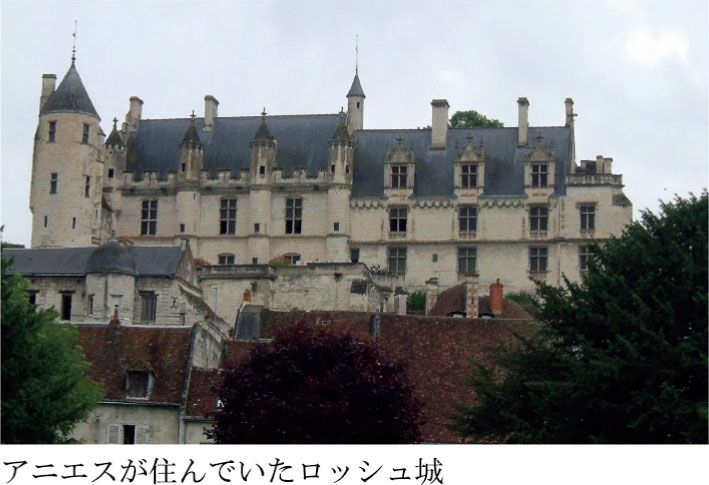
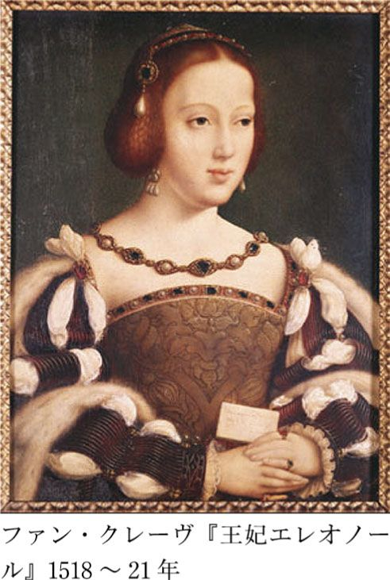
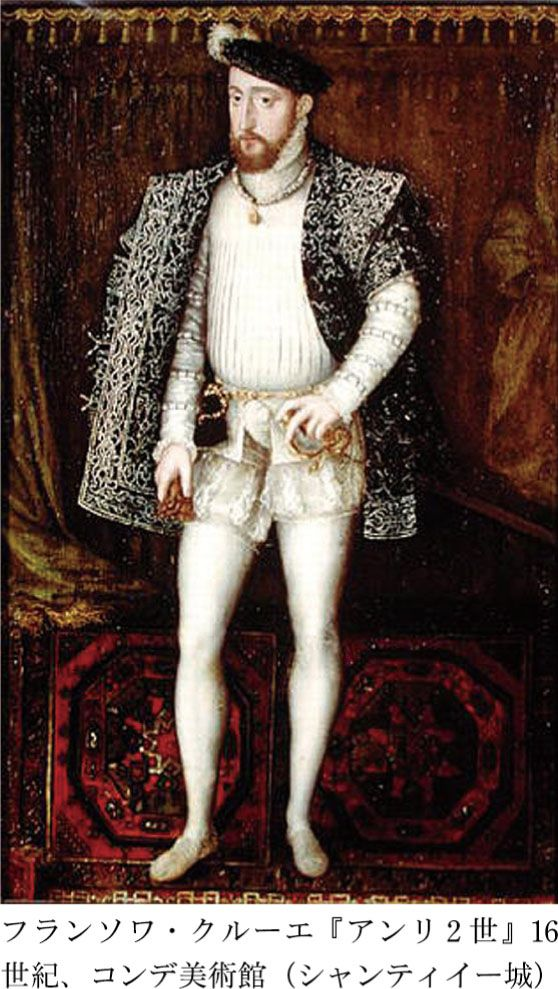
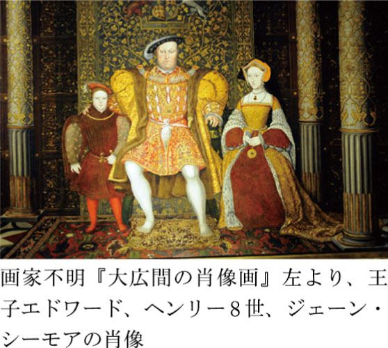
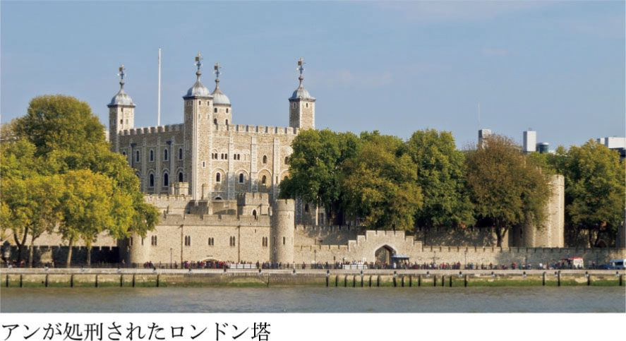
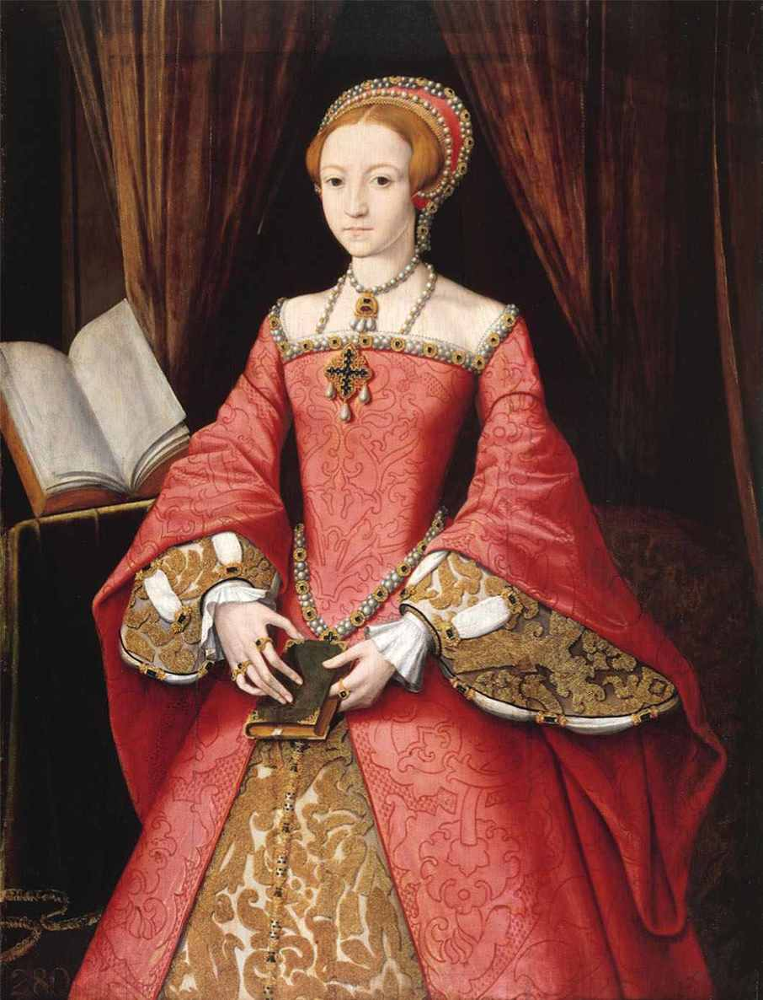
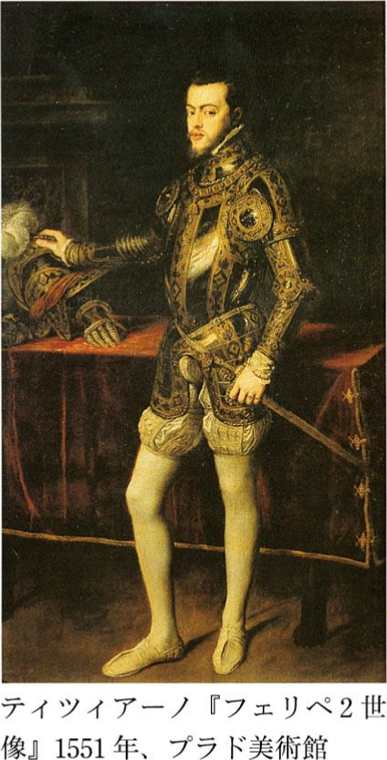
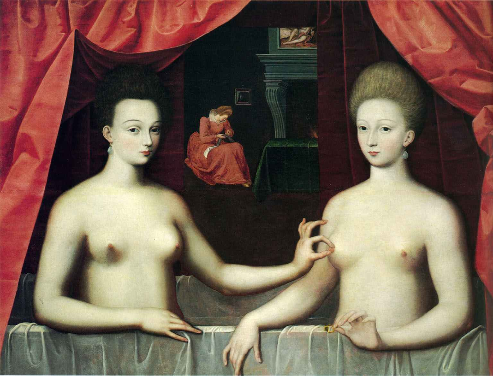

| 美女たちの西洋美術史～肖像画は語る～ | |
| 木村 泰司 | |
| (2010) | |
肖像画でたどる西洋美術史
私たち人間は、家族や恋人のイメージと共にいつも暮らしていたい、そして愛する人のイメージを永遠のものとしたいと思う生き物です。時代や民族を問わず、同じことが言えるでしょう。
現代では、写真や携帯電話の待ち受け画面などで、いとも簡単に愛情の対象を保存したり、目に留めることができます。しかしそれは、現代を生きる人間ならではのラグジュリー（贅沢）であって、長い人類の歴史では、ほんの一部の人間にしか許されない特権でした。
また人間は、自己顕示欲という自分に対する強い愛情も抱くものです。特に時の権力者たちは、自分自身の栄光や権力を、未来永劫まで示し続けたいと願うものです。もちろん様々なかたちで、自分が生きた証を残したいと思うことは、人間としての本能なのでしょう。
それらの欲望に応える一つの手段として、個人の肖像があったのです。
人類の歴史は、愛や欲望によって大きく動かされてきました。そして同じことが、西洋美術における肖像画の発展にもいえます。肖像画も、愛と欲望の産物なのです。そしてその歴史の陰には、多くの麗人たちの存在がありました。
個々の肖像画の話に入る前に、まず、肖像画を美術史の中に捉えてみます。
古代の肖像芸術
西洋文明の原点であり、西洋美術史の出発点ともいえる古代ギリシャ。ギリシャ時代の絵画には、すでに写実的な個人の肖像画が存在していたことは文献ではわかっているのですが、残念ながらそれらは現存していません。しかし、当時のコインや古代ローマ時代に作られたコピーなどを見ると、それらは非常に写実的で、人物の特徴がよく表されています。
時代を下って、ギリシャから文明と美術を〝継承〟した古代ローマにおける個人の胸像やフレスコ画を見ると、モデルとなった人物のアイデンティティが、ギリシャ時代に比してとても際立っています。そこには、先祖崇拝のため、または個人における記念のためという、肖像彫刻および肖像画の二大目的・機能がすでに確立していることが見てとれます。西洋における「個人」の概念の発達とともに、肖像芸術の発展があったと言えるでしょう。
ちなみにその古代ローマ社会では、肖像画よりも耐久性のある胸像彫刻が好まれました。現存する作品を見ると、その深く刻まれた皺までも表現するほどの写実性に驚かされます。この容赦のない写実性こそが、当時のローマ人が求めたものだったのです。
古代ローマの肖像画で私たちが目にできるものは、とても限られています。そのほとんどが、ローマ支配下の下エジプト・ファイユーム地方で出土したものです。これらは、埋葬用マスクの代わりとしてミイラに取りつけられていた肖像画です。ギリシャ・ローマの写実的な肖像画の伝統を継承していると考えられています。
それらの多くは生命力に溢れ、強い眼差しが際立っています。古代メソポタミア文明から古代ローマ時代まで、「瞳は魂の窓」と考えられていましたが、ただ顔を似せるだけでなく、永遠の魂の存在を信じた往時の人々の宗教観がその眼差しにうかがえるようです。
新しい宗教の下で
３８０年、ローマ皇帝テオドシウス１世（在位３７９～３９５）が出した勅令によって、キリスト教がローマ帝国の国教となりました。そのことから、異教徒による偶像崇拝が禁止されます。
ヨーロッパ社会のキリスト教への改宗は、西洋文明を大きく変化させました。それは当然、美術の世界においても同様でした。
個人の肖像は、キリスト教美術においては軽視されました。なぜならキリスト教では、人間は神より劣り、そして肉体は魂・精神よりも劣ると考えられたからです。古代ギリシャ・ローマ時代の大らかな偶像崇拝から、社会が一変しました。ちなみに古代オリンピックを廃止したのも、このテオドシウス１世です。肉体よりも精神や魂を優位とするキリスト教倫理観から見れば、異端の全能の神ゼウスに捧げる全裸の男たちの競技など、到底考えられないことだったのです。
こうして社会が激変し、人間が中心であった古代の価値観が否定され、キリスト教の神が社会の中心となっていきました。そして偶像崇拝に対する抵抗から、初期のキリスト教は神の姿を表現することさえも問題視しました。
しかし徐々に教義を伝えるための手段として、聖像を受け入れていきました。なぜなら、当時の人々はほとんどが文盲だったからです。
こうして伝達としての役割を得たキリスト教美術でしたが、写実的である必要はありませんでした。むしろ意図的に抽象性を強調し、写実性を薄めたのです。
なぜならば、キリスト教が異端とみなす古代ギリシャ・ローマの宗教は、立派な彫刻として写実的に表現されていたからです。人間もしくは人間に近い姿をした神々を崇拝する異端信仰を真っ向から否定するためにも、キリスト教美術ではその対極的なイメージを浸透させなければなりませんでした。
神のイメージが抽象的になるにしたがって、人間も神より下の地位に相応しいイメージとして表現されるようになっていきます。キリスト教美術における人間の図像は、外見の美しさより内面（魂）の美しさの方が求められるようになりました。
キリスト教の広がりは、肖像表現を暗黒時代へと引きずり込みました。古代に発展した肖像芸術がルネサンス時代に再び息を吹き返すまで、中世という千年の眠りが必要だったのです。
人間の時代、再び
個人の肖像が再び現れるようになるには、14世紀まで待たなくてはなりませんでした。ヨーロッパでは13世紀くらいから徐々に市場経済が発展し、社会にゆとりが生まれ始めます。この経済的および精神的なゆとりがないことには、文化・芸術というものも発展しません。そして経済が発展すると、神聖な世界でなく世俗的なものが好まれるようになります。社会に生まれたゆとりによって、人々が人間性に着目する時代が到来したのです。
例えばキリスト教の信仰においても、それまでは大した存在感もなかった聖母マリアの夫でキリストの養父ヨセフの地位が向上してきました。養父ヨセフの善き人間性が着目され、称賛されるようになったのです。
こうして宗教美術でも、それまでの超然としたキリスト像から、苦悩や苦痛といった人間性を強く表したキリスト像が造形化されるようになりました。
この人間性への着目は、13世紀以降アルプスの北（ネーデルラントやフランス）と南（イタリア）でほぼ同時期に起こりました。社会的背景は違えども、人間性の昇格が起こったのです。
この人間・個人への関心は、もちろん肖像芸術の発展へとつながりました。キリスト教社会における人間性の向上は、人間の存在自体を神に近づけたのです。14世紀に入ると、宗教美術にさえ寄進者や画家自身の肖像が描かれるようになっていきました。これらが発展して、独立した肖像画となるのです。
神に対する愛が宗教画の発展を導き、人間への愛惜や称賛が肖像画の発展を導いたといえます。
四分の三の貴人たち
北ヨーロッパにおいて、肖像画のみならず絵画芸術がもっとも隆盛したのがネーデルラントでした。15世紀半ばまで、ブルゴーニュ公国として繁栄を極めた土地です。
ブルゴーニュ公国は、伝統的に古代ローマの影響が強いイタリアとは違います。ルネサンス期のイタリアの肖像画が、古代のコインをお手本にしたプロフィール（側面）像だったのに対し、北方の画家たちは早くにプロフィールから四分の三正面像へと移行しました。それはまず宗教美術から始まりました。
当時、寄進者が贖罪のために、画家たちに描かせることが多かったのが宗教美術です。発注した本人及びその家族の姿を、聖書の一場面を描いた絵の中に描き込んでほしいという注文がなされるようになります。もちろんそこには、自分たちの社会的な地位を誇りたいという世俗的な願望もありましたし、自分たちの姿をこの世に生きた証として残したいという本能的な願望もありました。伝統的に写実的な描写を得意とする北方の画家は、パトロンたちの姿を形式的なプロフィールではなく、より自然な四分の三正面像で描くようになったのです。
こうしてイタリアではなく北ヨーロッパで、四分の三正面像が発展していきました。新しい肖像表現の時代へと入っていったのです。
その現存する最も古い作品が、オーストリア大公ルドルフ４世（在位１３５８～６５）の四分の三正面像です。ちなみに彼は、後にハプスブルク家のみに許された「大公」の称号を初めて冠した人物でした。
この作品は現在では無名の画家によるものです。おそらく死の前後に描かれたこのたいへん写実的な肖像は、大公自身が建設を命じたウィーンの聖シュテファン寺院にある大公の墓の上に長年飾られていました。
四分の三正面像が発展したネーデルラントに対して、イタリア人の画家ピサネッロ（１３９５頃～１４５５頃）は、イタリア人の肖像画を描くときはイタリアの伝統に従ってプロフィールで描いています。
しかし、１４３３年に描いた神聖ローマ皇帝およびハンガリーの王ジギスムント（皇帝在位１４１１～３７、ハンガリー王在位１３８７～１４３７）の肖像は、アルプスの北の様式に合わせて四分の三正面像で描いています。これは、神聖ローマ皇帝としてローマで戴冠した前後に描かれたものです。肖像画としてはめずらしく歯まで描かれていて、皇帝の人間性を感じることができるくらいです。
ギャラリーの誕生
このように、形式的な表現から写実的な表現へと移行していった理由の一つに、北ヨーロッパにおける、祈祷のために使う装飾挿絵つき写本の隆盛があります。フランスの王族が盛んにこれらを求めた結果、14世紀から15世紀にかけて多くの傑作が生まれました。そしてそれらの多くは、フランドル人の工房によって制作されたのです。
多くの人の目に触れる公的な役割が強い絵画に比べ、注文主との関係がより密接だったのが写本でした。その結果、自由な創造性を発揮することが可能になったのです。注文主やその周りの人々の姿が、個性的に生き生きと写本に描かれるようになっていきました。
ちなみにこの時代、北ヨーロッパにおける美術市場の中心地は、北ヨーロッパ最大の都市パリでした。現代のニューヨークやロンドンのように、いつの時代も大都市が美術市場の重要なマーケットとなるものです。そしてマーケットには購買層だけでなく、供給する側も必要です。この活発な美術市場に引き寄せられて、多くの画家たちがフランドルを含むネーデルラントからパリにやって来たのです。
このようにネーデルラント絵画を中心とする北方美術で、描写という意味でも構図という意味でも写実的な肖像画が発展していくことになったのです。
しかし中世を経て、古代からの永い眠りから覚めた肖像芸術は、いきなり社会の全ての人々に開花したわけではありません。単独の肖像画が描かれ始めた14世紀、そこに描かれたのは高位聖職者や王族、貴族や上層市民階級といったエリート層だけでした。
そして単独で人物が描かれるのですから、よりいっそうの個別性も求められるようになっていきました。残念ながら現在では、14世紀の肖像画の多くが失われているため、それらの特徴を目の当たりにすることはかなわないのです。
ところで、この頃から身分の高い人たちは、自分と同様に身分の高い人物の肖像画を収集し始めました。現在私たちが使う「ギャラリー」という言葉の語源となったのが、収集した肖像画を展示した肖像画陳列室でした。自分および貴人たちの肖像画は、かれらの栄光を永遠に留め、そして広めるための道具だったのです。
そして身分の高い男たちは、自分が愛する女性（複数の愛人の肖像画を集めて私的な空間に陳列していた王族さえいました）の肖像画を求めるようになりました。いつの時代も人間が願っていた、愛する人のイメージを永遠のものとし、常に自分の傍に置いておきたいという欲望が表れたのが、肖像画コレクションというわけです。
＊ ＊ ＊
ここまで、ざっと個人の肖像画のスタイルが確定した15世紀までの西洋美術史における肖像画の変遷をたどってみました。以下の章では、15世紀以降、それぞれの時代の中で描かれた美女たちの肖像画を鑑賞していきます。
そこに生き、肖像画に描かれた女性たちの姿を、西洋美術史とからめて見ていくことで、西洋美術をより身近に感じていただけることと思います。
「赤の他人の肖像画なんかを観て、何が楽しいんだろう」
と感じる方もいることでしょう。かつては私もそう考えていました。
しかし、そこにある肖像画を様々な角度から読み解いていくことで、肖像画に込められた愛と欲望を感じ取ることができるようになります。それは、西洋美術における一つのジャンルである肖像画が、時代を生きた貴人たちに密接に結びついてきたことと深く関係しているからです。
西洋美術史というと、「歴史の勉強をしなくてはならないからめんどくさい」「難解でよく分からない」というイメージを持っている方は、ぜひ肖像画に込められたロマンの世界に一歩足を踏み入れてみてください。彼女たちが人生に何を求め、肖像画のなかに何が描かれてきたのか、この本はその一端を理解する手がかりをご提供することを、一つの目的としております。
ぜひ、じっくりとお楽しみください。
マリー・ド・ブルゴーニュ──ハプスブルク家の繁栄を築いた美女
『マリー・ド・ブルゴーニュ』
ミヒャエル・バッハー、１４７９年、ハインツ・キスターズ・コレクション（スイス、クロイツリンゲン）
『マリー・ド・ブルゴーニュ』
聖マグダラのマリアの伝説の巨匠、１５１５～２０年頃、シャンティイー城／コンデ美術館（フランス）（イタリアの伝統に戻る）

政略結婚の策略
権力と愛はいつの時代も、歴史を大きく動かします。もちろん美術史も同様です。
父親の突然の戦死によって、肖像画文化が隆盛したブルゴーニュ公国の女相続人となったマリー・ド・ブルゴーニュ（１４５７～８２）。彼女も当時の多くの女性のように、時の権力者たちに翻弄された生涯を送りました。しかし、そんな彼女の短い生涯には、中世最後の騎士とまで言われた貴人との愛がありました。そしてこの愛は、その後のヨーロッパの権力地図を塗り替えるほどの結果をもたらしたのです。彼女の肖像画を手がかりに、その愛の歴史を辿っていきましょう。
生前に描かれた姿（一章扉１）、そして死後に描かれた姿（一章扉２）も同じように美しく愛らしいマリーは、15世紀後半のヨーロッパ諸国の間で、「お嫁さんにしたい女性ナンバー・ワン」の地位を誇っていました。そんな彼女は四代続いたブルゴーニュ公国最後の君主、シャルル豪胆公（１４３３～７７）と彼の二番目の妻イザベル・ド・ブルボン（１４３６～６５）の間にブリュッセルで生まれました。
ブルゴーニュ公国とは、ヴァロワ朝のフランス王シャルル５世（在位１３６４～８０）の弟フィリップ豪胆公（１３４２～１４０４）から四代にわたり、現在のオランダ、ベルギー（フランドル）、ルクセンブルク、フランス北部及びフランス東部とドイツ西部までを支配した公領です。
１４７７年にシャルル豪胆公が戦死し、遺児となった美しき女相続人マリーに狙いを定めたのが、「遍在する蜘蛛」と呼ばれたフランス王ルイ11世（在位１４６１～８３）でした。自分の一人息子シャルル王太子（後のシャルル８世、在位１４８３～９８）と結婚させ、ブルゴーニュ公国を勢力下に収めようと画策したのです。マリーにとっては、悪夢のような話でした。そこでマリーは、ある人物に手紙を書いて助けを求めました。二歳年下ですでに彼女の婚約者であった、ハプスブルク家の御曹司マクシミリアン（後の神聖ローマ皇帝、在位１４９３～１５１９）です。
もともとこの婚約は、親同士の計略によって成立していたものでした。当時のハプスブルク家は、神聖ローマ皇帝の冠を授かる、格式的には名門一族だったにもかかわらず、まだヨーロッパの辺境オーストリアの貧乏田舎貴族でした。シャルル豪胆公にとって、愛娘マリーとマクシミリアンの結婚は、財政面では不釣合いではありましたが、ステイタス（身分）という意味では逆だったのです。ブルゴーニュ公家がハプスブルク家に比べ、いくら財政上豊かであっても「公家」でしかありません。シャルル豪胆公はハプスブルク家と婚姻上結ばれることによって、自らが神聖ローマ皇帝位に上るか、国王の位を授かることを目論んだのでした。
こうしてマリーの請願に応えて、マクシミリアンは遠路はるばるブルゴーニュまでやってきました。彼を一目見たマリーは、たちまちこのブロンドで長身の美丈夫に魅了されてしまいます。彼女にとってマクシミリアンは、まさに白馬に乗った王子様だったのです。そしてマクシミリアンも同じように、美しく愛らしいマリーに一目で夢中になったのでした。
二人は相思相愛の夫婦として、夢のような結婚生活をスタートしました。
洗練された宮廷文化
マクシミリアンは生まれつき陽気な人当たりの良い性格で、誰をも魅了し親しまれました。しかし最初、二人の間には母語が違うという言葉の問題がありました。夫婦は当初、その時代の教養人の共通語であったラテン語で会話をしていましたが、やがてお互いの母語（ドイツ語とフランス語）を教えあうようになります。マクシミリアンはその他にも、公国でフランス語と併用されていたフラマン語や、豪胆公の三番目の妻でイングランド出身のマルグリット（マーガレット・オブ・ヨーク、１４４６～１５０３）から英語も学びました。
彼はその後もスペイン語やイタリア語、ハンガリー語にチェコ語までもマスターしていきました。マクシミリアンがマスターした言語の多さは、領土を広めていく多民族国家ハプスブルク帝国の未来を暗示するかのようです。
田舎町ウィーンからやってきたマクシミリアンは、ブルゴーニュ公国とその宮廷の文化レベルの高さに驚愕し、感嘆しました。貧しく質素なオーストリアの宮廷に比べ、はるかに優雅で洗練された公国の宮廷人たちは、マクシミリアンが親しんだ母国の田舎騎士たちとはかけ離れた存在だったのです。そしてオーストリアの田舎出身のハプスブルク家の家臣たちも、ブルゴーニュ公国の洗練された文化を吸収し、のちに故郷ウィーンにおいてもその優雅な文化は発展していきました。マリーとの結婚によって、ハプスブルク家は洗練された宮廷文化の基礎を築くことができたのです。
＊
さて、肖像画に戻りましょう。
１４７９年にチロル出身の画家ミヒャエル・バッハー（１４３５～９８）が描いたマリーの肖像（一章扉１）は、制作年が正しければ、彼女が長男フィリップ（１４７８～１５０６）を出産し、長女マルガレーテ（１４８０～１５３０）をお腹の中に授かる前後の姿です。22歳の母となり、匂うような美しさを誇った姿を留めています。
ミヒャエル・バッハーは、パドヴァやヴェネチアでイタリア・ルネサンス絵画を吸収し、その影響を最も早くアルプスの北にもたらした画家でした。よって彼が描いたマリー・ド・ブルゴーニュも、イタリアの肖像画の伝統に従っています。それは古代のコインが創造源であるプロフィール肖像で、マリーの美しい横顔を残しています。
一方で、マリーの死後にブリュッセルの画家によって描かれた肖像画（一章扉２）は、北方絵画らしく四分の三正面像となっています。「聖マグダラのマリアの伝説の巨匠」として名を残しているこの画家は、１４９０～１５２５年頃にブリュッセルで活動しました。ちなみに、この肖像画は１５１５～２０年頃のものです。マリーの死後30年以上も経ってから描かれていますが、いかに彼女が美しい姫として地元領民たちに慕われたかを彷彿とさせます。
悲劇の死から始まる王朝拡大
幸福そうで美しいマリーの肖像画からは想像もできないような悲劇が、彼女を待ち受けていました。
二人の子供に恵まれ、幸せな結婚生活を送っていたマクシミリアンとマリーでしたが、１４８２年、懐妊中のマリーは、反対を押し切ってマクシミリアンの狩猟に同行した挙句、落馬事故を起こしてしまったのです。振り落とされたマリーは、急いでブリュージュのプリンツェンホフ宮殿に運ばれました。そして死を覚悟した彼女は、遺言状を認めました。彼女は子どものフィリップとマルガレーテを公国の相続人とし、マクシミリアンにフィリップが15歳に達するまで公国の統治を委任したのです。
落馬事故から３週間後の３月27日、臨終の床で家臣の金羊毛騎士たちにマクシミリアンへの忠誠を尽くすことを涙ながらに頼みました。そしてついに、その日の夜にマリーは、マクシミリアンに両手を握られたまま25歳の生涯を終えたのでした。美しく幸せだったマリーの突然の死は、彼女を誇りにしていた領民たちに多大な衝撃を与えました。４月３日に行われたマリーの葬儀には、社会のあらゆる階層から１万５千人もの人々が参列したといいます。
当然のことながら、マクシミリアンの悲しみはあまりにも深いものでした。彼のその後の人生において（後に再婚をするにせよ）、マリーほど愛情を注ぐ女性は二度と現れることはありませんでした。
しかしマリーの死と引き換えのように、その後のハプスブルク家は、ヨーロッパの王冠を次々と掌握していくことになります。顧みればその出発点となったのが、マクシミリアンとマリーの結婚だったのです。
彼らの子ども、フィリップとマルガレーテは、スペインのカトリック両王（カスティーリャ女王イザベル１世、在位１４７４～１５０４とアラゴン王フェルナンド２世、在位１４７９～１５１６）の二人の子どもたち、王女フアナ（１４７９～１５５５）と王子フアン（１４７８～９７）との二重結婚が約束されました。
マルガレーテは１４９７年にスペインの王子フアンに嫁ぎますが、元来虚弱な体質だったフアンは、幸せな新婚時代の最中に急逝してしまいます。スペインに用のなくなったマルガレーテは、１４９９年の秋には兄フィリップ夫妻が統治する故国に帰りましたが、この時点でスペイン両王の直系はフィリップに嫁いだ王女フアナだけになります。
ちなみに王女フアナが嫁いだフィリップは、彼の死後に「フィリップ美公」や「端麗公」と呼ばれたほど、母マリー譲りの美貌で知られていました。フアナは美しい夫フィリップを熱愛し、彼の死後狂乱状態となってしまいます。
このフィリップとフアナの間に生まれた長男カルロス（神聖ローマ皇帝カール５世として在位１５１９～５６、スペイン王カルロス１世として在位１５１６～５６）が、フアナの血を引く後継者としてスペイン王に即位することにより、スペインはハプスブルク家の支配下となるのです。もちろん、スペインを支配するということは、当時はナポリ、シチリア、サルディニアだけでなく、新大陸までも手中に収めることを指していました。そのうえ父方の祖母マリーが相続人だったため、ネーデルラントもスペイン王カルロスの領地となります。
さらなる二重結婚
カルロスの弟、次男のフェルディナント（１世、神聖ローマ皇帝在位１５５８～６４、オーストリア大公在位１５２１～６４）は、オーストリア系ハプスブルク家の祖となりました。フェルディナントと妹マリアは、両親のフィリップ美公とフアナの結婚のように、二組の兄弟における二重結婚を行うことによって、ハンガリーとボヘミアの王位を手に入れました。１５２６年、マリアの嫁いだハンガリー王ラヨシュ２世は世継ぎなくして、弱冠20歳でオスマン帝国との戦いで戦死してしまうのです。後を継承したのがフェルディナントでした。
このような、幾重にも張り巡らされた婚姻政策の成功によって、ハプスブルク家はヨーロッパの広大な領地を支配する存在となっていきます。
「戦争は他家に任せておけ。幸いなオーストリアよ、汝は結婚せよ」とは、まさにハプスブルク家を表す言葉です。この一族が十八番とした結婚による領土拡大政策は、マクシミリアンとマリーの結婚が発端となったといっても過言ではないのです。
その後のハプスブルク家をはじめとするヨーロッパ王家の婚姻政策には、近親婚や年の差婚、望まれない結婚など、暗い影がつきまうことが多々ありましたが、この言葉には、マリーとの恋愛と結婚、結果としての王家の繁栄という成功体験に裏づけられた一族の感慨が含まれているようにも感じられます。
１５１９年に神聖ローマ皇帝マクシミリアン１世が亡くなると、孫のカルロス１世が神聖ローマ皇帝カール５世として即位しました。シャルル豪胆公にしてみれば、自分の曽孫が自身の野心を実らせてくれたことになります。
描かれなかった肖像画
こうしてマクシミリアンとマリーの愛の結晶は、ヨーロッパのみならずアメリカ大陸や太平洋にまで広がる領土を治める、ヨーロッパ随一の名家として発展していったのです。
章末にあるデューラーの描いたマクシミリアンの肖像は、１５１９年、彼が亡くなったその年に描かれたものです。
１５１８年、デューラーはアウグスブルクで催された帝国会議の際に、チョークでマクシミリアンをスケッチしました。そして翌年、皇帝崩御の後にそれをベースにこの肖像画を描きました。私服姿のマクシミリアンが左手に柘榴を持っていますが、柘榴は皇帝の紋章であると同時に、復活を象徴しています。
多くの芸術家を庇護したことで知られるマクシミリアンは、彼らが仕事をしている姿を見ることが好きでした。デューラーも皇帝から年金を支給されていた一人です。
ある日、梯子の上で仕事をしていたデューラーを見かけた皇帝は、廷臣にその梯子を支えるように命じました。当時、画家はアルプスの北では身分の低い職業とされていたため、貴族である自分が梯子を支えることに不満を持ったその廷臣は、自分の召使に梯子を支えさせました。するとマクシミリアンは「皇帝である自分はどんな農夫でも貴族にすることは可能だが、貴族の誰一人もデューラーほどの芸術的才能を持っているものはいない！」と、その廷臣の傲慢さを叱責したそうです。
＊
そのマクシミリアンは、死後、自らの心臓をマリーの柩に入れるように希望したと言います。たった25年の短い生涯だったマリーですが、彼女の死後37年を生きたマクシミリアンが、いかに敬虔に彼女を愛していたかが伝わってきます。もしマリーが長生きしていたとしたら、幸せな結婚生活に恵まれた夫妻の愛情溢れる肖像画が描かれていたことでしょう。
肖像画をアルプスの北と南で比べてみると、伝統的に細密描写が得意で写実性が際立つ北方絵画（第１章参照）に対し、古代芸術の本拠地でルネサンス発祥の地イタリアでは、理想美の追求が重んじられました。
「序章」でも述べたように、中世以降のイタリアで、個人の肖像が生まれたのは14世紀に入ってからのことでした。その例として、ジョットがスクロヴェーニ礼拝堂に描いたフレスコ画『最後の審判』（１３０５～６年）があります。
ここには寄進者エンリケ・スクロヴェーニが、聖人たちと同じ大きさで描きこまれ、また同じ絵にジョット自身も自らの姿を描き含めています。美術史ではこのスクロヴェーニを描いたフレスコ画が最初の個人の肖像とされていることから分かるように、イタリアの肖像画の原点は宗教美術にありました。
そしてそれが、初期ルネサンス絵画の創始者とも言われるマサッチオ（１４０１～２８）の『聖三位一体』にも継承されていきます。建築家ブルネレスキの協力の下、幾何学式遠近法を駆使した見事な空間構成の中に、寄進者ドメニコ・レンツィ夫妻がひざまずいています。
イタリアにおける肖像画は、古代のコインをモデルとしたため、ピサネッロ（１３９５頃～１４５５頃）の肖像画（ジウネラ・デステの肖像）のようにプロフィール像から始まりました。このエステ家の公女ジネヴラ・デステ（１４１９～４０）は、リミニの領主シジスモンド・パンドルフォ・マラエスタに嫁ぎましたが、１４４０年に彼女の不貞に怒った夫によって毒殺されたと言われています。
ちなみに、肖像画にはさまざまな「シンボル」が描きこまれることが多くあります。ここでジネヴラの背後に咲き乱れているのはおだまきの花です。
この花は精霊のシンボルとされ、その周りを飛ぶ蝶々は古代からルネサンス時代に至るまで、常に魂の象徴でした。この肖像画は彼女の死後に完成したものとされています。
ルネサンスと北方絵画
徐々に、フランドル絵画の影響から四分の三正面像がイタリア半島でも描かれ始めます。その最初の例とされるのが、左のカスターニョ（１４２１頃～５７）の『ある男の肖像』（１４５０年頃）です。15世紀後半になると、イタリアではフランドル絵画に対する熱狂が高まりました。イタリアの画家たちもそんな庇護者たちの好みに応えるべく、風景描写や布地の細密描写といったフランドル絵画の特徴を取り入れていきました。そうした傾向の中に、肖像における写実的な四分の三正面像も含まれていたのです。イタリア・ルネサンス絵画の発展の陰にフランドル絵画の影響が少なからずあったことが分かります。
ただし、細密描写を賞賛する傾向のあった北方と違い、古代芸術をお手本としたイタリアは、理想美を探究する傾向が強い土地柄でした。そして、描かれる人物の個性だけでなく、画家の芸術的な個性も強く表れています。
例えば、次のボッティチェッリ（１４４５～１５１０）が描いたメディチ家の貴公子ジュリアーノ（１４５３～７８）は、長身の美男子でフィレンツェの女性たちの憧れの的でした。しかし、１４７８年にローマ教皇シクストゥス４世（在位１４７１～８４）とパッツィ家の陰謀によって暗殺されてしまいます。その伊達男ぶりを、メディチ家に庇護を受けたボッティチェッリの筆が際立たせています。ルネサンス時代の画家たちは、パトロンとなった王侯貴族や大商人たちとの交流の中で、新しい文化をことほぐような華麗な肖像作品を多数残すことになります。
時代のスーパー・レディと巨匠たち
さて、ここで登場するイタリア美女の肖像の代表は、なんといってもイザベッラ・デステ（１４７４～１５３９）です。
夫によって毒殺されたと噂の残るジネヴラ・デステの姪に当たるのが、同じくエステ家の公女イザベッラ・デステでした。才色兼備で知られ、ルネサンスを代表するスーパー・レディとされています。エステ家は、ルネサンス文化の隆盛に貢献した一族です。長年にわたってイタリアの文学や芸術を庇護したことでも知られています。
ピサネッロやピエロ・デッラ・フランチェスカ（１４１５頃～９２）も、エステ家のために仕事をしています。このような時代と環境のもとに生きたイザベッラ・デステの肖像は、当時の画家とパトロンとの関係や、肖像画が彼らの身分・権力・財力だけにとどまらず、その審美眼や教養までをも誇示する手段として機能していたことを、私たちに生き生きと伝えてくれます。
１４９０年、16歳でマントヴァ侯フランチェスコ２世ゴンザーガ（１４６６～１５１９）に嫁いだ彼女は、夫を凌ぐ政治・外交手腕を発揮していき諸外国に対応しました。そして彼女のお膝元マントヴァには、パドヴァの画家アンドレア・マンテーニャ（１４３１～１５０６）などが、彼女の庇護を求めて集まったのです。そうしたイザベッラに相応しく、彼女はルネサンスを代表する画家二人、レオナルド・ダ・ヴィンチ（１４５２～１５１９）とティツィアーノ（１４８８／９０～１５７６）に肖像画を依頼しています。
ちなみにイザベッラの妹ベアトリーチェ（１４７５～９７）は、１４９１年にミラノ公ルドヴィーコ・スフォルツァ（通称ルドヴィーコ・イル・モーロ、１４５２～１５０８）と結婚しました。彼はレオナルドのパトロンだったことでも知られています。ルドヴィーコは最初はイザベッラに求婚したのですが、すでにマントヴァ侯との婚約が成立していたため、代わりにベアトリーチェに白羽の矢がたったのでした。ルドヴィーコとベアトリーチェの結婚の祝祭の芸術監督は、レオナルドが務めました。出席したイザベッラが羨ましく思い、妹に対して対抗意識を燃やしたことは容易に想像できます。
彼女はミラノ公の宮廷の文化レベルの高さに大いに刺激を受け、自分自身の教養や文化レベルを向上させることに意欲を燃やしはじめます。こうしてイザベッラの嫁ぎ先マントヴァのゴンザーガ家の宮廷にも、多くの文化人が集うことになりました。そして彼女自身も美術コレクションを充実させていきました。
未完成のスケッチ
しかし、財政状態は決して豊潤でなかったゴンザーガ家の女主人であったイザベッラは、〝芸術の庇護者〟という名声とは裏腹に、決して〝金払いの良いパトロン〟ではなかったようです。そんなこともあってか、レオナルドは１５００年に道中マントヴァに立ち寄りましたが、決して長居をすることはありませんでした。その結果、彼が残したイザベッラの肖像は、左のように未完成のスケッチのみとなってしまいました。
客人としてのマナーからでしょうか、レオナルドはチョークを取ってイザベッラの肖像を描いたのですが、マントヴァを去った後に完成して送るはずだった肖像画を、執拗な催促にもかかわらずとうとう完成させることはありませんでした。当時の彼は現代のスーパースターのような存在で、小国マントヴァの侯妃イザベッラの庇護になど別に頼る必要がなかったからです。そしてイザベッラにも、当代一の画家に無理難題を言えるほどの財力もありませんでした。
ちなみに、自らの「芸術の庇護者である優美な侯爵夫人」としてのイメージを大切にしたイザベッラは、冷徹なリアリズムで知られるマントヴァ侯のお抱え画家マンテーニャの才能を評価していたにもかかわらず、彼女自身の肖像画は描かせていません。確かに、肖像画におけるリアリズムをあえて好む女性は少ないものです。ルネサンス期を代表する才女イザベッラといえども、それは同じだったようです。
イザベッラは洗練されたファッション・センスの持ち主としても知られていました。彼女はヴェネチアにドレスや宝石など様々な品物を注文しましたが、その中に、冒頭に掲げたヴェネチアを代表する画家ティツィアーノによる肖像画がありました。ティツィアーノの、モデルの外見をその社会的身分に相応しく理想化する画風は、マンテーニャのリアリズムを肖像画には求めなかった彼女の御目鏡にかなったことは容易にうなずけます。
落日、新しい生活
しかしそんなイザベッラも、肝心な夫婦生活においては夫の愛を失ってしまうことになります。フランチェスコは、何でも自分で仕切ってしまうイザベッラに愛想を尽かしてしまうのです。その結果、40歳になったイザベッラは、夫の元からもそして政治の駆け引きからも距離を置くことにしました。合理主義をよしとするルネサンスの女イザベッラは、悲劇のヒロインとして悲嘆にくれることなく前向きに生きていったのです。
人生にひとくぎりつけた彼女は、イタリア半島一の都市ローマを目指しました。そして永遠の都は、才色兼備で知られたこの淑女を大歓迎で迎えたのです。メディチ家出身のローマ教皇レオ10世（在位１５１３～２１）も、イザベッラをヴァチカンで大歓待しました。元々この教皇は、派手好き、お祭好きで有名ではありましたが。そしてローマには、カスティリオーネ（１４７８～１５２９）のような文化人たちも彼女の到着を待ち構えていました。もちろん社交生活ばかりでなく、ローマの古代の遺跡や最新の芸術が、芸術の庇護者を自負する彼女を夢中にさせたのでした。
イザベッラは、長男フェデリーコ２世（１５００～４０）のためにも、マントヴァを侯国から公国に押し上げるために尽力しました。そのお陰で、１５３０年から息子フェデリーコ２世は初代のマントヴァ公爵となれたのです。晩年、未亡人となったイザベッラはその息子からも国政から遠ざけられましたが、それでも建設的な彼女は、書斎で美術コレクションに取り囲まれながら過ごす傍ら、ロマーニャ地方にあるソラローロという小さな地域を思うままに見事に統治します。
こうして最後までルネサンス時代を象徴する女性らしく、建設的に合理的に生きたイザベッラは、１５３９年２月13日に65歳の生涯に幕を下ろしました。そしてその頃、彼女が愛したルネサンスの春風は、イタリアからアルプスを越えて、フランスの大地にもそよぎ始めたのです。
人間性を映し出すのが肖像画
さて、ルネサンス時代に描かれた肖像画の代表例を、あといくつか観てみましょう。
イザベッラがローマで交流した、外交官であり文学者である貴族カスティリオーネ。彼はルネサンス時代を代表する大宮人でした。『宮廷人』の著者としても知られています。
友人だったラファエロ（１４８３～１５２０）が描いたこの肖像画は、その眼差しや表情からもカスティリオーネの知性、教養、品格、高尚さといった人間の持てる最高の資質がうかがえます。自然体でありながらもカスティリオーネの存在感を示したこの作品は、肖像画の傑作として知られています。
一流の肖像画とは、当人に似ているのは当たり前として、その社会的身分に相応しい理想化が図られているだけでなく、人間性をも醸し出さなくてはなりません。そういった意味で、このカスティリオーネの肖像は、肖像画のお手本中のお手本として後世の画家たちに名声を博しました。
才女の気品──チェチリア
レオナルドの肖像画といえば、現在ルーヴル美術館が所蔵する『モナ・リザ』（１５０３～０６）があまりにも有名です。その『モナ・リザ』と並ぶレオナルドの代表的な肖像画として、このチェチリア・ガッレラーニの肖像画があります。
チェチリア（１４７３～１５３６）は、ベアトリーチェの夫ルドヴィーコの結婚前の愛人でした。この絵が描かれた頃は16歳くらいでしたが、当時から才色兼備な女性として称賛の的でした。ちなみに白テンはルドヴィーコの象徴《白テンの勲位》であると同時に、自身の身体が汚れることを嫌う動物であることから、純潔の象徴でもありました。そして白テンを意味するギリシャ語「ガレー」は、彼女の姓ガッレラーニを指しています。
この絵を制作中、チェチリアは宮廷の庇護下にあった知識人を集め、レオナルドとの会話を楽しみました。若いながらも成熟した気品あふれる表情からは、レオナルドが彼女のことを高く評価していたことが、ひしひしと伝わってくるように感じます。
チェチリアが招いた知識人・芸術家の集まりは、ヨーロッパのサロン文化の原点とされています。しかしルドヴィーコとベアトリーチェの政略結婚後、彼女は持参金とともに宮廷を去り、ベルガミーニ伯爵に嫁いでいきました。
始まった宮廷の「伝統」
さて、舞台はフランスへと移ります。
フランス人は、いつの時代も恋愛に関しては洗練されており、そして長けているとみなされるようです。王の愛人を公式化し、日陰の存在からスポット・ライトを浴びる存在にしたのもフランスでした。その第一号とされるのが、フランス王シャルル７世（在位１４２２～６１）の公妾アニエス・ソレル（１４２１～５０）です。
シャルル７世は１４２２年に、お世辞にも美しいとは言い難かった従姉妹のマリー・ダンジュー（１４０４～６３）と結婚しました。二人の間には12人の子供が生まれましたが、とにかくこの王は女癖が悪く、女性と見れば手当たり次第といったところがありました。フランス中の多くの家庭や未婚女性を不幸にした、業の深い男だったのです。
そのシャルル７世がアニエス・ソレルと出会い、熱烈な恋に落ちてしまったのが１４４３年のことでした。王は40歳、そしてアニエスが22歳の頃のことです。アニエスは兵士ジャン・ソローとヴェルニュの女城主カトリーヌ・ド・メーニュレの娘である王妃マリー・ダンジューの弟ルネ・ダンジュー（１４０９～８０）のもとで、ルネの妻イザベル・ド・ロレーヌ（１４００～５３）の侍女として仕えていました。並外れて美しく知的なアニエスに王は一目で魅了され、熱に浮かされたように夢中になり自分の愛人にしたのです。

やがてアニエスの存在を王妃マリー・ダンジューが知るところとなりました。王妃は心のそこからシャルル７世を愛していましたが、当時彼女は40歳前後。若くて美しく抜群のプロポーションを誇るアニエスに、女の魅力では敵わないことを悟ります。そして高貴な女性らしく、落ち着き払った態度でアニエスの存在を優雅に認めたのです。
こうしてフランスの宮廷で呼ばれるところの「メトレス・アン・ティトゥル（公認の寵姫）」と見なされた最初の存在こそ、このアニエス・ソレルでした。
シャルル７世を夢中にさせたアニエスは、贅を尽くした生活を送り、宮廷でも事実上の王妃のように振る舞い、政治にも関わるようになっていきました。こうしてフランス王の公妾は、フランス革命が起こり絶対王政が倒されるまで、フランスでは公式な職務として王に仕える存在となったのです。
シャルル７世は、片時もアニエスを傍から離しませんでした。そして同時に、アニエスは他の宮廷人や一般民衆からは憎悪の対象となっていきます。このように、王妃ではなく王の公妾が憎悪の対象となるフランスの「伝統」も、アニエスから始まったのです。
しかし悪いことばかりでもありませんでした。アニエスは一部の宮廷人のようにシャルル７世の弱い性格を増長させるのではなく、むしろくじけ気味になる王に勇気を持たせ、奮い立たせながら政務を助けました。彼女は愛の世界だけでなく、政務においても王に対して強い影響力を持っていたのです。
シャルル７世が与えたボーテ・シュル・マルメの別荘の名前から「メトレス・ド・ボーテ〈麗しの君〉」と呼ばれたアニエス。冒頭に掲げた、ジャン・フーケ（１４１５／２０頃～８０頃）がアニエスを聖母のモデルにして描いた祭壇画のように、彼女は美しい胸が自慢の余り、体型を強調したドレスだけではもの足りず、片方の乳房をむき出しにしていました（作品自体はアニエスの死後に描かれたものです）。当然、王妃をはじめ宮廷人たちからは顰蹙を買いましたが、シャルル７世は大喜びだったことが容易にうかがえます。
毒殺の噂
アニエスに出会って以降も、アニエス一筋というわけにはいかないシャルル７世ではありました。しかし影響力の強いアニエスに対し、シャルル７世も様々なかたちでその愛に報いました。数多い贈り物もその一部で、ダイアモンドの装飾品などを贈っています。そしてそれまで男性の装飾品であったダイアモンドを、初めて身につけた女性としてアニエスは装飾史にも名を残すことになりました。ただし当時のダイアモンドは現代のような研磨技術もなく、宝石としてもルビーやエメラルドに比べ値段も低いものでしたが。
彼女はシャルル７世との間に、３人の娘を授かりました。そして第四子を妊娠中にもかかわらず、遠征中の王の求めに応じノルマンディーに向かう道中で病に倒れ、１４５０年２月９日に28歳で突然の死を迎えたのです。
嘆き悲しんだシャルル７世は、アニエスが毒殺されたと疑い、財務官ジャック・クール（１３９５～１４５６）に容疑をかけてしまいます。それは莫大な資産を築いたジャック・クールに対する反感からで、無実の彼は財産没収の上に禁固刑に処せられてしまうのです。歴史的にも恩人のジャンヌ・ダルク（１４１２～３１）を見殺しにしたと見なされるように、こういう姑息なところがシャルル７世にはありました。
しかしアニエスは砒素中毒で死亡したことは確かで、実際の犯人は父王に対する彼女の影響力を危惧した王太子ルイ（後のルイ11世、在位１４６１～８３）ではないかと言われています。父王と対立していた王太子は、アニエスが持っていた影響力を疎んじていただけでなく、その存在自体が母マリー・ダンジューを悲しませていたため、アニエスを心の底から忌み嫌い憎んでいたのです。
アニエスの死後、シャルル７世は彼女を公爵夫人に叙し、高位の貴族のみが埋葬される墓所に葬ることで彼女に報いました。
こうして、「麗しの君」と呼ばれた寵姫を亡くしたシャルル７世でしたが、その晩年は王太子ルイとの確執に悩み、アニエスのように毒殺されることを恐れる余り食事を拒んだ結果、餓死したと伝えられています。
公認の寵姫の忠誠
左は、無名の画家の筆による、アニエス・ソレルの肖像といわれるものです。アニエスは、忠実を表す犬に手を置いています。王に対する彼女の愛情や忠誠心の表れです。こうしたシンボリズムや、人物を暗い背景に置く描写には、ネーデルラント絵画の影響がうかがえます。
フランスにおけるネーデルラントの画家たちの影響は、長年にわたってとても大きいものがありました。フランスの王侯貴族からの需要や、北ヨーロッパ随一の大都市パリの活発な美術市場が、多くのネーデルラント人画家をフランスに惹き付けました。後日美術史において、フランスの画家と見なされるようになったネーデルラント出身の画家も少なくありません。
＊
16世紀のフランスを代表する２人の才女についても、ここで紹介しておきましょう。
サヴォイア公フィリッポ２世（１４４３～９７）の娘ルイーズ・ド・サヴォワ（１４７６～１５３１）は、当時のフランスの宮廷で最も頭脳明晰で教養のある人物と考えられていました。ルイーズは、シャルル７世の孫で宮廷の実力者だったアンヌ・ド・ボージュー（１４６１～１５２２）の計らいでアングレーム伯シャルル・ドルレアン（１４５９～９６）と結婚し、二人の間にマルグリット（１４９２～１５４９）とフランソワ（１４９４～１５４７、のちのフランス王フランソワ１世、在位１５１５～４７）が生まれました。その結婚生活は、シャルルの愛人二人、そしてその子供たちとアングレーム城で同居するなど、現代人の常識からかけ離れたものでした。
しかしフランソワの誕生から２年後、ルイーズが19歳のときに夫シャルルが亡くなります。以後、ルイーズは子供たちの将来を案じ、シャルルの従兄弟にあたるルイ12世（在位１４９８～１５１５）の宮廷に移り、イタリアの最新の人文主義的教育を子供たちに授けることに情熱を傾けました。
ルイ12世に男子がなかったため、王位はフランソワに受け継がれることになりましたが、ルイーズのほどこした教育のお陰で、フランソワは王になってから、イタリアからレオナルドをはじめ芸術家たちを招聘し、イタリアより百年遅れでルネサンス文化をフランスに花開かせます。彼女の苦労は、息子がフランス王として即位することで報われたのでした。
ちなみに、レオナルドの代表作『モナ・リザ』（１５０３～０６年）が、なぜイタリアではなくパリのルーヴル美術館にあるのか、疑問に思う人がいるでしょう。じつは、フランソワ１世によって招かれたレオナルドがその際に『モナ・リザ』を持ち込んだことから、レオナルドがフランスで客死した後に、フランス王家の財産となったものです。
その後も、王となった息子が国内に不在の時には、政治・外交手腕に長じたルイーズが摂政を務めました。「偉大な男の陰に女あり」といいますが、フランソワ１世の場合はその「女」は母親だったのです。
ちなみにルイーズの長女マルグリットの孫が、ブルボン朝の創始者となるナヴァールのアンリことアンリ４世です。そしてこのアンリの最初の妻となったのが、フランソワ１世の孫マルグリット・ド・ヴァロワ（１５５３～１６１５）なのですから、ルイーズが歴史に残した影響の大きさがよくわかります。
右は、ルイーズ・ド・サヴォワの娘でフランソワ１世の姉だったマルグリット・ド・ナヴァール（１４９２～１５４９）の肖像です。彼女は、母親のように大変高い教養の持ち主で、文芸の庇護者であり、自身も短編小説や詩を執筆しました。マルグリットが手にするオウムは巧みな話術を表し、彼女の教養の高さを示していると思われます。
ちなみに、16世紀のヨーロッパでは細密肖像画（ミニアチュール）が流行しました。細密肖像画とは、小規模で主に記念贈答用に作られた精緻な肖像画です。当時の肖像画家の多くは、ニコラス・ヒリヤード（１５４７～１６１９）やフランソワ・クルーエ（１５１５頃～７２）のように細密肖像画も手がけたのです。
ギリシャ神話の女神に扮して
ディアーヌ・ド・ポワティエ（１４９９～１５６６）が、同じ名前の月と狩の女神に扮することで裸体が描かれる正当化がはかられています。
15世紀、レオナルド・ダ・ヴィンチがフランソワ１世によってイタリアから招聘されるなど、フランスがルネサンス文明をイタリアから〝輸入〟し始めます。その結果、地中海的な開放性や官能性をフランス芸術は取り入れ始めました。この肖像画は、フランソワ１世が世を去る頃には、フランスにもルネサンス文化が根づいていたことをよく表す作品といえるでしょう。
ルネサンス期の古典復興以降、神話をテーマにすることは裸体を描く口実となっていました。ちなみにディアーヌの垂直性を協調したプロポーションは、イタリア・マニエリスムの特徴であると同時に、13世紀半ば以降のフランスの宮廷が好む「優雅様式」が見事に融合された結果です。
ルネサンスは、「文芸復興」と翻訳されるように、キリスト教の暗い支配から逃れ、ギリシャ・ローマ時代の文化を取り入れようとした運動のことです。先のアニエス・ソレルの肖像画と比べてみましょう。ちょうど１００年ほどの時間が経過しています。
そうです。アニエス・ソレルはキリスト教の聖母に譬えられていましたが、ディアーヌはアニエス・ソレルのように聖母ではなく、古典文学のヒロインである異端の女神に扮しています。こんなところにも、16世紀におけるルネサンス文化のフランスへの到来の結果、フランスの宮廷の文化・教養レベルが向上していることがうかがえます。この寓意的肖像画が描かれた頃のディアーヌはちょうど50歳頃。不老不死である同名の処女神と一体化し、若々しく輝いています。
誰よりも美しくありたい
16世紀のフランス宮廷を彩った貴婦人の代表といえば、このディアーヌ・ド・ポワティエ以外に考えられないでしょう。
ディアーヌ・ド・ポワティエは、１４９９年９月３日にフランス南東部でも古くからの名門貴族に生まれました。彼女の母親は、フィレンツェのメディチ家とも姻戚関係にありました。
四人兄弟の中で父親に最も可愛がられたディアーヌは、幼い頃から父親の狩や乗馬のお供をしました。この頃から乗馬の際には、日焼けや木の枝を避けるために、黒いビロードのマスクをつけていたといいます。それは当時の淑女の常識でした。彼女は成人しても早朝の乗馬を楽しみましたが、その際にもマスクは欠かさなかったそうです。白い美肌を保つ努力をおろそかにすることなど、ディアーヌにとっては考えられないことだったのでしょう。
他にも父親から授かった健康法として、彼女は早朝に井戸水を浴びることを生涯守っています。これは当時としては、異例の習慣でした。ディアーヌは50歳を過ぎてもその美貌で知られていましたが、そうした基礎は幼少の頃からの習慣や努力の賜物だったといえるでしょう。食生活でも、当時の肉中心の重い食事よりも野菜や果物を好んだそうです。まさに、「ローマは一日にして成らず」と同じように、「美は一日にして成らず」なのです。年齢を重ねた後も、顔に皺ができるのを防ぐために、一人で寝る際には柔らかい枕を重ね、上半身を起こして眠ったそうです。
宮廷で得た信頼
当時のフランスの貴族の娘は、早くから高貴で教養のある女性の家で教育される慣習がありました。ディアーヌも６歳の時にフランス王シャルル８世（在位１４８３～９８）の姉であるアンヌ・ド・ボージュー（１４６１～１５２２）の下で過ごすことになります。大変素晴らしい教養の持ち主だったアンヌの宮廷では、ラテン語やギリシャ語を学び、宮廷の作法やしきたりを身につけていきました。そしてディアーヌは、アンヌから教養だけでなく貴婦人としての品格も学んでいったのです。
１５１５年、フランスの王位はルイ12世から新たにルイーズ・ド・サヴォアの息子フランソワ１世に移りました。そして、15歳のディアーヌにも、結婚という大きな変化が訪れます。彼女の結婚相手にアンヌが選んだのは、ディアーヌより39歳年上のノルマンディー大総督ルイ・ド・ブレゼ伯爵（１４６０頃～１５３２）でした。ルイは名門ブルボン家の親戚で、モーレヴリエ伯でありアネの領主でもありました。そしてシャルル７世とアニエス・ソレルの孫にあたる人物です。
ちなみにフランスでは、若い貴族の娘が父親より年上の壮年の男性（ルイはディアーヌの父より一回り年上）と結婚することは、決して珍しいことではありませんでした。ルイにとって、ディアーヌは二番目の妻でした。
新王フランソワ１世から厚い信頼を置かれ、王の側近として仕えたルイ・ド・ブレゼは、名門の血と莫大な財力を誇っていましたが、猫背な上に美男からは程遠い外見でした。しかし、結婚は情熱の産物ではなくて計画的なものであることは、若くても賢明なディアーヌにはわかっていたのです。二人はパリで結婚式を挙げた後、ノルマンディーの領地アネの城で新婚生活を送りました。ここは狩に最適な場所で、夫婦共々趣味の狩猟を楽しむことができましたし、夫が留守の時には、城が保有する素晴らしい図書室で、ディアーヌは読書に没頭できました。
夫ルイが王の側近だったように、ディアーヌも先王ルイ12世の娘でフランソワ１世と結婚した王妃クロード（１４９９～１５２４）の女官となります。
陽気でコケティッシュなフランソワ１世の宮廷の中で、ディアーヌはプレイボーイの王から「眺めれば楽しく、知れば貞淑」と明言される存在となりました。
そのフランソワ１世はイタリアに進軍した際、イタリアの最新のルネサンス文化に魅了されてしまいます。そしてレオナルド・ダ・ヴィンチをフランスに招聘したように、美しいものには目がない人でしたが、それは芸術品に対してだけでなく、女性に関してもそうでした。王の宮廷には美しい貴婦人たちが集められていましたので、貞淑と評判だったディアーヌに夢中にならなくても、王は十分に満足を得ることができたわけです。そうした放埒な宮廷で、美しいとは決して言われることのなかった王妃クロードが、徳の高いディアーヌを信頼していたことは容易にうなずけます。
人質になった王子たち
しかし１５２４年７月、王妃クロードは25年にも満たない人生に幕を閉じます。夫の情事に神経をすり減らし、その上８年間の結婚生活で７人の子供を出産した結果、彼女は精根尽き果ててしまったのです。
しかし、王妃の死をいつまでも悲しんでいられるほど、宮廷には余裕がありませんでした。なんと翌年の３月、フランソワ１世はパヴィアの戦いで、宿敵のライバルであるスペインのカール５世の捕虜となり、マドリッド郊外に幽閉されてしまったのです。そのためフランソワの母親で王家の中心的存在であったルイーズ・ド・サヴォワは、ディアーヌに自分の孫たちの世話を頼みます。母クロードは天に召され、父王も囚われの身となっていた王子たちの世話を、ディアーヌは優しく穏やかに務めたのです。
結局、１５２６年にマドリッド平和条約が結ばれ、フランスはフランソワ１世と引き換えに二人の王子フランソワ（１５１８～３６）とアンリ（１５１９～５９）を無期限の人質としてマドリッドに送ることになりました。そしてフランソワ１世がカール５世の姉エレオノール（１４９８～１５５８）と再婚することも取り決められます。エレオノールは前妻クロード同様に、フランソワ１世の好みからかけ離れたタイプの女性でした。どうやら、信心深く見栄えのしない地味な妻を持つことは、華やかな放蕩者フランソワ１世の因縁だったようです。
人質の交換は、フランスとスペインの国境にあるビダソア川の中州で行われ、王子たちは父王と引き換えに異国へ旅立ちました。
８歳と７歳の王子二人のスペインでの人質生活は、王族にふさわしいものではありませんでした。スペイン人の牢番だけが付き添い、家庭教師もつけられない状況で母語を忘れかけてしまうほどだったといいます。そしてアンリは、スペインに送られる際に別れのキスをしてくれた美しく優しいディアーヌのことを、小さな胸に暖めながら暗い４年間を牢獄となった荒れた城の中で過ごしていました。
しかしこともあろうに、フランスに無事に帰国したフランソワ１世は、マドリード平和条約をさっさと無効にしてしまいました。そのため、スペインに捕らわれていた王子たちの監禁は、ますます厳しいものになってしまったのです。
一方のんきにもフランソワ１世は、27人の選りすぐりの才色兼備の美女たちを集め、王の付き添いの女官団「ラ・プティット・バーンド」を結成しています。
１５２９年、フランソワ１世はカール５世との間に新たにカンブレー講和条約（貴婦人和約）を結び、翌年いよいよエレオノールがスペインから嫁いで来ました。その際に二人の王子フランソワとアンリにもやっと帰国が許されたのです。ディアーヌは、新たに女官として仕えることになった新王妃エレオノールと王子たち一行をボルドーで出迎えました。結局、フランソワがマドリッド平和条約で守ったのは、エレオノールとの結婚だけだったことになります。

１５３１年、パリで戴冠したエレオノールのための祝祭があり、騎馬試合が行われました。この馬上槍試合の際に、11歳のアンリ王子が敬礼を送ったのは、祝祭の主役であった新王妃ではなく、貴賓席でたおやかに座っていたディアーヌでした。アンリはスペインで監禁中に、スペインの作家モンタルヴォ（１４５０頃～１５０５頃）が書いた『ガリアのアマディス』という騎士物語に魅了され、騎士が忠誠と愛を誓う貴婦人に憧れを抱いていたのです。その貴婦人のイメージにピッタリだったのがディアーヌでした。この憧憬から生まれた彼女への忠誠心と愛は、終生続くことになります。11歳のアンリは、31歳のディアーヌの騎士となったのです。
憧れの女性として
そして運命の歯車は回り続けます。その４ヵ月後に、ディアーヌの夫ルイ・ド・ブレゼが70歳の生涯を終えました。
その時、ディアーヌはまだ31歳。もちろん、現代の31歳とは事情が違います。現代人より10歳ほどプラスした年齢を思い浮かべた方が理解できるでしょう。外見上でも、女性として微妙な年齢でした。一気に中年に相応しい外見に突入するか、容色を維持することに全力を注いで努力を怠らない毎日を過ごすことになるか......。どちらかを選ばざるをえないのは、現代人にとっても変わりはありません。
ディアーヌは、未亡人になったが故に容色を維持し、よりいっそう磨きをかけることを決意しました。夫亡き後、宮廷で生きていかなければならない彼女には、自分を保護してくれる男性の存在が必要だったのです。彼女は毎朝冷たい井戸水を全身に浴びる習慣を続け、黒いビロードのマスクで肌を日光から保護しながら一日に３時間ほど乗馬に出かけるなど、美を維持する努力を怠りませんでした。
そしてルイ・ド・ブレゼの死から２年経った１５３３年、彼女はフランソワ１世に招かれて宮廷に戻りました。ディアーヌは、それまでの伝統的な未亡人の黒い服にヴェールではなく白を加えた喪服を着用し、金髪を解き流して自分の容貌を引き立てました。シルクにレースをあしらったその喪服は、彼女の細く美しい首や引き締まったウエストなど、見事なプロポーションを強調するデザインでした。
こうして彼女は見事な演出で、フランソワ１世の美しい女官団「ラ・プティット・バーンド」に復帰したのです。
そして、そのディアーヌの復帰を誰よりも喜んだのがアンリ王子でした。スペインからアンリが帰国して以来、最初は彼が向けてくる思慕に対してディアーヌは母性で応じていました。しかしいつしか彼女も、父王と違って不器用で傷つきやすい19歳の青年に成長したアンリに対し違う感情を抱くようになっていったのです。
１５３６年に18歳のフランソワ王太子が亡くなり、弟のアンリが王太子になっていました。そこでディアーヌも、改めて自分の将来を見つめ直したのでしょうか。アンリの愛を肉体的にも受け入れたのは、彼が王太子になって２年後の１５３８年と言われています。
アンリは19歳、ディアーヌは39歳でした。アンリはこのときすでに、カトリーヌ・ド・メディシスと結婚して５年ほど経っていました。
ディアーヌは、40歳ほども年上の夫との結婚生活の後で、アンリとの関係では立場が逆転しました。彼女は年上の愛人として、自分の持っていた知識や経験を惜しみなく若い王子に与えて魅了したのです。
奇妙な結婚生活
一方アンリの妻カトリーヌは美しくも魅惑的でもなく、そして当然のことながら愛の技術も持ち合わせていませんでした。そして豊かな教養があっても面白みのないカトリーヌが、優雅で洗練されたディアーヌに太刀打ちできるわけがありませんでした。宮廷人にとっても、フランスの名門貴族であるディアーヌに対し、「フィレンツェの薬売り」や「商人の娘」と中傷されているカトリーヌにはマイナスのイメージしかなかったのです。
当時の階級社会において、いくらカトリーヌが大富豪メディチ家出身でローマ教皇の親戚といえども、フランス貴族にとっては卑しい異国の商人としか映らなかったのです。したがってアンリや宮廷人からすれば、明らかにディアーヌに軍配が上がったのでした。
しかし、自分より20歳も若い青年の愛人になるということは、小娘の未熟な恋愛と違って感情の赴くまま振る舞うことはできません。そして若い愛人を優しく包み込むと同時に、現実的にもならなくてはなりません。相手が20歳年下のフランス王太子、未来の国王ならなおさらのことです。根性が据わっていないと務まらないのです。
アンリのディアーヌに対して注いだ愛情と情熱は、カトリーヌの寝室からアンリを遠ざけることを意味しました。愚かな女だったら、自分のエゴが満たされ喜ぶところですが、ディアーヌは違いました。なぜなら、もしカトリーヌが不妊のレッテルを貼られれば、アンリとカトリーヌとの結婚が無効になってしまうのです。
もし結婚が無効になれば、アンリは新しい妃を迎えなければなりません。もし自分より美しかったら......、またはカトリーヌのように自分に対して従順でなかったら......とディアーヌが考えるのは自然のことでした。アンリの愛を繋ぎ止めておくという目的のためには、カトリーヌが妻だったほうが全て都合よく運ぶことをディアーヌは自覚していたのです。
そこで彼女は、王太子夫妻の子作りに進んで協力することにしました。
アンリを行動に移させるため、まずディアーヌはアンリと二人きりで寝室で過ごし、彼の気分を盛り上げてから、カトリーヌの寝室に彼を送り込んだのです。そしてアンリは無事に義務を果たした後、再びディアーヌの寝室に戻って朝まで二人の時間を過ごしました。カトリーヌにとって、なんと屈辱的なことだったでしょう。
しかしそんな３人の努力が実を結び、結婚してから10年以上経った１５４４年、長男フランソワ（後のフランソワ２世、在位１５５９～６０）が生まれました。フランスには女王と女系継承を禁じたサリカ法があったため、男子にしか王位継承権が認められていませんでした。男子の誕生で、とりあえず王太子夫妻は義務を果たしたことになったのです。
栄光の日々の始まり
その後、宮廷でディアーヌは、フランソワ王子を自ら大臣たちにお披露目し自分の子どものように育て教育します。１５５６年までにカトリーヌは計10人を出産しますが、ディアーヌは全ての子どもを同じように扱いました。そしてカトリーヌに対しては、妊娠と出産に向けて体力を蓄えるよう丁重に遇したのです。
カトリーヌは、まるで現代で言うところの「代理母」のような存在でした。いくら子どもが産まれようと、アンリにとっては、自分の義務を果たしただけのこと。あくまでも、彼の愛情の対象はディアーヌだったのです。
１５４７年３月31日、フランスの文化水準を高めたルネサンス王フランソワ１世が52歳の生涯を終えました。そして同年７月25日、28歳の新王アンリがランスで戴冠しました。それもアンリのＨとディアーヌのＤを組み合わせた文字が飾られたマントを着ながら......。そして戴冠式の６日後、新王はディアーヌを宮廷で公認します。「メトレス・アン・ティトゥル（公認の寵姫）」ディアーヌの誕生です。
長男を可愛がった父王から眼を掛けられず、帝王学を学ぶことができなかったアンリにとって、頼れる人はディアーヌしかいませんでした。そのため、フランスの統治までもディアーヌの肩にかかってきます。公文書を書いたのも彼女で、「アンリディアーヌ」と連名でサインがなされるようになっていきました。ディアーヌは公私共に、見事にアンリの伴侶役を務めました。
こうしたディアーヌへの宮廷での待遇は、まさに王族に匹敵するものでした。アンリ自身も彼女を「我が貴婦人（マ・ダーム）」と呼び、周りは彼女を「マダム」と呼びました。ちなみに「マダム」は現在と違い、当時は王の姉妹か娘に対する呼びかけでした。さらに彼女自身のサインも、王族のように「ディアーヌ」と名前のみが記されるようになりました。
そしてフランスが誇る名城、王家所有のシュノンソー城が、アンリから彼女に贈られます。シュール河の畔に建つこの城は、１５３５年以降は王家の所有となっていましたから、本来ならディアーヌには譲渡できないものでした。
ディアーヌはこの城を増改築し、河に橋を渡したりイタリア式の整形庭園を造園したりしました。城も彼女に相応しい新たな装いが施されたのです。
そんななか、禍福はあざなえる縄の如し。ディアーヌとカトリーヌの運命が大きく動き始めます。
信仰に生きた晩年
１５５９年６月30日、カトリーヌの反対にもかかわらず、アンリ２世は自信満々に騎馬試合に出場しました。その騎馬試合の一騎打ちで、スコットランド護衛隊隊長モンゴムリに右目を貫かれ、10日後、とうとうアンリ２世は息を引き取りました。
公認の寵姫といえども、それは庇護者あってのこと。ディアーヌはアンリの葬儀に招かれることもなく、シュノンソーも王家の財産であるというカトリーヌの主張のもと取り上げられてしまいました。
ディアーヌはカトリーヌから新しく与えられたショーモン城を一度だけ訪れましたが、それ以後は二度と訪れることはなかったといいます。彼女は領地アネの城に戻り、落ち着いた日々を過ごしながら余生を送りました。そして１５６６年４月25日、静かに66歳の生涯を終えたのです。
ちなみに彼女は神から任命されたフランス王を守ろうとする気持ちが強いあまり、プロテスタントを迫害することをも厭わなかった熱心なカトリック教徒でした。したがって、当然ながらカトリック教徒として、自分が寵姫だったことの罪の自覚や天での報いに対する恐れもひときわ強かったのでしょう。
晩年の彼女はアネの村に病院を建て、不幸な境遇の女性たちのための施設を作っています。そして莫大な遺産から多くを修道院に寄付し、零落した女性を救うためにミサをあげるように遺言しています。そして遺言状には、自分の遺産をプロテスタントになったものが相続することは許さないとも明記しています。
当時、カトリックとプロテスタントをめぐる宗教問題はたいへん根深く、カトリーヌ・ド・メディシスにとっても死ぬまで頭を痛める問題でした。
そしてそれは、１５３４年に英国国教会という独自の教会を創設したイングランドでも同じことでした。幼い頃にフランス宮廷で、絶対的な影響力を誇ったディアーヌの薫陶を受け、１５６１年に王の未亡人となりスコットランドへ戻って行った女王メアリー。そして、終生このメアリーのことを意識し続けなければならなかったイングランドの女王エリザベス。16世紀後半のブリテン島における二人の女王の関係は、国王ではなく女王であることの宿命、そして宗教問題を絡めながら両国の運命までをも左右することになるのです。
＊ ＊ ＊
ディアーヌは、ヴァランティノワ公爵夫人とエタンプ公爵夫人という、二つの高位な称号を得ました。12世紀以降、ポワティエ家はヴァランティノワ伯爵位を授けられていましたが、ディアーヌの祖父の代のときにヴァランティノワの領地をフランス王に強制的に取り上げられていたのです。その一族に対する不法行為に報いるように、アンリ２世が公国になっていたヴァランティノワの称号をディアーヌに与えました。公認の寵姫ならではの破格の扱いでした。
右の絵は、フランソワ・クルーエ（１５１５頃～７２）派の作品と伝えられています。フランソワは、ブリュッセル出身の父ジャン共々、フランス王に仕えた宮廷画家でした。これはディアーヌの肖像の中でも、あまり美化されていないものと思われます。伝統的に写実的な描写が得意なフランドル人の遺伝子が現れたのでしょうか。
ファッションにおいてもディアーヌの影響力は、アンリやアンリの周辺にまで及びました。左の画のアンリ２世の衣装のモノクロの配色は、彼女が未亡人になって以降身につけていたオリジナルの喪服の配色の影響です。アンリの護衛の衣装まで黒＆白となりました。

絹しか身につけなかったディアーヌは、シュノンソー城では養蚕を始めました。ちなみにアンリの下に敷かれているトルコ絨毯は、父王が交わしたオスマン帝国スレイマン１世（在位１５２０～６６）との同盟の継続を表しています。
〝なりあがり〟の姉妹
ここからはイギリスの肖像画を見ていきましょう。
テューダー朝時代のイングランドには、ネーデルラントから多くの画家が「出稼ぎ」にやってきました。五章扉の肖像画を描いた画家の名前は知られていませんが、暗い背景をバックに人物を描いているところなど、明らかにネーデルラントの画家もしくはその影響を受けた画家の作品と思われます。
イングランド女王エリザベス１世の母親アン・ブーリン（１５０７～３６）は、ディアーヌ・ド・ポワティエと少なからぬ縁がありました。父親トーマス・ブーリン（１４７７頃～１５３９）が駐仏大使を務めていたため、アンは、フランスの宮廷ですごした時期があったのです。そして、ディアーヌや姉メアリー・ブーリン（１４９９～１５４３）と同様に、フランス王妃クロードの侍女として仕えていました。
ちなみに姉メアリー・ブーリンは後にフランソワ１世から「イングランドの牝馬」や「売女」などと罵倒されフランスの宮廷を追われましたが、この好色なフランス王の愛人だったこともあったのです。メアリーはイングランドに戻り結婚しましたが、ヘンリー８世（在位１５０９～４７）が妹アンに夢中になるまでは彼の愛人だったこともありました。メアリーは奔放であると同時に、王に取り入り出世をもくろむ相当な野心家でもあったのです。
ちなみにブーリン姉妹の曽祖父は、ノーフォークの農家出身で、ロンドンに上京後、帽子屋や呉服商を経て財を成しロンドン市長にまでなった人物でした。アンの時代には立派な貴族として通っていましたが、ブーリン家は四代前までは農民だったのです。当時の階級社会で、農民から貴族になりあがることは並大抵のことではありませんでした。野心家の曽祖父の遺伝子は、確実にブーリン姉妹にまで伝わっていました。
妹のアンは、フランスの宮廷で姉のように評判を落とすことはなく、王妃クロードの英語の通訳を務めました。そして１５２６～２７年頃にイングランドに戻り、ヘンリー８世の王妃キャサリン・オブ・アラゴン（１４８５～１５３６）の女官に抜擢されたのです。そして姉メアリーと同じように、ヘンリー８世の愛人になるのでした。
アンは当時の基準から見ると、黒い髪に浅黒い肌そして豊かでない胸......と、決して美人の範疇に入るタイプではありませんでした。そして右手には、小さな六本目の指が手の横から生えていたそうです。
しかし頭の回転が速く、フランス宮廷仕込みの優雅でコケティッシュな振る舞いと洗練されたファッション・センスが、アンの魅力を底上げしていました。五章扉の肖像画に描かれた真珠で飾られた帽子も、彼女がフランスから持ち込み流行させたものです。その上、ダンスとリュートの演奏も得意だったアンに、ヘンリー８世が魅了されたのは当然のことでした。
ヘンリー８世はアンを新たに王妃にし、男児を産ませることを期待するようになります。６歳年上の王妃キャサリンはすでに五回の流産・死産を繰り返し、二人の間には第６子の王女メアリー（１５１６～５８、のちのイングランド女王メアリー１世、在位１５５３～５８）しか残っていませんでした。
現代のヨーロッパとは比較ができないほど、当時は男子の王位継承者が何よりも求められた時代です。フランスと違いイングランドにはサリカ法がなく、女性が王位を継承することは問題がありませんでした。しかし、ヘンリー８世でまだ２代目でしかないテューダー朝の基盤は固まっておらず、男子の誕生は切実な意味を持ったのです。
もしメアリーが女王として即位し、外国に伴侶を求めた場合、イングランドはその国の属国になってしまうのです。国内の貴族と結婚したとしても、貴族間における勢力争いを加速させてしまいます。国家の安定のためにも、是が非でも男子の王位継承者をヘンリー８世は求めたのでした。
秘密結婚とローマ教会からの離脱
１５３３年１月にアンの妊娠がわかった直後、ヘンリー８世は離婚を禁じるローマ教会からの分離を決意しアンと秘密結婚をしました。庶子には王位継承権がないとされていたためです。
そしてその年の５月、周囲の反対や国民の抱く感情を無視して強引にキャサリンとの離婚を求めてきたヘンリーの願いがかないます。カンタベリー大主教による宗教裁判の結果、ヘンリー８世とキャサリンの結婚は無効にされ、晴れてアンが正式の王妃となったのです。
この王位継承者問題とそれにまつわる離婚問題により、ローマ教皇とヘンリー８世の間に対立が生まれた結果、１５３４年に国王至上法を発布することにより英国国教会が創設されることになりました。イングランドの君主が教会の主権者とされ、この国の教会はローマ教会から離脱したのです。ヘンリー８世時代の英国国教会の教義自体は、ローマ教皇抜きのカトリシズムといったものでした。
ただし、英国国教会の樹立は、アンとの恋に狂った挙句、ということだけが理由ではありませんでした。当時、カトリック教会の修道院は莫大な財産を持っていました。その財産と権力をそぐことが、ヘンリー８世の目論見でもありました。教会や修道院の土地・財産没収により、テューダー朝の財源は潤い、王権をより確固たるものにすることができたのです。
晩年の極度に肥満した姿からは想像できないのですが、若い頃のヘンリー８世はスラリとした長身で絶世の美男と考えられていました。そして当時のヨーロッパ宮廷きってのインテリと言われ、文武両道の言葉通りにスポーツや舞踏、そして音楽などその才能は留まるところを知りませんでした。作曲にも才能を発揮し、聖歌をいくつか残しているくらいです。
若いアンは、最高権力者の王に求愛され舞い上がってしまいます。彼女は王とキャサリンの離婚が認められる前から王妃然として振る舞い、横柄な態度で宮廷人や国民の神経を逆なでしました。王妃であるキャサリンに面と向かって楯突くこともあったといいます。メアリー王女を可愛がる王を責め立て、王女を自分の女中にしてやるといきまくこともありました。
一方国民も、キャサリン王妃の誠実で奥ゆかしい人柄を愛し、愛人の立場でありながらしゃしゃり出るアンを「ぎょろ目の売女！」と呼んで憎悪したのです。アンが正式に王妃になった後も、国民はアンに敬意を表することはありませんでした。街頭でも男たちはアンの輿に向かって帽子を脱がず、女たちは「魔女！」や「売春婦！」と叫び罵倒したほどだったのです。
国民感情にも背き、ローマ教皇からは破門された上にアンとの結婚に対しては無効宣言まで出されていたヘンリー８世は、何が何でもアンに男児を産んでもらわないことには立つ瀬がありませんでした。すがるような気持ちで王は、医師や占星術師そして魔法使いや魔女たちの言葉「アン王妃のお腹にいる子は男児です」に救いを見出し、良識ある周囲の人たちは眉をひそめたのでした。
消え去った愛情、転落
しかし、調子に乗っていたアンの運命はこの出産で急転します。１５３３年９月７日に産まれたのは王女だったのです。未来のエリザベス１世の誕生でした。
娘の誕生の後もアンのメアリー王女に対する敵意は激しく、自分が産んだエリザベスの女官の地位にまでメアリーをおとしめたのでした。
王妃の座を追われ監禁状態にあったキャサリン・オブ・アラゴンは、メアリー王女との面会や文通さえも許されませんでした。そして彼女自身はヘンリーとの離婚を認めないまま、１５３６年１月７日に天に召されました。一方、新王妃アンはその後二度妊娠しましたが、二度とも流産してしまいます。ちなみに二度目の流産は、キャサリンの死の数週間後のことでした。
それまでわがまま放題だったアンは、二度目の妊娠の頃から徐々に卑屈になり、ヘンリー８世のご機嫌をとる態度に終始し始めるようになります。男児を産まなければ自分の地位が危ないことを、彼女はよくわかっていたのです。王の愛情が薄れてしまったら、男児を授かる機会にも恵まれなくなってしまいます。かつては王の愛情をほしいままにして権勢を誇ったアンも、今や子犬のように愛情を請う哀れな女に成り下がってしまったのです。アンに反感を持っていた人たちでさえ、その惨めな姿には同情を禁じえなかったそうです。
そして因果応報とはよく言ったもので、二度目の流産の後にヘンリー８世のアンに対する愛情は冷え切ってしまいました。すでにヘンリーは、アンの女官ジェーン・シーモア（１５０９～３７）に心惹かれていたのです。結局、エリザベスが女として生を授かったがために、母親の運命に止めを刺してしまったことになります。
もうアンとの間に男児を授かることを諦めた王にとって、彼女の存在は邪魔なだけになりました。今度はジェーンを正式の王妃にして、男児を産んでもらうことに自分と王朝の運命をかけたのです。実際、１５３７年にヘンリーはジェーンとの間に、王子エドワード（後のエドワード６世、在位１５４７～５３）を授かることになるのです。

１５３６年５月２日、アンは５人の男との姦通罪に問われロンドン塔へ連行されます。不義密通の嫌疑には、アンの兄ジョージとの近親相姦まで含まれていました。そして即刻開かれた裁判では、全員が有罪となり死刑を言い渡されました。その上、５月17日にはアンとの結婚が無効となったため、エリザベスの身分は王女から庶子に落とされてしまったのです。その２日後、アンはロンドン塔のタワー・グリーンの処刑台で29年の生涯を終えました。

＊ ＊ ＊
ヘンリー８世には全部で６人の王妃がいましたが、そのなかから数奇な運命をたどった一人をご紹介しましょう。
ドイツのアウグスブルクで生まれた画家ホルバイン（子、１４９７／９８～１５４３）は、スイスのバーゼルで活動していましたが、人文主義者エラスムス（１４６６頃～１５３６）から紹介された大法官トマス・モア（１４７８～１５３５）を頼って、１５２６年にロンドンにやってきました。自分の家族はバーゼルに残したままでした。以後、異国で働きながら、離れてバーゼルに暮らす家族を支えたのです。４年間ほど一時帰国を果たした時以外は、二度と家族と一緒にバーゼルで暮らすことはありませんでした。
１５３６年以降、ホルバインはヘンリー８世の宮廷画家となります。その時にはすでに、王とアン・ブーリンの結婚に反対したトマス・モアは処刑されていました。
ホルバインはイタリア美術からは重量感のある人物像を、そしてネーデルラント絵画からは細密描写をと、ドイツ人らしく北と南の美術の伝統を融合させた画家でした。
ヘンリー８世は３人目の妃ジェーン・シーモアを産褥で亡くすと、４人目のお妃を探しに、ホルバインを大陸の宮廷に派遣します。もちろん、候補者の肖像画を描かせて、それを持って帰ってこさせるためです。ホルバインが持ち帰った肖像画のなかから白羽の矢がたったのが、ドイツのデュッセルドルフ生まれでプロテスタントのユーリヒ・クレーフェ・ベルク公女アンナ（１５１５～５７）でした。英語ではアン・オブ・クレーヴズと呼ばれることになります。これは、ヨーロッパ諸国のカトリック勢力と対抗するために、クレーフェ公を味方につけるための政略結婚でした。
ホルバインの描いたこの肖像は、正面を向いています。中世以来の伝統で、正面像で描かれるのはイエス・キリストだけでした。したがって、この肖像は、アンが聖像崇拝を禁じるプロテスタントであることの表れです。そして同時に、〝お見合い写真〟であることから〝正確〟な描写を期したものでした。ヘンリー８世はホルバインに対し、嘘偽りのない真実の姿を描いてくるように厳命していたのです。
ところがイングランドに嫁いできたアンを見て、ヘンリー８世は「絵と違う！」と激怒し、彼女と寝室を共にすることはなかったそうです。王にしてみたら、肖像画ほど美人でないということだったのでしょう。
しかし実際は、この頃の王の気持ちはすでに５人目の王妃となり、後に処刑されることになるキャサリン・ハワード（１５２１～４２）に傾いていたのが実情だったようです。そして政治的な状況の変化で、クレーフェ公の協力が必要でなくなったことも、アンとの結婚を解消へと向かわせました。
この結婚を薦めた側近のトマス・クロムウェル（１４８５～１５４０）は、このことが失脚のきっかけとなり、政敵たちの働きで叛逆罪に問われロンドン塔で処刑されてしまいました。一方ヘンリー８世のお気に入りの宮廷画家ホルバインは、クロムウェルと違って政敵がいたわけではなかったので、幸いにも処刑は免れています。
一方で離縁されたアン・オブ・クレーヴスは、「王の妹」の称号を得て何不自由ない生活を送りながら、イングランドで生涯を終えました。そういった意味では、ヘンリー８世の６人の王妃の中で、彼女は最も平穏な人生を過ごすことができたと言えるでしょう。

薄幸の才女
ここに描かれたのは、13歳の頃のエリザベス１世（１５３３～１６０３、在位１５５８～１６０３）です。
真珠が縫いこまれたフランス風帽子は、母親アン・ブーリンがフランスからイングランドに伝え流行したものです。アンも残された肖像画に、同じように真珠が縫いこまれた髪飾り（帽子）を被っていました。このような帽子を被る際には、髪の毛を真ん中で分けるのが当時のスタイルでした。
エリザベスの着ているドレスは、全体的にはプロテスタントの王女らしく華美なものではなく地味目です。エリザベスにとって従姉妹に当たるレディ・ジェーン・グレイ（１５３７～５４）も、同じプロテスタントらしくエリザベスを手本に控えめな装いを心がけていたそうです。エリザベスが女王になってからの、けばけばしいまで豪奢な衣装からは想像できない姿です（たとえば（エリザベス１世の肖像画）と比べてみてください）。
エリザベスは祈祷書を手にし、背景の書見台には本が置かれています。勤勉で優秀な少女時代だっただろうことが推測されます。少女時代の彼女は、日に３時間ほど歴史の本を読むことを楽しみにしていたそうです。
２歳８ヵ月で母親を断頭台でなくしたエリザベスは、王女の身分から一転して王位継承権を否認された庶子の扱いとなりました。１５４３年、エリザベス10歳の頃、６人目で最後の王妃キャサリン・パー（１５１２～４８）が父王ヘンリー８世に嫁ぎます。新王妃キャサリンは、ヘンリー８世と肩を並べるくらいに教養があり、そしてとても信仰心が篤い女性でした。愛情深い彼女は、ヘンリー８世に願って庶子の身分のままだったエリザベスと異母姉メアリー（後のメアリー１世、在位１５５３～５８）を王女として復権させてくれました。
理想的な継母だったキャサリンは、エリザベスと４歳下の異母弟エドワード王子に対して、王族に相応しい教育環境が整うよう目を配りました。エリザベスも、この優しく学識豊かなキャサリンのことを心から慕っていました。そして愛するキャサリンの期待に応えるよう、弟以上に秀才ぶりを発揮していったのです。
幼い頃からエリザベスは学問に熱心で、楽しみながら体得していく理想的な生徒でした。14歳でフランス語を流暢に話せるようになっただけでなく、ラテン語やイタリア語もマスターしていました。ラテン語はヨーロッパにおける通用語でしたが、イタリア語も新時代の通用語として台頭しつつあったのです。その上、ギリシャ語にも秀でていました。
女王になってからのエリザベスは、通訳なしに外国の大使と議論することができましたが、これも少女時代に受けた教育の賜物だったのです。
ライバルと見なされるスコットランドのメアリー（次章参照）は、華やかな美女として歴史に名を残しています。一方この肖像画を見る限り、少女時代のエリザベスはメアリーのような華麗な美貌というよりは、整った顔立ちの美しさが知性と相まって際立っているように思われます。ただしエリザベスはこの頃からすでにたいへんプライドが高く、人を見下すような表情を見せることが多々あったため、そのことがせっかくの容姿の美しさを損なわせていたそうです。
ちなみに指が異常に目立つように描かれていますが、これは画家の落ち度ではありません。実はエリザベスは死ぬまで自分の長く細い指が自慢だった人で、常にわざと目立つようにしていました。
処女王への道
１５４７年にヘンリー８世が死去すると、９歳の異母弟エドワード６世（在位１５４７～５３）がイングランドの王位を継承しました。病弱だったエドワードは結局15歳で早世しますが、その６年間の在位中に英国国教会は急速にプロテスタント化されていきました。エドワードも熱心なプロテスタントでしたが、幼い彼に代わって政権を握った母方の伯父の初代サマセット公エドワード・シーモア（１５０６～５２）が熱心なプロテスタントだったためです。１５４８年には、カンタベリー大司教トマス・クランマー（１４８９～１５６６）によって完成された英語の祈祷書（The Book of Common Prayer）が採用され、以後礼拝ではそれまでのラテン語から英語が使われるようになっていきました。
ところが１５５３年にエドワードが早世すると、カトリックの異母姉メアリー１世（在位１５５３～５８）が即位しました。すると彼女は、父ヘンリー８世以来の宗教改革を覆す強行策を取ります。ローマ教皇の至上権を復活させ、教会をカトリックに復帰させたのです。メアリーはトマス・クランマーも火あぶりの刑にするなど、３００人近いプロテスタントを処刑しました。そのため彼女は、「血なまぐさいメアリー（ブラッディ・メアリー）」と呼ばれるようになります。
メアリー１世は、母親がスペイン出身で彼女自身も熱狂的なカトリックということもあり、イングランド人というよりもスペイン人に近かったところがあります。１５５４年には国民感情を無視して、従兄弟の神聖ローマ皇帝カール５世の息子で11歳年下のフェリペと結婚しました。後のスペイン国王フェリペ２世（在位１５５６～９８）です。しかしこの結婚は、国家にとっても彼女自身にとっても不幸なものとなりました。

当時としては高齢な花嫁だったメアリーは、子供を授かりたいと願う思いが余りにも強かったため、フェリペに何度も妊娠したことを告げましたが、想像妊娠だった上に実際は卵巣腫瘍を患っていました。メアリーはフェリペに夢中でしたがその愛は一方通行でしかなく、彼女と相性の合わなかったフェリペは１５５６年にスペイン王として即位するためにスペインに戻り、一年半後にイングランドに戻った際にも３ヵ月しか共に暮らすことがありませんでした。そしてこのフェリペの再訪の際には、イングランドはスペインとフランスとの戦争に巻き込まれ、大陸で唯一残っていた領土カレー市を失ってしまいます。
１５５８年、42歳のメアリー１世は卵巣腫瘍のため亡くなりました。彼女は異母妹エリザベスの母アン・ブーリンの存在が、自分の母親キャサリン・オブ・アラゴンとヘンリー８世の離婚へつながったとしてエリザベスを憎んでいました。１５５４年には謀反の罪を被せ、エリザベスを２ヵ月ほどロンドン塔に投獄したこともありました。有罪にする確証がなかったため彼女の幽閉が解かれた後も、この異母姉妹が和解することはありませんでした。メアリーはその死の前日になってやっと、自分の後継者にエリザベスを指名したほどだったのです。
メアリー１世の治世が終わることによって、プロテスタントたちは彼女の圧政から解放されました。そしてメアリーとフェリペの結婚は、女王が外国人の王族を伴侶にした際の危険性を、イングランド国民とそして何よりも次の女王エリザベスに強く認識させる結果となったのでした。エリザベスは生涯、結婚することはなく、処女王として統治を行うこととなります。
女王に必要な〝カリスマ〟
王女時代はプロテスタントらしく、あれほどまでに簡素な装いを心がけたエリザベスでしたが、25歳で女王に即位してからは女王に相応しい装いに徹するようになりました。現代の王族と違いこの時代は、君主は国民に畏怖をもって崇められることが大事でした。豪華な衣装や儀式によって君主のイメージを国民に植えつけることは、絶対的な王としてのカリスマを維持するために必要だったのです。国内の宗教問題や貴族間の内紛などによって疲弊したイングランドを立て直すためにも、よりいっそう新しい女王エリザベスの権威と威厳を見せつける必要がありました。
エリザベスが即位した翌年の１５５９年、父ヘンリー８世が１５３４年に発布した国王至上法が再発布され、ローマ教皇ではなくエリザベスが教会の主権者となりました。そして礼拝統一令が出され、祈祷方式が統一されました。極端な宗教改革はせず、教義的にはプロテスタントでありながら、礼拝様式などはカトリック的なものを採用しました。エリザベス自身は国民の信仰に干渉することは好みませんでしたが、宗教上の対立は国政に危険と見なし、カトリックとプロテスタントの対立を防ぐために中道路線を採択したのです。
こうして彼女は英国国教会の基礎を確定していきましたが、彼女が取った中道路線を気に入らないカトリックとピューリタンは排除していきました。ちなみにピューリタンは国教会内の改革派で、１６２０年には迫害を恐れてメイフラワー号で植民地アメリカへと移民していくことになります。
手本となった肖像画
さて、エリザベスの肖像は数がたくさん残されています。エリザベスの肖像画が描かれた背景には、今でいうところの「イメージ作戦」または「メディア戦略」がありました。
１５６９年７月、エリザベス１世の肖像画に対して検閲が始まります。彼女は自分が支払って画家に肖像画を描かせるより、家臣に自分の肖像画を制作させていました。そしてそれらを献上されることや、家臣たちの屋敷に飾られ行幸の際に忠誠心を示されることをとても喜びました。当然それらの中には質の悪いものもあったので、気にいらない肖像画を検閲を通して焼却させたのです。そしてこれ以降、「女王陛下の画家」のお墨付きのある画家以外がエリザベスの肖像を描くことが許されなくなります。
そうして描かれた一枚が、１５７５年頃の肖像画（エリザベス一世の肖像）です。42歳頃の女王を描いたこの肖像画がお手本とされ、以後他の多くの肖像画が制作されました。
老いに差し掛かったエリザベスは、細密肖像画で知られるニコラス・ヒリヤードにも屋外での制作を命じ、陰影をつけない描写をさせました。ヒリヤードがエリザベスに仕え始めたのは、１５７１年頃のことで、すでに女王の肖像の検閲が始まっていた頃のことです。もう若い女王ではないエリザベスは写実性など求めるはずもなく、ますます厳格なイメージ戦略を必要としていました。
こうして、エリザベス１世の神格化が始まっていきます。国情を安定させ、国民を一体化させるためには偶像が必要でした。いつの時代も、王権に付随しなければならないカリスマ性を維持するためには、儀式と神秘性とそれらに伴う魔力が必要なのです。プロテスタント化されたイングランドでは、聖母マリアの聖像ではなく、その代わりに女王が国民の偶像となったのです。国民の聖母マリア崇拝を、女王崇拝へと変えていったのでした。
絵画では聖母がいつも若い乙女として描かれたように、女王の肖像にも皺が描かれず、歌舞伎役者のように肌は極端に白く描かれています。当時のイングランドでは、白い肌が美人の条件の一つだったのです。常に聖母が赤と青の衣装を着て描かれるように、女王も絢爛豪華な衣装に赤毛で......と、まるで宗教美術に付随する「規格」の下に描かれているようです。神格化され、聖母のように超人化された晩年の女王は、赤毛のかつらを被るようになっていました。
こうした肖像画の規格化は、国民を一体化して安心させるためのイメージ戦略であると同時に、女王の虚栄心も大きく影響していることは当時の文献を読めば一目瞭然です。彼女は自分の美しさを常に意識し、60歳代になっても「若く見える」と言われると喜びました。生涯エリザベスは、自分の外見に対するお世辞に飽くことがありませんでした。
晩年の女王は、現代で言うところの「痛い」人になってしまったのです。しかし、エリザベスのその身分から、周りに忠告を与える人はいませんでした。
エリザベスは、自分の外見や外国語の才能をわざとらしく謙遜して、かえって相手にお世辞を言わせる才能に長けていました。日本の演劇界で言うところの「娘役」を、彼女は亡くなるまで強引に演じていたのです。そうしたエリザベスのカマトト振りは、身近にいる宮廷人にとって気色悪くてたまらないものだったそうです。女官たちに陰で笑われながらも、皺々の顔に白粉を厚く塗りたくり、当時の独身女性の慣習から胸を露出したドレスを着ていたため、豪華なネックレスで誤魔化そうとも、かえって胸に相当皺が寄っていることが目立つほどでした。そして甘いものの食べすぎから歯は真っ黒になり、話を聞き取るのに苦労するほど多くが抜け落ちてしまっても若い女性のように振る舞ったといいます。
しかし、さすがに立ち居振る舞いは優雅であり、なにをしても威厳があったそうです。
処女王エリザベスは歳をとるにつれて、自分の女官たちの結婚に関してもますます意地悪な反応をするようになりました。やたらと周囲の男女関係に、過剰なまでに敏感になっていくさまは、まるで女子社員の間の「お局様」のようだったのです。
『ディッチリー・ポートレイト』
次の作品（ディッチリー・ポートレイト）は、エリザベスが59歳の頃の作品です。さすがに写実的な描写が十八番のフランドル人画家が描いただけあって、目尻の皺などは描かれています。しかし、もしエリザベス自身がこの肖像画を実際に観る機会があったとしても、それを補うシンボリズムによる巧みな演出によって彼女の逆鱗に触れなかったのではないでしょうか。
マルクス・ヘーラールツ２世（１５６１頃～１６３６）は、フランドルのブルージュでプロテスタントの版画家の父親とカトリックの母親の間に生まれました。しかし、フランドルは当時カトリックのスペインの支配下にありましたので、子供の時に父親と共に迫害から逃れるためプロテスタントのイングランドに亡命します。母親はカトリックだったためにフランドルに残りました。宗教問題によって、この家族は引き裂かれてしまったのです。
ロンドンでは父親や、同じように亡命していたフランドル人画家たちのもとで絵画修業を積んだと思われます。エリザベスの時代から次のジェームズ１世（イングランド王在位１６０３～２５）の時代にかけて、彼らフランドル人たちは仕事関係も親密だった上、互いの家族間で結婚しあったりと絆を結びながら多くの肖像画を制作しました。こうしてイングランドでは、フランドル人画家が得意とする細密描写で華やかな衣装を鮮やかな色彩で描いた全身肖像画が人気となりました。この『ディッチリー・ポートレイト』と呼ばれる肖像画も、そうした作品の一つです。
夏になるとエリザベスは、ロンドンを離れて地方に行幸に出かけました。しかし、地方といっても旅に興味のなかったエリザベスのことでしたので、ロンドンから数日の距離にある南イングランドの町を訪れました。
女王の行幸は、国民に自分の姿を見せるという目的もありましたが、それと同時に、莫大な宮廷の経費を行幸することによって裕福な階層の国民に負担させるという、吝嗇で有名な彼女らしい算段もあったのです。ちなみに、彼女は自分の衣装を何度もリフォームを繰り返して着用していますし、宝石もほとんどが自分の一族の遺品や臣下からの贈り物でした。彼女自身も節約に努めていたのです。
エリザベスは女王として多くの宮殿や城を所有しながらも、それらに滞在するよりも裕福な貴族や地方名士の館に滞在することを好みました。当然、白羽の矢が立った人の中には、その名誉から館の改装をする人もいました。しかし、女王と彼女の千人もの随行員を迎えるための費用に気が重くなる人も当然いたのです。エリザベスは、歓待が自分の納得しないレベルのものだと、不満の色をあからさまに表す人だったようです。手を抜いたがために、せっかくの出世の可能性が吹っ飛ぶこともありました。
「せまじきものは、宮仕え」とは、歌舞伎の中だけのことではないのです。
（ディッチリー・ポートレイトの肖像画）は、オックスフォードシャー州にあったカントリー・ハウスを、エリザベスが１５９２年に訪れた際に記念として描かれました。ディッチリーはそのカントリー・ハウスの名前で、当主は女王の廷臣サー・ヘンリー・リー（１５３３～１６１１）でした。
フランドル絵画は伝統的にシンボリズムを絵画全体にちりばめることも十八番ですが、この画もやはりフランドル人の画家によるものらしくシンボリズムが駆使されています。ちなみに、それらの寓意の構想自体は、当主のリー自身が考えたそうです。
まず、女王は地球儀のような地図の上に立っていますが、もちろん立っている国は彼女が治めるイングランドです。そして女王の足がある辺りが、ディッチリーのある場所です。左半分の背景は、女王の栄光を意味する太陽によって輝き、右半分は女王の権力を意味する雷光が暗い空に光っています。まるで現人神のようなイメージです。
ネックレスも髪飾りもそして衣装にも、真珠がふんだんに使われています。処女性の象徴である真珠を、女王は何よりも好みました。そしてこうした行幸の際には、小粒真珠を衣装に縫い付けるためだけの使用人まで同行していたそうです。
エリザベスはその際のディッチリー訪問が気にいったようで、サー・ヘンリー・リーにはイングランドの最高勲章「ガーター勲章」が授与されています。しかしリーは、女王の二度目の行幸のリクエストはその莫大な費用から断っています。いかに女王陛下御一行の接待が、財政的に大変だったかがうかがえる話です。
若い頃のエリザベスの肖像画は、この『ディッチリー・ポートレイト』のようにシンボリズムを駆使してその処女性や超人性を強調して描かれていたわけではありませんでした。こうした現人神のようなイメージ戦略は、彼女が結婚をしないことが周囲にも確実になってからのものです。
ちなみに彼女は、絶対的な意思で結婚や恋愛を拒んだわけではありませんでした。レスター伯ロバート・ダドリー（１５３３～８８）やエセックス伯ロバート・デヴァルー（１５６６～１６０１）など、愛人だったと考えられる男性もいました。そしてその生涯には綺羅星のごとく何人もの求婚者が浮上しましたが、結局は誰とも結婚することはなかったのです。そうした王子の中には、カトリーヌ・ド・メディシスの息子のアンリ王子（後のアンリ３世）もいました。エリザベスは、舞い込む縁談話にはイエス・ノーをはっきりとさせず曖昧な態度で対応し、外交交渉でイングランドに有利に進むよう自分の縁談を利用したのです。元々優柔不断なところがあったエリザベスでしたが、政治的にはその性質が幸いして老獪ぶりを発揮できたのです。
『篩を持つ女王』
女王が50歳頃に描かれた次の肖像画（篩を持つ女王）は、ヘーラールツ親子のようにフランドルから信仰上の理由でロンドンに亡命した画家クエンティン・マセイス（１５４３頃～８９）によって描かれています。彼と同名の祖父（１４６５／６６～１５３０）は、『両替商とその妻』（１５１４年）などで知られるフランドル絵画の巨匠の一人でした。
やはりフランドル人画家らしく、この肖像画でも女王の処女性がシンボリズムで強調されています。まず衣装をご覧ください。白は清純と無垢を、そして黒は貞節と不変を表しています。そして、ネックレスの真珠は、前述したように処女性を象徴しています。
大切なモティーフとして、女王が左手に持っている篩があります。我々日本人には、女王が手にするにはどこか滑稽としか見えなくもない篩ですが、これは古代の巫女にまつわる持物なのです。
古代ローマ時代、ウェスタ神殿の巫女は純潔を守る義務がありました。しかし、トゥチアという巫女が自分の純潔を疑われてしまいました。その際トゥチアはローマを流れるティベレ川の水を篩ですくって、ウェスタ神殿まで水を一滴もこぼさずに運び自分の純潔を証明したという話があるのです。篩はこの話からのモティーフです。当時の宮廷人ならすぐに理解できた象徴でした。
それから女王が右腕を預けている円柱には、楕円形のメダリオンがはめ込まれています。九つのメダリオンには、古代ローマの詩人ウェルギリウスの『アエネイス』からの物語が表されています。内容自体は、主人公アエネアスとカルタゴの女王ディドの物語なのですが、ここでは性愛の空しさを表しています。つまり、ディドを振り切りローマの礎を築いたアエネアスと、独身を守ってイングランドを治めるエリザベスを重ねているのです。そして円柱は、不変を意味すると同時に聖母マリアの象徴でもありました。
女王の左後ろには、全世界に及ぶ統治を意味する地球儀があります。この地球儀には、新大陸方面に向かう艦隊が描かれていますが、スペインに代わって海の覇者となり領土拡大と新世界制覇を目指す女王の意志の強さが象徴されているのです。
＊
しかし、どんなに肖像画でエリザベスの超人性を演出したとしても、彼女とて死を免れることは出来ませんでした。１６０３年３月24日、お気に入りだったリッチモンド宮殿で、エリザベス１世は69年の生涯を終えました。世継ぎがいない彼女は、死の直前まで後継者をスコットランド国王ジェームズ６世（イングランドではジェームズ１世）にすることに関してはっきりとせず、暗黙の了解を与えたままで世を去りました。
こうしてエリザベスの死と共に、イングランドではテューダー朝が終わりを告げました。そしてエリザベスの宿命のライバルであり、自らその命を終わらせたメアリー・スチュワートの一人息子ジェームズが、イングランド王位に就くことになりスチュワート朝の時代が始まったのです。
波乱の王国に生まれて
16世紀のブリテン島を彩った２人の女王のライバル物語。その二人の主役が、前章で見たイングランド女王エリザベスと、スコットランド女王メアリー（１５４２～８７、在位１５４２～６７）です。二人は従姉妹と記されることが多いのですが、エリザベスはイングランド王ヘンリー７世（在位１４８５～１５０９）の孫にあたり、９歳年下のメアリーはヘンリー７世の曽孫に当たります。ヘンリー７世の曽孫であることから、メアリーはイングランドの王位継承権を主張し、そこに宗教問題が絡んだ果てに、エリザベスはメアリーに対する死刑宣告書に署名することになるのです。
二人の生い立ちは太陽と月といったくらいに対照的でした。そしてその育ちの違いが二人の人間形成に多大な影響を与えることになり、そこに本来の彼女たちの性格が相まって、人生の歩み方に差をつけることになりました。
メアリーは１５４２年12月８日、スコットランド王ジェームズ５世（在位１５１３～４２）と、その後妻でフランスの名門貴族ギーズ家出身のマリー・ド・ギーズ（１５１５～６０）との間に生まれました。
当時のスコットランドは北の地の果ての貧しい未開の地で、他のヨーロッパの国々と比べて文化的にも遅れた国でした。王家の収入を比べてみても、イングランド王家に比べてスコットランド王家はその20分の１しかありませんでした。そしてスコットランドには、ロンドンやパリのような大都市や、またはイタリアやネーデルラントに点在した商業が盛んな街などはなく、集落しかないような荒々しい未開の地だったのです。長年にわたるイングランド軍による略奪や焼き討ちが大地を荒蕪化させ、そこにスコットランド貴族たちによる小競り合いが輪をかけました。
元々メアリーが生まれたスチュアート王家は、スコットランド王の王室執事長（英語でスチュアート）を世襲で務めた下級貴族出身でした。職業が家名になったのです。
成り上がりのスチュアート家に対するスコットランド貴族の反発は凄まじいものがありました。その頃のスコットランド貴族は、カトリック（フランス派）とプロテスタント（イングランド派）に分かれていた上、スチュアート家を覆そうと虎視眈々としていた貴族たちも暗躍していました。まるで戦国時代の武将たちや、または現代の政治家たちの駆け引きのようですね。
こうした国内事情がある中、ジェームズ５世とマリー・ド・ギーズが、夭折した男児二人の後に最後に授かったのがメアリーでした。
ジェームズは一月前に叔父に当たるイングランド王ヘンリー８世を相手に、宗教改革を巡り起こったソルウェイ湿原の戦いで敗北したばかりでした。失意と病で疲労困憊だったジェームズにとって、王女誕生の知らせは精神的な大打撃となりました。世継ぎの男児の誕生を、彼は何よりも願っていました。ジェームズには庶子に男子がいましたが、キリスト教国家では婚外子の王位継承は認められていません。彼はメアリー誕生の６日後に、30歳で急死してしまいます。
結局、正嫡で生まれたばかりのメアリーが、生後６日でスコットランド初の女王として即位することになります。当時、圧倒的に男性社会だったヨーロッパでは、女性が王位に就くこと自体が異常事態でした。そして当然のことながら、国民も当時は女性の君主など望んでもいなかったのです。
フランスへの〝亡命〟
メアリーは生後５ヵ月で、イングランドのエドワード皇太子（エリザベスの異母弟で後のエドワード６世）と婚約しました。
これはスコットランドとの合併を計算したヘンリー８世が、軍事力をちらつかせての強制的な要求の上に成立したものです。当時、イングランドはローマ教会から分離した国となっていました。熱心なカトリック教徒であったマリー・ド・ギーズは、独自の国教会を信仰し、王妃が次々と断頭台へ送られる血なまぐさい宮廷に愛娘メアリーを送ることなど考えられませんでした。
メアリーを一刻も早く確実に人質として迎えるため、イングランド軍が何度もスコットランドに攻め入るなか、スコットランドの独立を守るためには、マリー・ド・ギーズは故郷フランスを頼るしかありませんでした。フランス王家には、アンリ２世とカトリーヌ・ド・メディシスの間に皇太子フランソワが生まれていました。１５４８年７月、エドワード６世との婚約を破棄し、メアリーとフランソワの間に婚約が結ばれます。こうして５歳にしてメアリーは、スコットランド女王でありながらフランス皇太子妃となることが決まったのです。
娘の安全を危惧したマリー・ド・ギーズは、すぐにメアリーと同じ名前で同い年の四名の侍女たちをお供にさせフランスへ旅立たせます。以後13年間、メアリーはフランスの宮廷で過ごすことになるのでした。
フランスに到着した小さくて愛らしく賢いメアリーは、フランスの宮廷人たちをすぐに魅了しました。アンリ２世などは、自分の子どもたちよりもメアリーのことをおおっぴらに可愛がったほどです。スコットランド女王であり未来のフランス王妃となるメアリーを、自分の子どもよりも格上として扱いました。ディアーヌ・ド・ポワティエも、故郷を離れてフランスで暮らすこの少女を慈しみ教育しましたし、メアリーもディアーヌのことを敬愛しました。メアリーはフランスの宮廷に、すぐに溶け込んだのです。一方、宮廷人の影響を受けたメアリーは、陰気なカトリーヌのことを「商人の娘」として見下しました。この振る舞いに対するツケは、後年メアリーに大きく跳ね返ることになります。
メアリーはフランスの宮廷で教育を受けたため、イングランドで教育されたエリザベスとは教養や文芸に対する姿勢が違いました。メアリーもエリザベス同様にラテン語に精通し、フランス語で詩を書き、楽器を奏で舞踏を得意としました。しかし、アングロ・サクソン的環境で教育を受けたエリザベスが真面目な優等生タイプであったのに対し、メアリーはラテン気質のフランスの影響からリラックスしたエスプリの要素があったのです。
その上、母親が処刑された後に庶子の身分に落とされ、謀反の罪を被せてくるような異母姉に気を使って育ったエリザベスがより理性的な女性となり、蝶よ花よと大切に育てられたメアリーが、感受性豊かな女性として成長していったのも当然のことでしょう。
良くも悪くも育った環境の違いと受けた教育の資質の違いが、女王としても一人の女性としても、二人の運命を大きく左右することになるのです。
無邪気な結婚
冒頭の肖像画は、メアリーが最初の結婚をした直後に描かれたものと考えられています。
１５５８年４月28日、背のスラリとした美少女として成長したメアリーと、幼い頃から宮廷で一緒に育ってきたアンリ２世の王太子フランソワの結婚式が、パリのノートルダム大聖堂で執り行われました。衣装に工夫を凝らしたことで知られるメアリーですが、この日も純白のドレスに宝石をちりばめた姿で式の参列者を魅了し、パリ市民たちを興奮の渦に巻き込みました。スコットランド女王でありながらフランス王太子妃にもなったメアリーは、15歳にして早くも人生の頂点を味わったのです。
同じ年の11月17日には、エリザベスがイングランド女王として即位しました。しかし、離婚を認めないカトリックであるフランス王アンリ２世は、イングランドもフランスの領土に組み込みたい野心から、父ヘンリー８世とアン・ブーリンの結婚を無効と指摘し、エリザベスを王位略奪者として糾弾したのです。アンリは、ヘンリー７世の曽孫であるメアリーこそがスコットランド女王であり、フランス王太子妃であり、そして真のイングランド女王であると宣言したのです。同じくエリザベスを庶子としてしか認めないローマ教皇庁も、アンリ２世の言い分を認め、メアリー１世（エリザベスの異母姉）の後の王位継承者はメアリー・スチュアートであるとしました。
そのためメアリーは、無邪気にも自分の紋章にイングランドの王冠を組み込んだのですが、このことはエリザベスを激怒させます。エリザベスのことを、その出生から正式な王位継承者として認めない人間は、ローマ教皇やフランス王だけでなくイングランド国内にも存在したからです。
１５６０年にメアリー不在で結ばれたエディンバラ条約では、メアリーがイングランドの王位継承権の主張を放棄し、エリザベスをイングランド女王として認め、このイングランドの王冠を組み込んだ紋章を使わない旨が決められました。しかし、メアリーは条約を承認せず、問題の紋章も使い続けます。
その上、エリザベスの気持ちなど顧みることなどなく、夫フランソワと共に公式の文書には「フランス、スコットランド、イングランド及びアイルランドの統治者」と署名し始めたのでした。
コンプレックスもなく無邪気に育ったメアリーは、こうしてエリザベスをいとも簡単に敵に回してしまい、取り返しのつかない宿命を自分自身にもたらしてしまったのです。
若き未亡人
15歳にして人生の頂点を味わったメアリーでしたが、その後の人生は急転していきました。
結婚した翌年の７月10日、舅であるフランス王アンリ２世が急逝します。そして彼女の夫フランソワが、15歳でフランス王フランソワ２世として即位し、メアリーは宝石のように美しいフランス王妃となったのです。
しかし王妃となったメアリーはまだ16歳。彼女の周りには、虎視眈々と権力を狙う大人たちが取り巻いていました。
母方の叔父であるロレーヌ枢機卿シャルル（１５２４～７４）などは、メアリーが王妃の座につくやいなや、すぐに国の最高権力者のごとく振る舞いだし、フランスで一番の嫌われ者になりました。
一方、王太后となったカトリーヌ・ド・メディシスも、反ギーズ派の貴族たちを集め出し不気味な動きをし始めました。カトリーヌは、子供の頃から健康に恵まれないフランソワ２世の治世が短いものになると信じ、次の王位継承者である次男のシャルル（後のシャルル９世、在位１５６１～７４）の摂政となって権力をふるうことを期待していたのです。
そして、カトリーヌの睨みは見事に当たりました。カトリーヌの睨みというより、彼女が信頼していた占星術師の予測があたったといった方が正しいのかもしれませんが......。
即位した翌１５６０年の11月半ばに、先天性の耳鼻咽喉科系の持病を持っていたフランソワ２世は、中耳炎を発症して倒れてしまったのです。フランス一の外科医が耳の切開手術をして膿を取り去れば命は救われると診断したのですが、こともあろうに母親のカトリーヌは手術が執り行われるのを禁じたのです。膿が脳まで達したフランソワは、１５６０年12月５日に16年の生涯を終えます。未亡人になったメアリーは、その３日後に18歳の誕生日を迎えるところでした。
メアリーは、フランス王家の慣習にしたがい暗い修道院の一室で、白装束をまとって40日間の喪に服しました。左の肖像画が描かれたのは、１５５９年から６０年の間とされています。メアリーにとって、舅のアンリ２世、母親マリー・ド・ギーズ、夫フランソワ１世と、立て続けに近親者を亡くした時期に当たります。
喪が明けると、メアリーにとってフランスの宮廷は、肩身の狭いところになりつつありました。かつてメアリーが「商人の娘」と呼んだ姑のカトリーヌが、今は宮廷で最も身分の高い女性に返り咲きました。フランソワ２世の死後、二人の立場は逆転したのです。
しかし、そうは言っても元フランス王妃であるメアリーは、風光明媚なロワールに領地を所有していましたので、楽しく自由にフランスで暮らしていくこともできました。輝かんばかりの美貌でしたので、求愛者だって簡単に出てきたことでしょう。
ただし彼女のプライドが、元王妃の身分に甘んじながら商人の娘に追従して生きていくことを許さなかったのです。「三つ子の魂百まで」と言いますが、生後６日でスコットランド女王に即位したメアリーでした。王族の血が流れる彼女にとって、身分は何よりも大切なものだったのです。
メアリーのプライドの高さが、故郷へ戻り、スコットランド女王として生きていくことを決意させたのでした。
美貌の女王として
１５６１年８月14日、慣れ親しんだパリの宮廷を後にし、メアリー一行はカレーの港からスコットランドに向けて出航しました。こうしてメアリーは13年間過ごしたフランスに、永遠の別れを告げたのです。
しかし、若き美貌の女王を待ち構えていたものは、スコットランドの冷酷なまでの現実でした。フランスやイングランドに比べ、余りにも貧しく、暗く、そして文明的にも政治的にも遅れた国スコットランド。その現実は、彼女が想像してきた以上に厳しいものでした。
首都エディンバラに着いたメアリーは、この国の王権の無力さにも気づかされました。すぐに彼女は腹違いの兄ジェームズ・スチュアート（１５３１～７０）を摂政にして、政治を任せることにしました。ちなみにジェームズがプロテスタントだったように、スコットランド人の多くがプロテスタントに改宗していました。メアリーは異国育ちの上に若い女性、そしてカトリック教徒......と、彼女が一人の力でこの国を治めることは到底困難なことだったのです。
次の作者不明の肖像画は、メアリーがスコットランド女王だったころのものです。絵画文化が発展していなかったスコットランドだったためでしょうか、この期間中の彼女の肖像画はとても少ないのです。年齢としては、19歳から25歳の間のメアリーです。
肖像画としてはレベルの高い作品とは言えませんが、絶世の美貌を謳われた彼女の面影が垣間見られます。メアリーのシックでありながら人目を惹きつけるファッション・センスは、幼少の頃に崇拝していたディアーヌ・ド・ポワティエから受けた影響です。自分の美貌に自信のある女性ほど、ゴージャスというよりはシックな装いを好む事実は、今も昔も変わりがありません。ちなみに、仮面舞踏会などではメアリーは男装も好みました。そして男装は、長身の美しい女性にだけしか許されないファッションです。
そして、美しく洗練された君主はいつの時代も国民の誇りとなります。カトリック教徒であり半分フランス人の血が流れる女王ではありましたが、粗野で素朴なスコットランド国民も徐々に彼女のことを誇りに思うようになっていきました。そして、フランスとは違い荒々しく神秘的な景色が続くスコットランドを、ロマンティストだったメアリーも美しいと感じるようになっていったのです。
元来情が深く感傷的なメアリーは、同じヘンリー７世の血が流れる９歳年上のエリザベスに対して、それまでの確執も忘れて「親愛なる姉上」と呼びかけた手紙を送るようになりました。そしてエリザベスも「良き妹」と呼びかけ、二人の間で頻繁に手紙がやり取りされるようになっていきました。しかしエリザベスは決して警戒を解いたわけではありません。王位継承者の資格を持つメアリーの存在は、彼女をいつ現在の地位から引きずり落とすか知れたものではないからです。
その上エリザベスは、女性として美貌で知られるメアリーに対して、強烈なライバル心を持っていました。元来ロマンティストであるメアリーは、親しげに通信しているうちに、会ったことのないエリザベスのことを心から慕うようになってしまった気配があります。幼少の頃から自分が中心でコンプレックスなく育ったメアリーは、エリザベスの複雑な生い立ちからくるコンプレックスや、彼女の難しい気質は理解できなかったのです。そして、エリザベスのことを女性としてライバル視したこともなかったでしょう。賢いエリザベスは、そうしたメアリーの性質を察知していました。そして彼女は虚栄心や警戒心から、メアリーとの面会を拒み続けたのです。
初めての恋
そんな中、しばらくすると、周囲もメアリー自身も再婚を検討し始めました。美貌のスコットランド女王は花婿候補に困ることはありませんでしたが、ここでもエリザベスも悩んだ花婿選び問題が発生しました。
エリザベスにしてみれば、ヨーロッパの王族間での配偶者候補ナンバー・ワンの地位をメアリーに奪われた挙句、メアリーがカトリックの王族と結婚した場合、イングランド内のカトリック教徒と協力してエリザベスの地位を脅かす危険性さえ出てきたのです。マリ伯となったメアリーの異母兄ジェームズをはじめ、多くのスコットランドのプロテスタント貴族に、エリザベスは金銭的支援を施し影響力を保持していました。しかしエリザベスは、もっと信頼の置ける自分の臣下をメアリーの側に置こうとします。
そのエリザベスが推薦したのが、自分の愛人であり、レスター伯の爵位を授けたロバート・ダドリーだったのです。さすがに素直な性格のメアリーも、このことを侮辱と受け取りしばらく無視を決め込みました。
そんなメアリーの前に現れたのが、３歳年下のダーンリー卿ヘンリー・スチュアート（１５４５～６７）でした。メアリーと同じカトリック教徒であり、そしてスチュアート家の一員でした。彼はメアリーと同じように、スコットランド王ジェームズ２世（在位１４３７～６０）の末裔であると同時に、イングランド王ヘンリー７世の曽孫でもあったので、スコットランドとイングランド両国の王位継承権を持っていたのです。彼はスコットランド貴族として育ちましたが、父親が１５４４年の対イングランド戦争でイングランド軍の味方をして以来、イングランド貴族としてエリザベスの宮廷に仕えていたのです。
１５６５年２月、19歳の脚の長いすらっとした美青年に成長していた彼に、メアリーは魅了されてしまいます。何よりもメアリーに好ましく思えたのは、無骨なスコットランド貴族の間で際立つ彼の優雅さや気品でした。
ただしダーンリーは外見的には素晴らしい貴公子でも、内面的には知性に欠け、傲慢な性格でやたらとプライドばかりが先行するような男でしたが、この時点では恋は盲目でした。幼なじみだったフランソワ２世と違い、何と言っても彼女にとってダーンリーは初めての恋の相手だったのです。
突如持ち上がった二人の結婚話に、周囲は猛反対となりました。
メアリーがイングランドの王位継承権を持つダーンリーと結婚することに脅威を感じたエリザベスは、メアリーが自分の勧めるロバート・ダドリーと結婚すれば、イングランドの王位継承権を確約すると伝えました。しかし恋するメアリーは、この時点でイングランドの王位継承権など興味もありませんでした。ダーンリーとの結婚に反対するエリザベスに対して、自分はエリザベスが言うとおりイングランドの貴族を選んだではないかと反論したのです。
そして当然、プロテスタントが多数を占めるスコットランド議会も、この傲慢なカトリックのイングランド貴族との結婚に反対しました。しかし、初めての恋に夢中のメアリーには何を言っても無駄でした。
二人は１５６５年７月29日、ホリールード宮殿の礼拝堂で結婚式を挙げました。そしてすぐにダーンリーを、スコットランド王ヘンリーと宣言したのです。
反乱、出産、転落
しかし、夫婦生活は一年もすると最悪の状態になってしまいました。恋の魔法が解け、ダーンリーの本当の姿があからさまになり、メアリーにとって彼は我慢ならない夫になってしまったのです。
そんな中、メアリーにとって心強い友人になっていたのがデヴィッド・リッチオ（１５３３頃～６６）でした。イタリアのピエモンテ出身の音楽家であった彼は、１５６１年に外交的使命でスコットランドを訪れて以来この宮廷に居つき、語学にも事務能力にも長けたその才能を買われてメアリーの秘書に任命されていたのです。
皮肉なことに、夫婦仲は完全に冷めて寝室も共にしなくなった頃、メアリーは自分が妊娠したことに気づきました。すると、カトリックで外国人のリッチオの重用に危機感を抱いた貴族たちが動きました。亡命中のマリ伯を先頭に彼らは、リッチオをメアリーの目前で暗殺し、死産をさそった後に女王の権限を剥奪し、ダーンリーを傀儡として単独の王に就けて様子を見ようとしたのです。メアリーに対する反乱でした。
１５６６年３月９日、ホリールード宮殿でメアリーとの夕食会の席からリッチオは引きずり出され、50数ヵ所も刺されて絶命しました。彼の悲鳴や懇願を聞きながらも、メアリーは何もできませんでした。彼女が動かぬよう、暗殺犯の一人が拳銃をメアリーの腹部に向け、後ろからダーンリーが身体を押さえていたからです。
反乱軍によって宮殿の囚人となったメアリーは、翌日になってダーンリーを自分の寝室に誘い入れ、全て水に流したかのように振る舞いました。ダーンリーを味方につけ、脱出計画に協力させるための完璧な芝居でした。自分やお腹の子供の命まで危険にさらされたことで、彼女の中には復讐の炎だけが燃え盛っていました。
その翌日の深夜、ダーンリーの助けを得て、メアリーは使用人の通用門から脱出します。こうしてその３ヵ月後の６月19日のエディンバラ城で、難産の末に無事にジェームズ王子が誕生しました。スコットランドは王位継承者の誕生で喜びに沸きました。
30歳を過ぎても独身を守るエリザベスの心に、その知らせは氷の矢を突き刺しました。彼女はどさりと椅子に座り込み、「私は干からびた切株......」と、嗚咽を洩らしたと伝えられています。
無事に母親となったメアリーの人生に、またひとり、彼女を破滅へと向かわせる野性的な男が登場しました。スコットランドの名門貴族ボスウェル伯ジェームズ・ヘップバーン（１５３５～７８）です。優男の夫ダーンリーとは正反対のタイプのボスウェル伯。初めて経験する荒々しい男の魔性と愛の技術によって、メアリーは女として開花してしまいました。
そんな中、彼女の運命を狂わせる決定的な事件が起きます。
放蕩生活から梅毒を病んでグラスゴーで療養中だったダーンリーを、メアリーはエディンバラに帰るように説き伏せました。そして戻ったダーンリーが、カーク・オ・フィールドの館に滞在中の夜に事件が起きます。１５６７年２月10日未明、エディンバラの街に轟音がとどろきました。館は爆破され、そして庭の片隅で絞殺されたダーンリーの遺体が発見されたのです。
事件の１週間後には、エディンバラの街にメアリーとボスウェル伯がこの殺人事件の共謀犯であることを暗示したビラが貼られる始末でした。この不幸な事件を知ったエリザベスはメアリーに手紙を書いて、暗殺事件の犯人を探し出して自分の名誉を守るよう強く忠告しています。エリザベスはエリザベスなりに、メアリーに対する情を持ち合わせていたのです。しかし、理性的なエリザベスの忠告を、情緒的なメアリーが受け入れることはありませんでした。
３度目の結婚、さらなる苦境
ダーンリーの父親により、ボスウェル伯は暗殺の容疑者として告発されましたが、茶番劇のような裁判の果てに無罪放免となりました。
この裁判から約１週間後の１５６７年４月23日、メアリーはスターリング城で育てられていた生後10ヵ月の息子ジェームズに会いに行った翌日、エディンバラに戻る途中で、ボスウェル伯に〝誘拐〟され、ダンバー城に連れ去られました。そしてそこで、メアリーはボスウェル伯に〝強姦〟されたのです。当時、女性が強姦された場合、その強姦者と結婚した場合のみ面目を保つことができたため、周囲もこの二人の結婚を認めなくてはならなくするための茶番劇でした。ボスウェル伯には１年前に政略結婚した妻がいましたが、メアリーを監禁している12日間に離婚許可を手に入れる用意周到ぶりでした。
５月15日、エディンバラに戻った二人は、ホリールード宮殿の大広間でプロテスタント式にのっとって結婚式を挙げました。ボスウェル伯がプロテスタントだったからです。
25歳で三度目の結婚式を挙げたこの頃のメアリーは、躁鬱状態でヒステリーと紙一重だったようです。度重なる恋と陰謀、悲惨な事件の連続で、もはや自分でも何をしているのかわからない状態だったのかもしれません。しかし一般人ならともかく、女王は常に周囲に気を配る必要がありました。エリザベスのような理性的な要素が、メアリーには欠けていたのです。
このスキャンダラスな結婚は、メアリーの名声を失墜させることになりました。ローマ教皇にも縁切り宣言をされ、エリザベスも二人の結婚を認めませんでした。スコットランド貴族や国民からも猛反発を受けました。
そしてついに、反ボスウェルの貴族達によって反乱が起こされました。メアリーと新たにオークニー公となったボスウェルは結婚式から１ヵ月後の１５６７年６月15日に、エディンバラの東12キロのカーベリー・ヒルで反乱軍に投降しました。新婚１ヵ月の夫は、降伏の条件として自由を約束され、メアリーに後押しされながら彼女の前から永遠に去って行ったのです。別れに際して、二人は何度もキスを交わし、馬上の人となり遠く去っていく夫の後ろ姿をメアリーはじっと見守っていたと伝えられています。
その後デンマークに逃げ込んだボスウェルは、スコットランド王（ダーンリー）の殺人犯として身柄を拘束されました。そして監獄の地下牢に収監された後、１５７８年４月14日にそこで発狂死することになるのです。
一方メアリーは、反乱軍兵士と民衆が聞くに堪えない罵声を彼女に浴びせる中、耐え難い屈辱にまみれながらエディンバラに戻された後に、ロッホリーヴン湖に浮かぶ島にある城に幽閉されました。この城は、脱出不可能なことで知られ、政治犯の牢獄の役目もしていました。そして反乱軍の政権奪取により、メアリーの私有財産は没収されてしまったのです。
妊娠中だったメアリーは、お腹の子どもを私生児にしたくないため、かたくなにボスウェルとの結婚を無効にすることを拒み続けました。しかしその努力も空しく、７月半ばにロッホリーヴンで双子を流産してしまうのでした。そしてメアリーを廃位させるため、流産で体調を崩していた彼女に「喉を掻き切る」と脅し、自らの退位を認める書類に署名をさせたのです。
こうして生後６日で女王に即位したメアリーは、24歳で女王の座から強引に引き摺り下ろされたのでした。
そしてスコットランドは、新たに生後13ヵ月のメアリーの息子を君主にいだくことになりました。ジェームズ６世の誕生です。摂政として、メアリーの義母兄マリ伯が置かれ、待望のプロテスタント政権が確立されました。母親の願いも空しく、ジェームズ６世はカトリックの母とは違うプロテスタント教徒として育てられることになったのでした。
殉教者メアリー
１５６８年５月２日、城主の弟の助けによりメアリーは脱出、彼女に賛同する貴族たちの兵を率いた彼女はマリ伯の軍を相手に激戦したのですが惨敗してしまいます。そして彼女は３日間にわたってスコットランドを馬で敗走した後、イングランドを目指すことにしたのです。フランスに逃げることも可能でしたが、25歳のメアリーのプライドがフランス行きを拒絶しました。カトリーヌ・ド・メディシスが君臨するフランスの宮廷に、このような惨めな自分の姿を晒すなど考えられないことだったのでしょう。
当然、エリザベスはメアリーのイングランド上陸の知らせに驚愕しました。メアリーは、イングランドの王位継承権を放棄するエディンバラ条約に署名さえしていないのです。メアリーの存在は、国内の情勢を不安定にする材料にしかなりませんでした。そうかといって、エリザベスの王位継承を認めていないフランスやスペインのようなカトリックの国に追放でもしたら、メアリーを錦の御旗に仕立てて戦争を仕掛けられる可能性が出てきてしまいます。
エリザベスの温情を期待したメアリーに対して、エリザベスは鉄の理性で応えることにしました。メアリーとの対面を拒み、彼女をイングランド各地の城で軟禁状態に置いたのです。
やっと現実を悟ったメアリーでしたが、全ては遅すぎました。
こうして彼女は、18年もの長い幽閉生活を送ることになります。不健康な生活から体型も崩れ始め、精神もすさんだようになっていきました。もはやエリザベスは「親愛なる姉君」ではなく、メアリーにとっては敵以外の何者でもなくなりました。こうして彼女はエリザベス廃位に対するいくつかの陰謀に加担するようになったのです。
そしてついに１５８６年、メアリーは、エリザベス暗殺計画に加担したかどで、暗殺未遂犯人として処刑されることが決定されます。
しかしメアリー自身は暗殺未遂犯人としてではなく、カトリックの殉教者としてこの処刑に臨むことにしました。こうして処刑台は、彼女にとって最後の晴れ舞台となったのです。
さすがにエリザベスも、メアリーの死刑宣告書に署名することを２ヵ月半ほどにわたって躊躇したのですが、「ついうっかり」とサインをしてしまいます。こうして１５８７年２月８日、ファザリンゲイ城の大広間で44歳のメアリーは処刑されました。彼女の言葉に従えば、「名誉ある殉教」でした。
殉教者の色である赤いドレスに身を包んだメアリーの最期は、彼女にとっても立ち会った者にとっても想像を絶するものになりました。なんと、死刑執行人が首を一発で落とすのに失敗してしまうのです。なんとか斬首して、鬘とも知らずに赤褐色の髪をつかんだとたん、メアリーの首が床に転がり落ちたといいます。

最後の最後まで、ドラマティックな人生を歩むことを運命づけられたような一生でした。君主であることを優先したエリザベスに比べ、あまりにもメアリーは女でありすぎたのです。
＊
しかし結局そこで二人の因縁は終わらず、大どんでん返しが待ち受けていました。エリザベスは生前に、自分の後継者を指名することはありませんでした。その結果として、前述したようにエリザベス亡き後のイングランドは、結局メアリーの息子によって治められることになったのです。

ブルボン朝の誕生
メアリーの処刑から２年後、１５８９年１月にかつての彼女の姑カトリーヌ・ド・メディシスが世を去りました。フランスの政治と宮廷を牛耳った彼女の死は、ヴァロワ朝の終焉を暗示していたかのようでした。ここからフランスは大きな歴史の波に飲まれ、ブルボン朝の誕生へと大きく舵を切ることとなります。少し時間を遡りましょう。
前述したように、メアリーの夫だったフランソワ２世は即位後わずか一年で夭折しました。
その次にカトリーヌの思惑通り、次男のシャルルが、シャルル９世（在位１５６１～７４）として即位します。そして１５７２年８月17日、国内のカトリックとプロテスタントの融和となるよう、彼の妹マルグリットとプロテスタントのナヴァールのアンリ（後のアンリ４世）の結婚式が執り行われました。
そのために多くのプロテスタントがパリに集まっていたのですが、８月24日の聖バルテルミーの祝日に、プロテスタントに対する大虐殺が起こってしまったのです。カトリック側は、老若男女かかわらず何千人ものプロテスタントたちを虐殺し、彼らの家財をことごとく略奪しました。この悪夢のような虐殺はフランス各地にも飛び火し、結果フランスのプロテスタントの多くはカトリックに改宗するかスイスなどに亡命を余儀なくされました。
そしてこの事件がトラウマになったのか、２年後にシャルル９世は23歳で世を去ってしまうのです。
その結果１５７４年に、カトリーヌの三男のアンリがアンリ３世として即位します。アンリは最もカトリーヌに気質が似ていたためか、一番母親に溺愛されたそうです。
国内の宗教戦争が悪化する中、アンリ３世は脅威になりつつあったカトリック勢力の中心人物ギーズ公アンリ１世（１５５０～８８）を、近衛兵に命じて暗殺させます。その結果、フランス国内のカトリックはアンリ３世に対して激怒しました。そして結局アンリ３世は、１５８１年８月１日にドメニコ会修道士ジャック・クレマン（１５６７～８９）によって暗殺されてしまったのです。母親の死から７ヵ月後のことでした。ノストラダムスがカトリーヌに下した予言──彼女の息子たちはすべて王位に就くだろう──は的中したのです。
このアンリ３世の死によって、２６１年続いたヴァロワ朝は断絶されてしまいました。
その後サリカ法に則って、フランス王として即位したのがナヴァールのアンリでした。ブルボン朝の始まりです。フランスは、アンリ４世（在位１５８９～１６１０）の御世となったのでした。
すべては王のために
そのアンリ４世と妻マルグリット・ド・ヴァロワの結婚生活は、最初から冷え切っていました。国内も安定しない不穏な宮廷で、フランス王として即位して数年後にアンリ４世の寵姫となったのが、クーヴル侯の娘で18歳年下のガブリエル・デストレ（１５７１～９９）でした。
ガブリエルは、ディアーヌ・ド・ポワティエの生まれ変わりといってもよい寵姫となりました。スラッとした優美な長身で美しい金髪の持ち主だったガブリエルは、敬虔なカトリックであったことや政治にも加担するところなどもディアーヌと似ていました。
仮面夫婦の仲だったマルグリットと違い、ガブリエルは心身共にアンリ４世に尽くしました。当時のアンリは何年間もフランス各地で反乱軍と戦う日々を送っていましたが、ガブリエルは臨月の妊婦だった時でさえ、戦場の天幕で隙間風に吹かれながら王の傍で生活して食事や洗濯の世話を焼きました。時に彼女は王のために金策にも走りましたし、戦場では砲弾が打ち込まれる中、前線で兵士たちを鼓舞するなど、まさに「寵姫の鑑」といった日々を過ごしていたのです。
信仰の面でもガブリエルはアンリに影響力を振るい、１５９３年には正式にカトリックに改宗させています。この頃には、アンリ自身もフランスがプロテスタントの王を受け入れないことを痛感したのです。こうして１５９４年２月27日に、何とかフランス王として正式な戴冠式を執り行うことができました。即位から４年半ほど後のことでした。
そしてその頃、アンリ４世は自身の子を妊娠中だったガブリエルのため、彼女の老齢の夫ニコラ・ダメンヴァル・ド・リヤンクールとの結婚を無効にするよう働きました。結婚の無効が教会に認められるよう、リヤンクールを王権の圧力で説得して自身の性的不能を認めさせたのです。こうして彼女は晴れて自由の身となり、１５９４年６月３日にはアンリとの間に長男セザール・ド・ブルボンも誕生しました。１５９５年にアンリ４世とパリ議会に認知されたセザールは、ヴァンドーム公に叙せられました。
ガブリエルはセザールの後にも、アンリとの間に娘カトリーヌ・アンリエット（１５９６～１６６３）と息子アレクサンドル（１５９８～１６２９）を産んでいますが、二人も同じように認知されています。自分の子を産んだガブリエルに、アンリは１５９６年にはモンスー侯爵夫人に、そして翌年にはボーフォール公爵夫人に叙して報いました。
＊
さて、冒頭に掲げた二人の女性が入浴している不思議な画は、ガブリエルが長男セザールを妊娠中に描かれたものとして伝えられています。乳首を優しくつまんでいるのはガブリエルの妹のヴィヤール夫人と見なされており、乳首をつまんでいるのは姉が妊娠したことを示唆しているとの解釈が根強いのです。背景では、侍女が産着らしきものを編んでもいます。
この画は、16世紀にフランスの宮廷で花開いたフォンテーヌブロー派の特徴と魅力の集大成とも言えるでしょう。
魅力的な裸体像にはイタリア・ルネサンスの影響が表れていますし、背景の風俗画的情景はフランドル絵画の影響です。フランスでは長年にわたって多くのフランドル人画家が活躍しており、そこにイタリアから招聘された画家たちの影響が融合されているのです。
しかし、画全体に漂うコケティッシュであると同時に気品漂う官能性は、フランスの宮廷文化ならではの洗練性以外の何物でもないのです。
「フランス国王の公認の寵姫」という正式な役職を任命されたガブリエルは、フランスのために外交官としても活躍しました。アンリはローマ教皇と敵対していたため、ガブリエルが寵姫任命状の写しを直接ローマ教皇に送り、暗にフランスが完全にローマ教皇庁と縁を切ってしまうかもしれないと脅しをかけながら関係を修復しました。そして敵対する国内の有力貴族に対しても、相手方の夫人と対面して「女性の力」を結束させ、お互いの男たちを説得して内戦を終結させたのです。
こうして名実ともにアンリ４世の〝伴侶〟となったガブリエルに対し、吝嗇で知られたイングランドのエリザベス１世でさえサファイアと大きなダイアモンドをあしらった金のブローチを贈っています。
不幸な死？
しかしガブリエルも、メアリー・スチュアートのように余りにも若くして人生の頂点を極めてしまったのでしょうか。運命の女神は皮肉な笑みを彼女に注いでしまうのです。
１５９９年、アンリ４世はマルグリットとの結婚の無効をローマ教皇庁に申請しました。そして復活祭にアンリとガブリエルとの結婚式が執り行われることになり、ガブリエルはその準備のためにパリに向かい、アンリはフォンテーヌブロー宮殿に居残りました。しかし、パリに到着した夜の知人宅での晩餐の後で気分が悪くなり、翌日の午後には妊娠５ヵ月だったガブリエルの陣痛が始まってしまったのです。
予定日より４ヵ月早い分娩は苦痛を極め、結局は胎内で死んだ男児が医師によって少しずつ取り出されました。そして翌日の４月10日、復活祭の前日にガブリエルは子癇により28年の生涯を閉じたのです。それは晴れてフランス王妃になれることになっていた前日のことでした。知らせを聞いたアンリ４世が、フォンテーヌブロー宮殿から急いでパリに駆けつける途中に彼女は息を引き取ったのです。
難産の苦痛から顔が歪んだままで硬直してしまったガブリエルを、とても弔問客に見せることはできず、代わりに彼女に似せた蝋人形が棺台に置かれました。
彼女を熱愛していたアンリは、黒一色に着替えて喪に服しました。当時フランス王は黒一色に身を包む慣習はなく、アンリのガブリエルに対する愛の深さがうかがえるエピソードとして知られています。
しかしこうして国民にとっては、公認の寵姫だった女性がフランス王妃になることは直前に回避されたことになります。国民にとってフランス王は、戴冠式で聖なる油を垂らされることで聖別され、神から力を授かった存在です。ガブリエルはその突然の死のため、毒殺されたと広く信じられましたが、同時に多くの国民は彼女の死を神の御意思と見なしたのです。
そしてフランス国民は、ローマ教皇お墨付きの新しい王妃を迎えることになりました。マリー・ド・メディシスが莫大な持参金とともにフィレンツェから嫁いできたのです。
持参金目当ての結婚
ここでは、一風変わった大がかりな〝肖像画〟を描かせた美女を紹介しましょう。
メディチ家のトスカーナ大公フランチェスコ１世（在位１５７４～８７）と、マクシミリアン１世とマリー・ド・ブルゴーニュを曽祖父と曽祖母に持つハプスブルク家出身の母親の間に生まれたマリー（１５７５～１６４２）は、イタリアではマリア・デ・メディチと呼ばれました。ガブリエル・デストレとの結婚を真剣に望んでいたアンリ４世にとって、マリーとの結婚は側近が進めた話でしかありませんでした。
しかしフランス王家は大資産家でもあるメディチ家に莫大な借金があり、持参金の一部で負債を清算できるようトスカーナ大公フェルディナンド１世（在位１５８７～１６０９）に交渉したいと考えました。マリーの母親ジョヴァンナ・ダズブルゴは１５７８年に、そして父親の前トスカーナ大公は１５８７年に世を去っており、ファルディナンド１世は彼女にとって叔父に当たります。
フェルディナンド１世にしてみても、当時の価値観からしたら「嫁ぎ遅れていた」姪のためにもこの話は良縁と思われましたし、自らもアンリ２世とカトリーヌ・ド・メディシスの次女を母親に持つクリスティーナ・ディ・ロレーナ（１５６５～１６３７）を妃に迎えています。フェルディナンド１世とクリスティーナの結婚は、カトリーヌが死の直前にフランスと実家のメディチ家の結びつきを強めるために進めたものでした。そして今度はフェルディナンド１世が、姪を通してフランスとの結びつきを強めようという思惑をもって動いたのです。
フランス国民が再びメディチ家出身の王妃を迎えることは、神の思し召しだったようです。アンリ４世の思惑は外れてガブリエルは世を去り、ローマ教皇によってマルグリットとの結婚が無効とされたのは、ガブリエルの死後半年以上もたった後の１５９９年の暮れのことでした。こうしてアンリ４世は、正式に新しい妃を迎えることができることになりました。
美しい公妾の企み
しかし、好色なことで知られたアンリ４世です。ガブリエル亡き後、大人しく独り身をかこっていたわけではありませんでした。寂しい45歳の独身男となったアンリは、新たな恋に落ちていたのです。その相手とは、知的であると同時に狡猾で、美しく優雅であると同時に妖艶で、そして性的にも貪欲な二十歳の貴族の娘アンリエット・ダングレーグ（１５７９～１６３３）でした。彼女の母親も、シャルル９世の愛人だったこともありました。まさに王の寵姫になるべくしてなった、という家庭環境だったのですが、彼女はそれ以上に野心があったのです。
アンリエットはアンリに対して最後の一線をなかなか許さず、さんざん王の情熱を高めていきながら条件を提示しました。10万フランという代価以外にも、結ばれた日から半年以内に妊娠し、彼女が男児を出産した場合は自分と結婚するという文書に署名をさせたのです。
こうして欲望に目がくらんだ中年男を寝台に迎え入れ、王妃になる日を夢見ながらアンリエットの計画は着々と進んでいったのですが、それと同時にアンリ４世とフィレンツェのマリーとの結婚話も順調に進んでいたのです。
１６００年４月末、妊娠７ヵ月のアンリエットに衝撃的な知らせが届きました。アンリ４世とマリーの婚約が正式に結ばれたのです。アンリはアンリエットをド・ヴェルヌイユ侯爵夫人の爵位と城と領地でなだめようとしたのですが、激怒したアンリエットはマリーとの結婚話を進めるのなら自分と交わした文書を世間に公表すると脅したのです。なんとかして国際的スキャンダルは避けなくてはいけないアンリは、署名した文書の返還を望みましたが彼女は聞く耳を持ちませんでした。
しかし、再び神はフランス王家に味方をします。臨月になったところ、雷鳴が轟く暴雨風のなか陣痛が始まり、恐怖に震えながらアンリエットは男児を死産したのです。こうして彼女がフランス王妃になる道は絶たれました。例の文書の存在を知っていたアンリの側近は、あの雷光こそ神の使いであると固く信じたといいます。アンリも国際的スキャンダルを避けることができて安堵したのか、愛情こまやかな愛人としてアンリエットに接するようになりました。アンリエットはしかし現実を受け入れたと同時に、マリーのフランス到着後も自分の宮廷での権利と威信を高める計画を練っていったのです。
一方フィレンツェでは、１６００年10月５日にベルガルト公がアンリの代理を務めてマリーとの代理結婚式が執り行われました。ちなみに、当時イタリア滞在中でマントヴァ公に仕えていた画家ルーベンス（１５７７～１６４０）も、お供としてこの結婚式に参加しています。以後マリーとルーベンスは、晩年まで不思議な因縁で結ばれた関係となるのです。
お輿入れ
フィレンツェを後にしたマリーは、ジェノヴァの港から18艘の船と２千人ものお供に付き添われ、同年11月３日にマルセイユの港に到着します。その姿を見たフランス人は、その威厳と風格に感銘しましたが、彼女の容姿にはそこまで感心はしませんでした。冒頭のピエトロ・ファケッティによる20歳頃のマリーの肖像画を見ればわかるように、元々は端正な顔立ちの美しい娘だったのですが、25歳のこの頃にはすでに肥満傾向にあったのです。
当時の他の文献を読みますと、イタリア人が美しいと見なす豊満な体型でも、フランス人にしてみれば太り過ぎ......ということがありました。ところ変われば、とは言いますが、美の基準も地域によって違っているのは当然のことでした。フランスでは13世紀半ばにはすでに美術史で「パリ宮廷風の優雅様式」と呼ばれるスタイルがあり、美術の世界でも八頭身でスラッとした優雅な体型を好む傾向があったのです。
マリーがフランスの大地に降り立ってから約１週間後、やっとリヨンで初めてアンリと対面するときが来ました。アンリがサヴォイア公国との戦争で忙しかったこともありましたが、アンリエットに夢中だったアンリは、戦争を中断してまですぐにマリーを出迎えにマルセイユまで駆けつけるほど興味が持てなかったのです。
そして二人の初対面は、上手くいったとは言えませんでした。実物のマリーは、アンリが目にしていた肖像画のようにホッソリとした繊細な美人でないのに加え、フランス美女を見慣れたアンリからしたらマリーは田舎臭く見えたのです。アンリにしてみれば、肖像画に騙された！ となったわけです。現代でも、お見合い写真と実物の印象が違うことはよくあることですね。
対面後に、
「ちっとも美しくない！」
と、怒って文句をつけたそうですが、好色で知られたアンリだけあってすぐに自らの義務を果たし、マリーを妊娠させることに成功したのはさすがでした。
絵の題材がない！
前の画は二人の初対面の場面を描いたものですが、実際にはその時から21年後になってから、ルーベンスに注文がもたらされ描かれたものです。しかもこれは、24枚の連作の中の一枚です。
マリーは未亡人になった後、自分の実家のピッティ宮殿を原型に、自らの居城としてリュクサンブール宮殿を建てました。そのギャラリーに飾るため、ルーベンスに24枚の画を注文します。そのうちの21枚のテーマは、マリーの半生記に決められ、それが『マリー・ド・メディシスの生涯』と呼ばれる作品群となったのです。
最初から飾る場所が決められた上での注文でしたから、当然画のサイズも決められていました。なんと大それたことに、この作品を含む大多数の画のサイズは、３９４×２９５㎝というたいへん大きなものなのです。当時、このようなサイズの画は歴史画のみに許されていました。企画通りに彼女の半生を描くとしたら、寓意化して歴史画の体裁を整えなければいけませんでした。
当時すでに北ヨーロッパ最大の画家となっていたルーベンスは困り果ててしまいます。なぜならば、エリザベス１世やアンリ４世のように、その人生において戦争に関わるなど様々な国家的・英雄的なエピソードに事欠かない人物でしたら、21枚の寓意画も主題に困ることはなかったでしょう。しかしマリーの人生は違います。一公女が栄えあるフランス王妃になったことは当時としては派格な玉の輿婚だったといえども、そのこと自体は英雄的なことではありません。そして彼女は別に、「女性の美徳」を象徴するような半生を歩んできたわけでもありませんでした。
そこでたいへん高い教養の持ち主だったルーベンスは、自分の知識を総動員してマリーのあまり英雄的でない半生を、平和や結婚の擬人像やギリシャ・ローマ神話の神々を総動員して、華麗な歴史ページェントに仕立て上げたのです。こうした寓意画は、現代人にはわかりにくいものですが、リュクサンブール宮殿に上がるような当時の宮廷人たちは、描かれている寓意を解釈できるだけの知識を持ち合わせていました。まさにこのような画は、「読む絵画」になっているのです。
例えば、リヨンでの二人の対面の場面を描いたこの画では、オリュンポスの最高神ゼウス（ローマ神話ではユピテル）に扮したアンリとその妻ヘラ（ローマ神話ではユノ）に扮したマリーが、松明を持った結婚の神ヒュメーンによって結ばれています。鷲と雷電（左手に持つ炎の束）はゼウスの、そして孔雀と凱旋車はヘラのアトリビュートです。一対の孔雀は、結婚を意味しています。
古代ではヘラは結婚と出産を司る女性の守り神でした。マリーが乳房を露にしているのは、神に扮していることを意味します。ちなみに結婚の神ヒュメーンは、女装した美青年として表されます。平和と一致を象徴する虹が、彼らの上にかかっています。
画の下の方では、凱旋車に乗ったリヨンの街の擬人像が空中を見上げ、街の名にかけたライオンが凱旋車を引いています。そのライオンにまたがるプティ（童子）は、愛の炎を意味する松明を手にしているのです。
この画がリュクサンブール宮殿のギャラリーに飾られた際、目にした宮廷人たちは描かれているアイロニーに苦笑いをしたことでしょう。なぜならば、ゼウスは好色な神で浮気ばかりして、ヘラは神話ではその度に立腹し恨んで復讐を企てるのですから。
夫の愛人たちとの生活
実際、二人が扮した神話の最高神夫妻のように、マリーには夫の愛人の存在に苦悩する結婚生活が待ち構えていました。
１６０１年に無事に世継ぎルイ（後のルイ13世、在位１６１０～４３）を出産し、王妃としての義務を果たしましたが、結婚生活自体はアンリエットの存在のせいで悲惨なものになりました。アンリエットはマリーのことを「太ったフィレンツェ商人の娘」とさげすみ、マリーのイタリア訛りのフランス語を馬鹿にし、堂々と彼女の目の前でアンリといちゃついたりしたのです。
アンリとマリーは、結局は６人の子をもうけて政治的義務は果たしました。しかしそれはあくまでも義務からであって、二人の関係は完全に愛のない冷え切ったものでした。
アンリはアンリエット以外にも愛人がいましたし、何よりもマリーを激怒させたのは、複数の愛人に産ませた８人の庶子と、自分が産んだ６人の嫡子を一緒に王宮で養育するようアンリが命じたことでした。アンリ自身は子どもたちの誰が誰だかわからず、子どもたちの容姿の特徴と、名前、年齢、母親の名前をリストにして常に持ち歩いていたそうです。
１６０８年、庶子である息子を王位に就けたいアンリエットは、スペインと手を組みアンリ４世に対する謀反を企みました。その結果、アンリとアンリエットは別れることになったのですが、それでアンリがマリーの元に戻ったわけではありませんでした。その翌年、50代半ばを過ぎたアンリが夢中になったのは、15歳のシャルロット・ド・モンモランシー（１５９４～１６５０）だったのです。
しかし不死身の最高神と違い、アンリの寿命が尽きる時が突然やってきました。１６１０年５月14日、アンリは狂信的なカトリック教徒のラヴァイヤックに刺され暗殺されたのです。
こうして８歳のルイ13世が王位に就き、成人するまで母マリーが摂政としてフランスを治めることになりました。フランスの最高権力者となったマリーは、宿敵アンリエットを宮廷から永久追放しました。そしてシャルロットは、へりくだった手紙をマリーに送り許しを請うたのでした。少しはマリーの溜飲は下がったのでしょうか。
ルーベンスとの奇縁
その後のマリーの人生は、決して安泰といえるようなものとはなりませんでした。息子のルイ13世とはそれぞれの寵臣たちに影響されて対立し、１６１７年にはマリーは宮廷から追放されてしまいました。しかし１６２１年には和解していたため、ルーベンスにこの大プロジェクトの連作注文が入ったのです。
しかし、１６３１年にマリーは再び息子によって追放され、彼女はブリュッセルに亡命しました。その際には、アントウェルペンのルーベンス邸も訪れています。
若き日のルーベンスは、フィレンツェでの彼女の代理結婚に参列しています。そして、リュクサンブール宮殿のギャラリーのために制作した24枚の連作は、マリー・ド・メディシスとルーベンス二人の名前を未来永劫のものにしています。
不思議な因縁で結ばれた二人でした。１６４０年、ルーベンスは北ヨーロッパ最大の画家として名誉に輝きながらその人生を終えます。彼より２歳年上のマリーはその２年後、亡命先のケルンの民家で、貧困と屈辱の中にその生涯を終えたのでした。
奇しくもその家は、両親が宗教問題によってアントウェルペンから亡命中に、ドイツで生まれた幼いルーベンスが暮らした家だったのです。
美術好きの王
ルーベンスにはアンソニー・ヴァン・ダイク（１５９９～１６４１）という、22歳年下のたいへん優雅で美丈夫の弟子がいました。ヴァン・ダイクは、１６３２年にイングランドのチャールズ１世（在位１６２５～４９）から宮廷画家として招かれロンドンに渡ります。ちなみに、美術品の大コレクターとして知られるチャールズ１世は、スコットランドのメアリー・スチュアートの孫に当たります。そのチャールズ１世は、ルーベンスが外交使節として駐英中にナイトの称号を与えましたが、その弟子のヴァン・ダイクに対しても同様、彼がロンドン到着早々にナイトの称号を授けています。
お気に入りであったヴァン・ダイクが帰国してしまうことを恐れたチャールズは、ヴァン・ダイクに国籍を与え、自分の妃の女官であった貴族の娘と結婚させました。階級社会だった当時、画家が貴族と結婚するなど異例のことでした。師匠ルーベンス同様に、画家というより貴族のように振る舞いエレガントに装ったヴァン・ダイクは、ハンサムな容貌も相まって貴族社会の一員となっていきました。
そのチャールズ１世の妃となったのが、アンリ４世とマリー・ド・メディシスの第６子であったヘンリエッタ・マリア（１６０９～６９）でした。彼女が１歳に満たないときに、父王は暗殺されていました。
１６２３年、彼女は初めて未来の夫チャールズに出会います。当時皇太子だったチャールズは、スペイン王女マリア・アナ（１６０６～４６）に求婚するため、お供の寵臣ジョージ・ヴィリアーズ（後のバッキンガム公、１５９２～１６２８）とパリに立ち寄ったのです。その後二人はスペインに向かいましたが、結局はこの結婚話は上手く進みませんでした。そして白羽の矢がたったのが、チャールズより９歳年下のヘンリエッタ・マリアだったのです。
１６２５年３月27日に、メアリー・スチュアートの息子であるジェームズ１世（在位１６０３～２５）が世を去りました。そしてイングランドは、24歳の新王チャールズ１世をいただくことになったのです。そして同年５月11日、チャールズ不在の代理結婚式がパリで挙げられました。その祝典に、ルーベンスも連作『マリー・ド・メディシスの生涯』の完成を間に合わせることが出来ました。
異なる宗教の宮廷で
いよいよイングランドに渡ったヘンリエッタ・マリアは、１６２５年６月13日にチャールズ１世とカンタベリーで正式に結婚しました。24歳と15歳の新婚夫婦でした。しかし翌年２月２日のチャールズの国王としての戴冠式には、ヘンリエッタ・マリアが夫と一緒にクィーンとして戴冠することはありませんでした。なぜなら彼女は、イングランドで禁止されていたカトリック教徒だったからです。
母マリー・ド・メディシスと同じように、ヘンリエッタも厳格なカトリック教徒でした。彼女とフランスから同行したお付きの者たちは特例でカトリック信仰が許され、宮廷内にカトリックのチャペルが設けられました。チャールズがカトリックの妃を迎えたことは、ピューリタンのような国内の反カトリック派との間に軋轢を生み、このことが後のピューリタン革命（１６４２～４９）へとつながっていく一因となります。
当初二人の結婚は、双方とも恋愛未経験で未熟だったためにギクシャクしていました。重ねて寵臣バッキンガム公が、カトリックのフランス人を警戒して彼女がフランスから連れてきた側近のほとんどを追い返すようチャールズに提言し、チャールズもそれに従ったために夫婦関係は悪化の一途を辿ります。しかし、１６２８年８月23日にバッキンガム公が暗殺されると、チャールズの愛情は一気に愛らしいヘンリエッタ・マリアに注がれるようになりました。結局二人の間には、９人の子供が産まれました。
英国風エレガンスの極致
アンソニー・ヴァン・ダイクによって描かれている冒頭の画は、一家の肖像です。チャールズ一世の傍らにいるのは３歳の皇太子チャールズ（後のチャールズ２世、在位１６６０～８５）、ヘンリエッタ・マリアが膝に抱くのは産まれたばかりのジェームズ王子（後のジェームズ２世、在位１６８５～８８）です。
背景の円柱は不動・安定を意味し、カーテンと同様に高貴な身分の象徴です。もちろん、王冠はチャールズ１世の統治権の象徴です。このように屋外に高貴な人物を配して、鯱張ったポーズではなくリラックスしたポーズを取らせる肖像画は、ヴァン・ダイクの師匠のルーベンスが始めたもので、それを弟子のヴァン・ダイクが継承しました。イングランドに渡ってからのヴァン・ダイクは、ルーベンスのように歴史画家というよりは肖像画家として大活躍をしたため、このような肖像画のスタイルは彼の代名詞となっています。
英国人の画家で初代ロイヤル・アート・アカデミーの会長となったジョシュア・レノルズ（１７２３～９２）や、そのレノルズのライバルであったトマス・ゲインズバラ（１７２７～８８）は、英国人にとってステイタス・シンボルとなっていたヴァン・ダイクの肖像画をモデルにしたヴァン・ダイク風（その原点はルーベンスですが）の肖像画スタイルを継承し、英国美術における肖像画文化をよりいっそう発展させることになるのです。
ちなみに、チャールズ１世とヘンリエッタ・マリア夫妻は、ヴァン・ダイクがイングランドに到着以降は彼以外に自分たちを含め家族の肖像を描かせることはありませんでした。
これ見よがしの絢爛豪華な仰々しさでなく、イングランドの王侯貴族が好む控えめなエレガンスを漂わせながら、モデルの高貴な身分を伝えることができるヴァン・ダイクの肖像画は、国王夫妻だけでなく宮廷人たちからも支持されて彼は大人気画家となっていったのです。
流転の暮らしの末に
次の画では、やはり同じようなセッティングの中に、ヘンリエッタ・マリアは宮廷の倭人サー・ジェフリー・ハドソン（１６１９～８２頃）を従えて佇んでいます。フランスから嫁いできたばかりのヘンリエッタに、バッキンガム公爵夫妻から贈られたのが７歳の矮人ジェフリーでした。彼はヘンリエッタの宮廷で生活し、教育されていきました。当時のヨーロッパの宮廷で、矮人は珍しい存在ではなかったのです。
１６４２年、チャールズ１世と議会の関係が悪化し、王党派と議会派に分かれての内乱が勃発した際には、ヘンリエッタはジェフリーなど少数のお供を従えてオランダに渡ります。そして宝石を売るなどして軍資金を集め、オランダに援軍を願いましたが彼女の努力は実りませんでした。
その後ヘンリエッタ一行はイングランドに一時帰国しますが、議会派から憎悪の対象だった彼女はすぐに息子たちをつれて故郷のフランスに亡命します。その際に再び同行したのがジェフリーでした。一行は取りあえずルーヴル宮殿に落ち着きますが、ジェフリーはその後フランスで禁止されていた決闘事件を起こしたため、ヘンリエッタの宮廷からは追放されています。
そして１６４９年、ヘンリエッタが夫チャールズの処刑の知らせを聞いたのもフランスにおいてでした。その後貧困に陥った彼女は、カルメル会派修道院で過ごすことになります。彼女のカトリック信仰は確固たるもので、亡命中に強固なプロテスタントだった末息子のヘンリー（１６４０～６０）を、カトリックに改宗させようとしてヘンリーの兄チャールズや王党派と軋轢を生じさせたりもしています。
１６６０年、息子のチャールズが王政復古を果たし、チャールズ２世として即位した後には王太后としてイングランドに戻りサマーセット・ハウスで暮らしました。しかし息子たちとの折り合いが悪く、結局ヘンリエッタは１６６５年にフランスに永久帰国しました。そして１６６９年９月10日、パリ近郊のコロンブ城でその波瀾万丈の生涯を閉じたのです。彼女の遺骸は、チャールズ１世が埋葬されたウィンザー城の聖ジョージ礼拝堂ではなく、フランス王族の慣習に従いパリ郊外のサン＝ドニ大聖堂に埋葬されました。
熱心なカトリックだったヘンリエッタにとっては、フランスの守護聖人の聖ドニを祭るカトリックの教会に埋葬されたことは、かえって幸せだったのかも知れません。

ルーベンスとの交流
17世紀のバロック時代、スペインでも、すぐれた肖像画が多数描かれました。
17世紀のスペインを代表する画家ベラスケスは、宮廷画家としてだけでなく、宮廷の職員としてもフェリペ４世（在位１６２１～６５）に仕えました。フェリペ４世は、自分自身の肖像はベラスケス以外の画家には描かせないほど彼を重用したのです。
１６２８年、外交使節としてマドリードを訪問したルーベンスを、美術愛好家のフェリペ４世は歓迎し宮廷の中にアトリエを持つことを許しました。こうしてベラスケスは、22歳年上の先輩画家ルーベンスと親交を重ねることになりました。当時29歳のベラスケスにとって、自分と同じく宮廷画家でありながら、外交官としても華々しく活躍するルーベンスは多大な影響をもたらす存在でした。
ルーベンスはベラスケスに対して、ヴェネチア派の巨匠ティツィアーノの作品の重要性を語り、スペイン王室が誇るこの巨匠のコレクションを一緒に模写するよう誘いました。そして自分自身が８年間過ごしたイタリアでの日々について語り、ベラスケスに芸術品に触れることの大切さを熱心に説いたのです。その結果、ベラスケスはルーベンスの教えに従いイタリアに渡り、イタリア芸術の薫陶を受けることになるのです。
そして月日は流れ、このミステリアスな『ラス・メニーナス（女官たち）』が描かれた頃のベラスケスは、50代半ばを過ぎ宮廷職として忙しい日々を過ごしていました。この集団肖像画は、そうした絵画制作に取り組む時間が限られていた頃に描かれました。
不思議な群像
舞台となったのは、宮廷のあったマドリードのアルカサール内のベラスケスに与えられたアトリエです。彼がフェリペ４世夫妻の肖像画を制作中に、５歳のマルガリータ王女（１６５１～７３）が二人の侍女と二人の矮人を従えて現れたようです。マルガリータ王女ご一行の後ろには高位の女官と護衛が立ち、次の間へと続く一番奥にはマリアナ王妃（１６３４～９６）の家令がこちらの方を振り返っています。ちなみに、当時のスペイン・ハプスブルク家の宮廷では、多くの矮人が仕えていました。
アトリエの奥の鏡に移っているのはフェリペ４世夫妻ですが、これは絵の中でこちらに背を向けるカンバスの、その向こう側に描かれている肖像画が投影されているのか、実際にこの部屋に姿を現した国王夫妻が鏡に映っているのかは定かではありません。
カンヴァスも、小さな王女を描くには大きすぎますので、国王夫妻の肖像画を制作中ではないかと推測されますが、もしかしてこの『ラス・メニーナス』自体を描いている最中であると見なすこともできます。その場合は、私たちがこの画を観る際の視点は、この情景を目撃した鏡に映るフェリペ４世夫妻の視点と同じになります。
カンヴァスの横に立つ画家はベラスケス自身です。当時、画家が王族と共に描かれるなど、異例中の異例のことでした。しかしフェリペ４世は憤慨するどころか、当初からこの画が気にいり自分の私室に飾りました。王とベラスケスとの間に築かれた深い信頼関係がうかがえます。
ベラスケスの胸の赤い十字架は、サンチャゴ騎士団のものです。この画が制作されたころはまだ騎士団に入る前でしたので、１６５９年に騎士団への入団が許された後、ベラスケスが誇らし気に描き加えたものです。
ベラスケスは、父方の祖父がポルトガル出身の改宗ユダヤ人の家系でした。当時のスペインでは、その事実は差別の対象となり本来なら騎士にはなれない身分だったのです。そうした本来の自分の出自を隠しながらの宮廷仕えの日々でした。こうして自分の姿を王家の人々と共に描くことには、ベラスケスの上昇志向やプライドの高さ、そして野心的な彼の性格が表れているようです。
実際ベラスケスは、同時代のスペイン人の画家は自分の娘婿以外は認めず、弟子のフアン・デ・パレーハ（１６１０～７０）にいたっては、ムーア人（イベリア半島に定住したベルベル人）だったため、人種的偏見からなかなか独自に制作することを許さないほどでした。

画家としてのベラスケスは、非常に激しく荒い筆遣いで知られていますが、その技法は少し離れて鑑賞すると素晴らしい効果をあげます。そしてこの画では、その筆遣いが当時宮廷を包んでいた独特な緊張感を見事に演出しているのです。
『ラス・メニーナス』が描かれた頃、フェリペ４世には男子の王位継承者がいませんでした。幼いながらも威厳をたたえ、周りにかしずかれているマルガリータ王女は、母親の弟である11歳年上の叔父レオポルト１世（オーストリア大公、ボヘミア王、ハンガリー王、在位１６５６～１７０５、神聖ローマ皇帝、在位１６５８～１７０５）に嫁ぐことが決まっていました。フランスが脅威になりつつあった当時、スペインとオーストリア両ハプスブルク家の同盟はこの二人の結婚にかかっていたのです。
衰退しつつあるスペインとしては、何としてもマルガリータに元気に成長してもらい、無事にウィーンに嫁いでもらわなくてはなりませんでした。スペインの王位継承権を持つ彼女の子孫が、その玉座をフランスのルイ14世（在位１６４３～１７１５）の野望から守ってくれることも期待されていました。王女の儚げで小さな肩に、スペイン・ハプスブルク家の運命がのしかかっていたのです。
フェリペ４世の側に仕えながら、スペインの落日とも言うべき日々を宮廷で過ごしていたベラスケスは、その激しく荒い筆遣いで現代を生きる私たちを見事に当時と同じ空気に包んでしまうのです。
＊ ＊ ＊
ウィーン美術史美術館には、３枚のマルガリータ王女の肖像画があります。それらは未来の夫になるレオポルト１世とウィーンの宮廷に、彼女の成長の過程を知らせるために送られたものでした。この一枚はベラスケスが世を去る１年前に、８歳の王女の姿を描いたものです。
当時のスペインの肖像画では、通常高貴な身分の女性はレースのハンカチや扇子を手に持ったのですが、この画では王女は毛皮のマフを持っています。ウィーンからの贈り物だったのでしょうか。
父フェリペ４世が亡くなった翌年の１６６６年、15歳のマルガリータはウィーンの叔父のもとに嫁いでいきました。二人は音楽や演劇といった共通の趣味もあってか、大変仲睦まじい夫婦になったのです。
マルガリータ・テレサ皇后となった彼女は、レオポルト１世との間に４人の子供を産みました。しかし、成長したのは長女マリア・アントニア（１６６９～９２）だけでした。そしてマルガリータ自身も、１６７３年に次女を出産した後に体調を崩し、21歳で世を去ったのです。そして彼女の弟カルロス２世（在位１６６５～１７００）が王位を継いだスペインも、カルロスが子孫を残さないまま世を去ることにより、１８４年続いたスペイン・ハプスブルク家の歴史に幕を閉じることになるのです。
その後スペインの王冠は、フェリペ４世が危惧したとおりにフランス王家の手に渡りました。ルイ14世の孫フィリップがフェリペ５世（在位１７００～２４、１７２４～４６）として王位を継ぎ、スペインはブルボン朝の時代となったのです。
ブルボン家のものとなったスペインの宮廷は、重々しいハプスブルク時代から、ラ・グランハ宮殿に象徴されるような華やかなフランス風の時代を迎えることになるのでした。
「王妃に近いものになる」
ブルボン家がスペインを支配し始めた頃、この王家の本拠地フランスでは軽快なロココ芸術が花開こうとしていました。そのロココ芸術の代名詞とも言える女性がポンパドゥール夫人です。ただし、彼女は決してロココ芸術の生みの親だったわけではありません。いわば彼女は、洗練された「良い趣味」の持ち主だったのです。そして彼女はその良い趣味で、フランスの宮廷文化を彩っていきました。
１７２１年に、後にポンパドゥール夫人と呼ばれることになるジャンヌ・アントワネット・ポワソンは生まれました。平民階級出身でありながら芸術的に恵まれた環境に育ち、当時の女性としてはたいへん高いレベルの教育を受けました。子どもの頃から快活で可愛らしく、周囲の人々を魅了しました。子ども時代の彼女のニックネームは「レネット（小さな王妃）」。その愛称からも、子ども時代の愛らしい姿が目に浮かぶようです。
そんなジャンヌ・アントワネットが９歳の頃、人気の予言者のもとに母親に連れて行かれ、「王妃ではないが、それに近いものになる」と言われました。当時のフランスで、それは国王の「公認の寵姫」を指したことと同じでした。そしてその予言を、幼い少女自身が誰よりも強く信じて後に実現させていくことになるのでした。
ジャンヌ・アントワネットを可愛がった資産家のル・ノルマン・ド・トゥルヌエム（１６８４～１７５１）は、彼女の恋多き母親の崇拝者の一人でした。19歳の時ジャンヌ・アントワネットは、このトゥルヌエムを叔父に持つ24歳のル・ノルマン・デティオール（１７１７～９９）と結婚します。何不自由のない結婚生活の中で、夭折した男児と長女アレクサンドリーヌ・ジャンヌ（１７４４～５４）が生まれました。
若い夫婦が暮らしたエティオールの館は、国王ルイ15世（在位１７１５～７４）のお気に入りの猟場セナールの森の中にありました。ブルジョワ階級の人間は、国王の狩りに同行することは許されなかったのですが、近隣の住人にだけはそのルールが緩和されていました。それをジャンヌ・アントワネットは最大限に利用したのです。美しく装った彼女は、国王の行く手に突然狩の女神ディアーヌのごとく現れて強烈な印象を残したのです。
寵姫になるための英才教育
その頃、運命の女神が彼女に微笑みました。ルイ15世の寵姫シャトールー夫人（１７１７～４４）が亡くなったのです。
１７４５年２月、ヴェルサイユ宮殿で国王の嫡男ルイ王太子（１７２９～６５）の結婚を祝う仮面舞踏会が開かれました。そこで35歳の国王と23歳のジャンヌ・アントワネットは恋に落ちます。ブルボン王朝きっての美男子であったルイ15世は、内気な性格であると同時にたいへん好色な王としても知られています。寵姫シャトールー夫人を亡くしたばかりだった王は、ジャンヌ・アントワネットに夢中になり、何とか公式の寵姫として彼女をヴェルサイユに住まわせたいと思いました。しかし、ブルジョワの女性を公認の寵姫として迎えるなど前代未聞のことだったのです。王の公式の寵姫は、貴族の既婚女性でなくてはならないという決まりがあったのです。
そこでルイ15世は、ジャンヌ・アントワネットを公認の寵姫にするプロジェクトを開始しました。まずそれは、「お妃教育」ならぬ「寵姫教育」から始まりました。
貴族出身の宮廷人ではない彼女が、ヴェルサイユで暮らすためには様々なことを学ぶ必要があったのです。ヴェルサイユの宮廷は、フランスという国の中のもう一つの国ともいうような場所で、特有の様々な細かいしきたりや礼儀作法がありました。そこには独特の言葉遣いもありましたし、その上ヴェルサイユやマルリーそしてコンピエーニュなど、滞在する宮殿によってエチケットも異なっていたため、彼女が公認の寵姫としてデビューを果たすまでにマスターしなくてはならないことが山積していたのです。
身分に関する問題は、国王が解決しました。途絶えていた侯爵位を復活させ、ポンパドゥールという名を冠した領地を与えたのです。こうしてジャンヌ・アントワネットは新たな身分を獲得し、ポンパドゥール侯爵夫人が誕生しました。
晴れて侯爵夫人となった彼女は、１７４５年９月にヴェルサイユ宮殿で国王、王妃、王太子、王女たちに拝謁し、正式に「公認の寵姫」として披露されました。こうして以後20年近く、彼女は宮廷の真の女主人として、そして政治的にはフランスの陰の宰相として月日を過ごすことになったのです。
驚愕したのは、なんとそのことを自分の叔父から知らされたポンパドゥール夫人の夫です。彼は生涯、彼女のことを許すことはありませんでした。
華やかな宮廷
宮廷での日々は、ルイ15世の王妃や子どもたちにも気を遣い、彼女を快く思わない人たちにも努力して愛想よく振る舞い、そしてルイ15世の生活を明るく楽しいものにすることに全力を注ぐ毎日でした。
取り澄ました貴族の女性と違い、明るく素直で親切な性格だった彼女は、次第に国王だけでなく彼女の敵までを魅了し始めました。そしてそのこまやかな気配りから、ルイ15世の７歳年上の王妃マリー・レクザンスカ（１７０３～６８）からも一目置かれる関係になっていったのです。ルイ15世が自分に対して優しくなったのは、ポンパドゥール夫人がそうするように促していることを王妃は知っていました。
宮廷がフォンテーヌブロー宮殿に移動中に、古くて流行おくれだったヴェルサイユ宮殿の王妃の私室を、最新流行の内装に一新させたのもポンパドゥール夫人でした。最初の拝謁の際、周囲の予想に反して王妃が自分に示してくれた優しさを、ポンパドゥール夫人は生涯忘れることなく王妃に対して尊敬と感謝を捧げ続けたのです。１７５２年にルイ15世は、自分のポンパドゥール夫人への背徳行為に対する懺悔から、彼女を公爵夫人に格上げしました。しかし彼女は新しい身分に相応しい特権は満喫しながらも、王妃に敬意を表して自らは侯爵夫人と名乗り続けたほどでした。
演劇や歌の才能も高く、楽器の演奏にも長けたポンパドゥール夫人は、ルイ15世の退屈を絶えず紛らわすことができました。そしておしゃべりも上手で話が面白く、そして同時に聞き上手でもあった夫人は、同じ話題を繰り返す癖のあったルイ15世の退屈な話を目を輝かせながら聞くことができたのです。こうして王は、王妃や貴族の女性には見出せない楽しい「ブルジョワ階級的」な私的な時間をポンパドゥール夫人と一緒なら過ごすことができたのです。
一身に受けた非難
ちなみに、ルイ15世とは恋人として寝室を共にする関係は５年ほど続きましたが、それ以降は友人としての関係を築いていきました。彼女は肉体的には官能的とは程遠い女性だったらしく、寝室で国王のお相手を務めることをこれ以上は失礼させていただきたい......となったのです。それだからといって、ポンパドゥール夫人の献身に満足しているルイ15世は、新たな「公認の寵姫」を置くつもりはありませんでした。
そして宮殿の守衛に用意させた鹿の苑と呼ばれたヴェルサイユ市内の館に、この守衛が見つけてきたルイ15世好みの娘を住まわせ、王の相手をさせることになったのです。鹿の苑の住人になったのは売春婦の娘が多く、ポンパドゥール夫人にとっても自分に対抗するような強力なライバルより、そうした労働者階級出身で無教養な少女たちのほうが自分の地位を脅かされることもないのでましだと考えていたのでしょう。
こうして夫人は寝室を共にしなくても、ルイ15世の寵愛を失うことなくヴェルサイユに君臨し続けることができました。
しかし当時のフランス国民からは、ポンパドゥール夫人は強い非難の対象となりました。彼女の宮廷での敵が撒き散らした噂も、余計に国民感情に憎悪の火を焚きつけたのです。伝統的にフランス国民は外国出身の王妃を嫌いましたが、元ポーランド王の娘マリー・レクザンスカ王妃はその善良な性格から人気がありました。宮廷人からは退屈と見なされ評価されない王妃の性格も、価値観の違う民衆からは高く評価されたのです。歴史を振り返っても、フランスでは統治能力に欠ける国王や外国出身の王妃が国民の非難の対象になる代わりに、公認の寵姫が国民の憎悪を一身に引き受ける伝統がありました。
ポンパドゥール夫人に対する誹謗中傷が書かれたビラは、パリからヴェルサイユまでも届き、夫人は神経衰弱に陥り床についてしまったこともあったほどでした。彼女の敵がばらまいたこうしたビラは、彼女の旧姓にちなんで「ポワソナード」と呼ばれたのです。
芸術と知識を愛して
しかし美術史を振り返ってみると、ポンパドゥール夫人のフランス文化への貢献度は、後のマリー・アントワネット（１７５５～９３）などよりもはるかに上回っています。
博識で洗練された趣味の持ち主であった夫人は、その才能を見込んだ芸術家を庇護し、ドイツのマイセン焼に対抗できる磁器をフランスでも......と、セーヴル焼の発展に貢献しました。当時のフランスで、彼女ほど気前が良い庇護者は他にはいませんでした。また、フランスの発展のためには百科全書が必要だと信じていたポンパドゥール夫人は、百科全書に対して懐疑的だったルイ15世にその重要性を訴えて擁護したのです。
ポンパドゥール夫人の弟マリニー侯爵アベル・フランソワ・ポワソン・ド・ヴァンディエール（１７２７～８１）も、夫人を支え文化推進に貢献しました。彼は野心とは無縁で正直、そして愛想がよくて謙虚な性格だったといいます。宮廷の貴族たちとはかけ離れたその性格のためか、ルイ15世からも「弟」と呼ばれてとても可愛がられるようになりました。
姉から古典芸術への造詣を深めるよう命じられたマリニー侯爵は、１７４９年から２年間にわたってイタリアに滞在しました。そして帰国後は、王室造営物総監の役職につきました。このイタリアでの見聞のお陰で、ロココ（ルイ15世様式）に次ぐ流行様式となった新古典主義（ルイ16世様式）を、この弟がフランスに広める結果となりました。
ちなみに、新古典主義が見事な小トリアノン宮は、ポンパドゥール夫人のために建てられながら夫人の死後に完成したものです。
そのマリニー侯爵は、夫人の肖像画は数多く描かれたにもかかわらず、実像に近い作品は一点もないと言っています。彼女の敵も含めてポンパドゥール夫人の美しさを称えた記述が多く残されていますが、その美しさを画で表現することは難しかったようです。そんな中でも、冒頭の画はポンパドゥール夫人の外見というよりも、彼女の存在自体を見事に理想化することに成功した肖像画になっているのです。
当時の貴族の女性で、読書を趣味とする人は少数派に入りました。社会的ステータスの証として本をそろえることはあっても、それはあくまでコレクションのためであり、愛読するためのものではなかったのです。しかし、冒頭の画のなかで最新のモードに身を包んで美しく座っているポンパドゥール夫人は、ここでは実際に本を手にしています。背後のキャビネットの中の書物も乱雑に並び、飾りで置いてあるだけではないことを示しています。読書は宮廷における人間関係など彼女に付きまとう諸問題を忘れさせてくれる最高の友人でした。実際に夫人の本のコレクションは素晴らしく、夫人が亡くなった翌年、彼女の蔵書３５２５冊が売りに出されたくらいです。
この画はつまり、ポンパドゥール夫人の知性の高さを強調した演出をしているのです。
右手に置かれている手紙も、政務にもたずさわった彼女の政治的地位を表しているかのようです。ポンパドゥール夫人は、陰の宰相のごとく大臣も任命しました。北アメリカの植民地を失うという散々な結果に終わった七年戦争（１７５６～６３）で采配を振るったこともありました。夫人の発案で、陸軍士官学校も創設されています。
早すぎた死
しかし美人薄命の言葉通り、１７６４年４月15日にポンパドゥール夫人は結核のため42歳の生涯を終えました。幼少の頃からフランス王として君臨したルイ15世は、非常に気難しい人物でした。そのルイ15世に心身共に仕えるだけでなく、寵愛を失うことを恐れ、気遣いを絶やすことができない緊張を強いられた毎日。そして宮廷では、国王一家に対しても神経こまやかに接し、夫人の地位と権力を象徴するかのごとく超多忙な生活を過ごしました。
心身共に負担の多い月日は、彼女を疲れ果てさせ寿命を縮める結果となったのでしょう。そして宮廷人からはブルジョワ階級出身であることで侮られ、国民からも激しい憎悪の対象になることは、彼女に激しい心痛をもたらしたのです。しかし、無条件にルイ15世を崇拝し愛し続けた故に、ポンパドゥール夫人は過酷な日々に耐え続けたのです。
19年間にわたる公認の寵姫としての日々は、ポンパドゥール夫人にとっては「戦争」以外の何物でもありませんでした。そしてその死は、ルイ15世のために捧げた殉教だったのです。
ルイ15世をめぐる女たち
５歳で曽祖父ルイ14世を亡くした際、ルイ15世は両親も兄弟もいない天涯孤独となりました。そのためかルイ15世は、娘を結婚させたくないタイプの父親になったようです。王妃との間に生まれた八女のうち、夭折した二人以外に結婚したのはパルマ公妃となった長女だけでした。フランス王の娘として、当時は普通の貴族と結婚するわけにもいきませんでしたし、彼女たちにしてみても何不自由のないヴェルサイユ宮での生活を捨てる気もなかったのです。
ポンパドゥール夫人は、王妃に対するのと同様に王女たちとの関係を上手く維持する努力を怠りませんでした。一方、彼女たちにしてみても、父王の機嫌を損ねたくないため、夫人とは表面的には円満な関係を築いていたのです。
ルイ15世亡き後、四女のアデライード王女（１７３２～１８００）と五女のヴィクトワール王女（１７３３～９９）は、ポンパドゥール夫人が愛したベルビュー城で暮らしました。ポンパドゥール夫人は、購入した城館を見事に改装することに情熱を注いだことでも知られています。その中でも最も美しい館が、セーヌ川を見下ろす素晴らしい景観を誇るベルビュー城でした。ルイ15世の娘たちは、ベルビュー城に引っ越してから夫人に対する鬱憤を晴らすかのように徹底的に改装を施しています。
ちなみにこの両王女が後に六女のソフィー（１７３４～８２）と共にマリー・アントワネット（１７５５～９３）をたきつけ、ポンパドゥール夫人の後釜に座ったデュ・バリー夫人（１７４３～９３）と敵対させたのです。
フランス革命勃発後、マリー・アントワネットもデュ・バリー夫人も断頭台の露と消えましたが、この両王女はイタリアに亡命し同地で客死しています。
さて、神話のヒロインのように肖像画を演出して人気を博したのが、ロココ絵画を代表する画家のひとりであるジャン・マルク・ナティエ（１６８５～１７６６）です。次の３枚の肖像画は、ポンパドゥール夫人とアデイラード王女は狩の女神ディアーヌに、そしてヴィクトワール王女は水の精に擬した姿で描かれています。かつてディアーヌ・ド・ポワティエも狩の女神として描かれましたが、同じく公認の寵姫であるポンパドゥール夫人が処女神に扮しているところなどにエスプリが感じられます。
ナティエは歴史画家として王立絵画彫刻アカデミーの会員になりながら、経済的に実りの良い肖像画家に転向して大成功を収めました。当時は肖像画家は歴史画家より格下にみなされていました。これらの歴史画のような肖像画を見ると、ナティエ自身の歴史画への執着が表れているようです。
あくまでも優雅で甘美な表現は、ロココ時代の肖像画の特徴です。王侯貴族の女性なら、写実性を曲げてでも優雅に美しく描いたのです。ただし、アデイラード王女の名誉のために記しますが、10代の王女はこの肖像画からもうかがえるようにその輝くばかりの美貌が評判で、父王を含め周りを魅了せずにはいられませんでした。ルイ15世の美貌を受け継いだのです。そして当時の王族の女性としては珍しく読書を楽しむほどでしたので、ポンパドゥール夫人亡き後のヴェルサイユで実権を握ることができたのです。ルイ15世に一番可愛がられた娘が、この才色兼備なアデイラード王女でした。
デュ・バリー夫人が宮廷に登場し、その存在が気に入らなかったことは容易に理解できますが、かえってこの確執によって父王から疎まれてしまう結果になってしまったのは皮肉なことでした。
＊
この画は、ポンパドゥール夫人の庇護を受けた画家ブーシェが描いた裸婦像です。当時、裸婦像を描くには、神話に出てくる女神であるか化粧室での着替え中の人物であるなど、裸であるもっともらしい言い訳が必要でした。これはただ普通に裸婦を描いている、現代人には珍しくなくとも当時としては異例な裸婦像です。
モデルになっているのは、ルーアン出身のアイルランド人の少女マリー・ルイーズ・オミュルフィ（１７３７～１８１４）です。肉感的な彼女は、ブーシェのお気に入りのモデルでした。この画が描かれた頃、カサノヴァ（１７２５～９８）の恋人だったらしい14歳の彼女は、このヴェネチア出身の稀代のプレイボーイの仲介によって、鹿の苑と呼ばれた館でルイ15世の新しい寝室のお相手となりました。
２年間ほど国王の相手を務めると、彼女は自分の立ち位置を勘違いし始めてしまいました。そして、自分が新たな公認の寵姫の座につこうとでもしたのでしょうか、ルイ15世の前でポンパドゥール夫人の陰口をたたき、王の不興を買ってしまった挙句、お役目御免となったのでした。
国民から見たマリー・アントワネット
フランス王妃マリー・アントワネット（１７５５～９３）の劇的な人生と悲劇的な最期について、今さらここで記しても仕方がないことでしょう。このハプスブルク家から嫁いで来た王妃の人生については、知らない人を探す方が難しいのではないかと思われます。現代の日本ではとても人気が高いマリー・アントワネットですが、生前の彼女のフランス国民の間での不人気ぶりを振り返ると、何とも形容しがたいアイロニーを感じます。
マリー・アントワネットにとって不幸だったのは、夫であるルイ16世（１７５４～９３、在位１７７４～９２）が、先代のルイ15世のように公認の寵姫を置かなかったことにあります。本来真面目で妻一筋の夫は、普通は感謝されこそすれ妻に不幸をもたらす要因にはならないものです。しかし、伝統的に寵姫の陰にあり、控えめで目立たない王妃に慣れていたフランス人にとって、このマリー・アントワネットはやたらとしゃしゃり出るように映りました。確かに彼女は政治に口出ししましたが、現実にはルイ16世が政治的に妻の言いなりばかりであったわけではありません。しかし、気弱な国王が出しゃばりな王妃の好きなままにされていると国民は信じていたのです。
実際にマリー・アントワネットは、宝石や衣装、そして子供が生まれるまでは賭け事などに浪費しました。仮面舞踏会に夢中になったこともありました。小トリアノン宮の庭園をイギリス式に変え、そこでお気に入りの取り巻きたちに囲まれて過ごしました。
こうした王妃の享楽的で豪奢なライフ・スタイルや、彼女の私生活の乱れに関する噂の数々が国民に批判され、フランス国内だけでなくヨーロッパ中に面白おかしく語られ広まっていきました。軽薄で浮ついた王妃というイメージが、すっかり国民の間に浸透していくことになります。
そんな中、１７８５年８月に彼女の人気をますます落としてしまった「首飾り事件」が起こりました。マリー・アントワネットには罪のない詐欺事件だったのですが、多くの国民は実際に彼女が関わっていると信じてしまったのです。日頃の浮ついた生活のため、マリー・アントワネットならやりかねないと見なされてしまったのでしょう。このスキャンダルもフランス革命の一因となったと見なされるくらい、事件が終結した後には国王夫妻に対する反感が高まってしまいました。
もしルイ16世が、ポンパドゥール夫人のような華やかな寵姫を置いていたら、国民の非難は寵姫に向かったはずなので、マリー・アントワネットもあそこまで国民の反感に火をつけてしまうことはなかったでしょう。何とも言えない皮肉です。
そんな不人気を回復させるため、マリー・アントワネットがお気に入りの女流画家に描かせた肖像画がこの一枚です。これは王妃の公式の肖像として、１７８７年のサロン（官展）に出品され国民に披露されました。
王妃は落ち着いた色合いのシンプルなドレスを身にまとい、自分の子どもたちに囲まれています。王太子が空のベビーベッドを指差し、この画を製作中に一歳に満たないソフィー王女が亡くなったことを国民に思い出させています。
「国民の母」としてのイメージを打ち出した作戦は、この時は国民の同情を一時的に買って成功しました。しかし、彼女がウィーンから嫁いできた頃の「ご祝儀」人気を復活させることなど不可能なことでしたし、徐々に近づいてくる革命の嵐を遠ざけることなどは到底無理なことだったのです。
１７８９年７月14日にとうとうフランス革命が勃発し、38歳のマリー・アントワネットは１７９３年10月16日に断頭台の露と消えることになるのです。
肖像写真の登場
フランス革命がフランス社会を激変させたように、写真の登場は19世紀絵画に影響を与えないわけがありませんでした。肖像画に代わって、肖像写真がその役割を担うようになっていきました。そして肖像画に比べて安価な写真は、王侯貴族階級中心だった社会が変化し、民主主義が発展していく中で、広く世間に受け入れられていったのです。
美術史では、印象派や後期印象派などの登場によって新しい時代に突入していきました。肖像画を含めた絵画全体が、写実的に、二次元の世界で三次元の世界を表現するルネサンス以来の伝統から離れ、どのように描いて何を表現するかということに重きが置かれるモダン・アートの時代になっていきます。こうして、肖像画自体のレゾン・デートル（存在意義・存在理由）が変化していくことになりました。
社会も美術も大きく動いていった19世紀、新古典主義の画家たちは肖像画の伝統に忠実だった最後のグループとなります。そうした新古典主義の肖像画家たちの中には、その画家が描いた何枚もの肖像画は現代でもとても有名なのに、その画家の存在自体は美術史では無視されがちな画家がいます。その画家とは、19世紀のヨーロッパで最も王侯貴族に愛されたドイツ人画家フランツ・クサヴァー・ヴィンターハルター（１８０５～７３）です。

〝美しいだけの〟肖像画
肖像画は、ここまで繰り返し述べてきたように、外見が似ていればそれで良いというものではありません。描かれている人物の内面も伝わってくるものが、第一級の肖像画なのです。そうでないと、ただたんに似顔絵になってしまうのです。しかしヴィンターハルターは、モデルの極端なまでの理想化には長けた画家でしたが、その内面を伝えることは出来ない画家でした。ヴィンターハルターが得意とした表面的な理想化は、王侯貴族から絶大なる人気を得ましたが、美術史では評価されない肖像画家として現在に至っているのです。
例えば、先に描かれている24歳のイギリス女王ヴィクトリア（在位１８３７～１９０１）は、結婚して３年目にしてすでに三子に恵まれた幸福な女性の姿を伝えてはいます。しかし、彼女の意志が強く頑固な性格は一切うかがえません。美貌に恵まれなかった女王を、あまりにもロマンティックなヒロインのように理想化していて、観ているこちらの方が照れてしまうほどです。
そのヴィクトリア女王は、王家の結婚は国の威信を高めるべきものという考えの持ち主でした。そのため、フランス第二帝政皇帝ナポレオン３世（在位１８５２～７０）と、優美なスペイン貴族の娘ウジェニー・ド・モンティジョ（１８２６～１９２０）との結婚を「下品で気が利かない」と言い放ちました。そして、ナポレオン３世を成り上がり者と見なしました。
美貌で知られた26歳のスペインの伯爵令嬢との結婚は、ナポレオン３世の周囲でも反対の声を上げるものが多かったのです。しかし最初は反対を唱えたヴィクトリア女王でしたが、１８５５年に皇帝夫妻がイギリスを公式訪問した際、気品がありマナーの良いウジェニー本人に会うとすっかり気に入ってしまい、この二人は生涯の友情を育むことになるのです。
ウジェニーはとても知的で情が厚く、そして強い精神の持ち主でした。しかし左の戴冠式の正装姿の彼女は、その美しさこそは忠実に表されていますが、ヴィンターハルターらしくその内面的な美徳を表すことはできていません。
永遠に若く美しいシシー
美貌を誇ったウジェニーも、「ヨーロッパ随一の美后」と謳われたオーストリア皇后エリザベート（１８３７～９８）には興味をそそられていました。二人の美貌の皇后の対面は、１８６７年６月にザルツブルクで実現しています。しかしヴィクトリア女王の時とは違い、当時41歳のウジェニーと29歳のエリザベートはその後も友情を育むような間柄にはなれませんでした。
そのエリザベートは、現代に至るまでこのヴィンターハルターによるたいへん有名な肖像画のお陰で、「永遠に若く美しいシシー」のイメージを定着させることに成功しています。
確かにこのエリザベートの姿は崇高なまでに美しく、観る人のロマンティックな感情をかき立てます。絶世の美女として名を残したエリザベートにも、実際には外見上の欠点はいくつかありましたが、それを暴くのがヴィンターハルターの仕事ではありませんでした。極端なナルシストだった彼女も、この肖像画には満足したことでしょう。
しかしこの肖像画は、エリザベートの性格や内面を一切伝えることはしてくれません。実際の彼女は、いくら自由に育ったといえども当時の階級社会の中でバイエルン公女として育ち、16歳でオーストリア皇后になった人物でした。その身分や環境から、性格は傲慢で尊大なところがあり、気にいらないことがあると平気で侍女を平手打ちにすることもありました。そして責任感がなく気まぐれで怠惰なところは、皇后に相応しいものではありませんでした。いくら皇后だとしても、あまりにも自己中心的な人物だったのです。
この肖像画が描かれた頃のエリザベートは、すでに皇后としての責任を放棄して旅から旅への生活を始めていました。そうした皇后に愛想を尽かし始めたウィーンの市民たちは、彼女の存在自体をないものとしてみなすようになっていったのです。
エリザベートがその名誉を復活できたのは、レマン湖の畔でイタリア人無政府主義者によって暗殺された後のことでした。夫のフランツ・ヨーゼフ皇帝（在位１８４８～１９１６）が展開させた「エリザベート美化プロジェクト」のお陰だったのです。皇帝の命により、彼女の美しさが永久化されるようたくさんの彫刻や絵画が制作されました。
しかし、それらは生前のエリザベートをモデルにしていないため、血の通った人間のようなイメージを表現するに至っていないものがほとんどで、美術品としてレベルの低いものが多いのです。
ヴィンターハルターが内面を描くことが不得手だったとしても、生前のエリザベートをモデルに描いたこの作品が、現代に至るまで「永遠に若く美しいシシー」キャンペーンの成功に繋がっていることは評価に値します。事実、私自身が学生時代にはじめてウィーンを訪れた際、この肖像画を眼にして雷光に撃たれたような気にさせられ、呆然としたのをまるで昨日のことのように覚えているくらいです。
しかし彼女の人生を改めて振り返ると、厳格な叔母であり姑でもあったゾフィー大公妃（１８０５～７２）が、エリザベートを信頼せず二人の間に確執が絶えなかったこともうなずけます。ハプスブルク家の屋台骨を必死で支えた女丈夫ゾフィーが、そのハプスブルク帝国の崩壊を結果として早めてしまったようなエリザベートの信奉者から、現代では常に敵役として見られてしまうことに対しては同情を禁じえません。
肖像画の役割
エリザベートと同じく、ドイツ人で皇后の地位についたのが、ロシア皇帝アレクサンドル２世（在位１８５５～８１）の皇后マリア・アレクサンドロヴナ（１８２４～８０）です。彼女はヘッセン・ダルムシュタット大公の末っ子として、マクシミリアーネ・ヴェルヘルミーネ・マリーとして生まれました。しかし実は大公の子ではなく、母親ヴィルヘルミーネ・フォン・バーデン（１７８８～１８３６）と愛人との間に出来た子でした。自らも妻に対して後ろめたい性癖があった大公が、醜聞を恐れて認知した娘だったのです。
マリーが14歳になった頃、皇太子時代のアレクサンドルが花嫁探しでドイツを旅行中に彼女を見初め、彼女の出生の秘密を承知で１８４１年に結婚しました。そして名前も、マリア・アレクサンドロヴナに改名しました。しかし結婚後、アレクサンドルの妻への愛情はすぐに冷めてしまい、マリア・アレクサンドロヴナは夫の不貞に生涯悩まされる生活を送ることになったのです。
次の肖像画は、彼女が皇后になって２年目に描かれました。
ロシア皇后でありながら、宮廷人からも堅すぎると思われ嫌われていました。宮廷人たちは、彼女が夫の不貞に深く傷つくことも理解できなかったのです。君主の結婚は、現代でいうところの企業同士の契約書のようなものと見なす宮廷人たちにとって、皇帝や国王が寵姫を持つことは不思議なことではなかったのです。そして当時のロシアの宮廷人にしてみたら、小国のヘッセン公国の大公女出身の皇后が、皇帝の不貞に対して不満と思うこと自体がおこがましいと思ったことでしょう。
この肖像画の彼女は、確かに寂しげではありますが、やはりヴィンターハルターの肖像画らしく、どのような性格の人物であるかはあまり伝わってこないのです。
外見の理想化ばかりしてモデルの内面を描くことが出来なかったことに対して、美術史でヴィンターハルターに厳しい評価が下るのは致し方ないかもしれません。しかし、19世紀における「慎み」を最上のモラルの一つとする価値観からすれば、彼のモデルの内面を表さない描き方は肖像画家としての最上の顧客サーヴィスだったことでしょう。絵画の意味と役割が大きく変化していった19世紀という時代を象徴する表現法として、見なすこともできなくもありません。
まったく新しい〝肖像画〟
印象派以降の西洋絵画は、それまで絵画の主役であった「主題」が脇に逸れて、画家自身の「主観」が主役の一つに躍り出ました。モダン・アートの時代となったのです。肖像画においても、伝統的な役割を果たす肖像画以外に、肖像をモティーフに画家が表現したい観念や思想を表した「作品」が登場したのです。
ポップ・アートの申し子アンディ・ウォーホルによる「ジャッキー」ことジャクリーン・ケネディ・オナシス（１９２９～９４）のイメージは、伝統的な肖像画のジャンルに入るものではありません。そしてもちろん、彼女がウォーホルに頼んで制作してもらったものでもないのです。ウォーホルは、有名人をシルクスクリーンで肖像画化したことで知られています。そしてそれらのうち、本人が自ら望んで注文したものは「肖像画」のジャンルに入ります。いわゆる、伝統的な肖像画という名の「商品」です。
しかしこれらのジャッキーのイメージは、第二次世界大戦後のアメリカの大衆社会と大量消費社会を象徴したポップ・アートの真髄と言っても過言でない「作品」になっているのです。つまり、ウォーホル自身の思想や知性が反映された「芸術」なのです。
世界中を魅了
アメリカ人は、31歳でファースト・レディになったジャッキーに魅了されました。そして今までの保守的で野暮ったいアメリカ大統領夫人でなく、まるで女王のように優雅で美しいジャッキーに、アメリカだけでなく世界中が魅了されていったのです。
時は１９６１年、圧倒的な国力を誇るアメリカ合衆国でしたが、それまではヨーロッパ（特にイギリスとフランス）に対して文化的コンプレックスがありました。しかしフランス語をはじめ４ヵ国語を流暢に操り、文化や芸術に造詣が深く、洗練されたファッションを着こなし、王族のような風格と威厳を持つジャッキーがファースト・レディになることによって、アメリカ人の文化コンプレックスは一掃されたのです。
彼女はアメリカ人にとって、映画スターのようなアイドルになりました。ハンサムでカリスマ性のあるジョン・Ｆ・ケネディ大統領（１９１７～６３）とその夫人、そして愛らしい子どもたちは、それまでアメリカ人が持ち得なかったロイヤル・ファミリーのような存在となったのです。
幼い頃から一流のものに囲まれ、フランスに留学するなど海外の文化にも造詣が深く、洗練された趣味の持ち主だったジャッキーのお陰で、ホワイトハウスの夜会はたいへん優雅なものになりました。そしてジャッキーは、ホワイトハウスの修復に情熱を注ぎ、議会を説き伏せホワイトハウスを国立博物館に指定することに成功しました。それによって彼女の思うように修復して改装する資金が確保されました。ジャッキーは、それが何であれ自分が欲しいものを手に入れる術を優雅に身につけていた女性だったのです。
彼女の指揮のもと見事に修復されたホワイトハウスは、１９６２年２月14日に「ジョン・Ｆ・ケネディ夫人によるホワイトハウス案内」と題した一時間のテレビ番組として国民に向けて放送されました。一時間にわたってたっぷりとジャッキーの姿も披露されましたが、その優雅な佇まいに国民は魅了され、ため息を吐くばかりでした。
ヨーロッパと対等に渡り合う
ジャッキーの人気はますます高まり、彼女のファッションやヘア・スタイルそしてメークなどをアメリカ女性たちはこぞって真似ようとしました。その人気ぶりはアメリカだけでなく、フランスとオーストリアをケネディ大統領のお供で訪れた際には、その控えめなエレガンスと美しさで当地の人々を熱狂させ、大統領以上の人気を博したのです。
フランスではシャルル・ドゴール大統領（１８９０～１９７０）とフランス語で会話し、作家でもある文化大臣のアンドレ・マルロー（１９０１～７６）とはすぐに意気投合しました。すっかりジャッキーに魅了されたマルローは、レオナルド・ダ・ヴィンチが描いた世界で最も有名な肖像画、すなわちルーヴル美術館が誇る至宝『モナ・リザ』をアメリカに貸し出すことを決意したのです。粋なマルローは、『モナ・リザ』を展示されるワシントンのナショナル・ギャラリーに貸し出すのではなく、ケネディ大統領に個人的に貸し出すというかたちを取りました。
美術館での公開に先立ち、渡米したマルロー夫妻も臨席してフランス大使館でレセプションが開かれました。その際ジャッキーはフランスに敬意を払い、ピンクのシフォンでナポレオンの皇后ジョゼフィーヌ（１７６３～１８１４）をイメージさせるアンピール様式のドレスをオレグ・カッシーニ（１９１３～２００６）にデザインさせました。ちなみに洗練されたジャッキーは、アメリカ人デザイナーではなく、アメリカに帰化したパリ生まれのロシア貴族であるカッシーニを、専属デザイナーとして採用していたのです。大統領夫人時代のジャッキー・ルックはカッシーニによって創造され、舅のジョゼフ・ケネディ（１８８８～１９６９）によって代金は支払われました。
ジャッキーとカッシーニは、「ヴェロネーゼ（１５２８～８８）の緑」とか「ナティエの青」などとオールド・マスターズや18世紀フランス絵画のパレットから衣装の色について会話をしたそうです。そのような会話は、美術史に造詣が深くないとできないものです。
息子を大統領にする夢があったジョゼフ・ケネディは、初対面の時からこうした貴族的で文化的なジャッキーの個性を気に入っていました。彼女こそ未来の大統領夫人に最適であると、高く評価をしていたのです。ジャッキーには若い頃から、ケネディ家に欠けている優雅さや洗練されたテイストが備わっていました。タッチ・フットボールなど荒っぽいスポーツを好み、そのうえ政治に関わるのが大好きなパワフルなケネディ家の女性たちとはあまり馬の合わなかったジャッキーでしたが、一族の司令塔のジョゼフとは終生愛情溢れる舅・嫁の関係を結ぶことが出来ました。
ジャッキーは結婚生活では夫の浮気の数々に悩まされましたが、しかし彼女はそれを黙殺することを選びました。同じように浮気性の父親に溺愛されて育ったジャッキーは、不誠実な夫という生き物に慣れていたのです。そして財力と特権を与えられれば、夫の不貞を看過することができた世代の女性だったのです。
くり返される偶像
１９６３年11月22日、ケネディ大統領がダラスで暗殺されました。その頃は大統領の浮気も収まっており、夫婦関係も良好だった時期でした。次期大統領選のため、テキサス州で支持率を高める必要があった大統領は、人気者のジャッキーを伴って同州へ遊説に来たのです。
こうしてサン・アントニオ、ヒューストン、フォートワースと回り、最後のダラスにおける自動車パレードで手を振りながら、人々から熱狂的な歓迎を受けていた時に銃弾がケネディ大統領の頭を貫いたのです。そしてそれはテレビ中継され、アメリカだけでなく世界中に言葉にならない衝撃を与えました。
日米間のテレビ衛星中継の受信実験を行っている最中にこの暗殺を伝える映像が日本でも流され、当時の日本人にとって「輝けるアメリカ」の象徴であったケネディ大統領に起こった悲劇に驚愕したのでした。
このウォーホルによる作品にあるジャッキーの写真は、ピンクのシャネルスーツに身を包んだジャッキーがダラスの人々に向かってにこやかに微笑む、悲劇が起こる前のジャッキーと、大統領の棺を載せた大統領専用機の中で後継のリンドン・Ｂ・ジョンソン大統領（１９０８～７３）が宣誓就任する隣で、夫の血が付いているシャネルスーツに身を包んだまま呆然と立っているジャッキー、世界中が注目する中で行われた葬儀の中で毅然とした態度で悲しみをこらえる彼女の姿が繰り返しコラージュされています。これらパレードでの暗殺場面、ジョンソン大統領が宣誓就任をする隣に立つジャッキーと、11月25日の葬儀の映像と写真はアメリカ人の眼に植えつけられたものでした。
しかし暗殺の翌年に制作されたこの作品で、ウォーホルが伝えたいのはジャッキーが受けた悲しみではありません。テレビや新聞・雑誌でのイメージが反乱するようになった第二次世界大戦後のアメリカで、アメリカの大統領の暗殺という悲劇さえも、メディアを通じて繰り返して伝えられることによって、人々の意識を徐々に麻痺させてしまうという現代社会の恐ろしい現実を表しているのです。
ジャッキーはこの悲劇の後に、アメリカ人のみならず世界中の多くの人にとっても聖母マリア像のような「偶像」になりました。当時の多くの人が、これらの写真のジャッキーが、１９６３年11月22日から25日の期間においていつの彼女なのか認識できるほどでした。まるでカトリック教徒が、「受胎告知」や「キリスト哀悼」そして「聖母被昇天」におけるそれぞれのマリア像が認識できることと同じように......。
そして偶像になったジャッキーの写真の多くが、アメリカに起こった悲劇を思い起こさせアメリカ社会の現状に眼を向けさせるのではなく、大量消費社会における大衆向けのクリスマス商品に多く見られるような、陳腐なセンチメンタリズムや市民社会に蔓延しがちな軽薄さに収斂されてしまうことをウォーホルは暴いているのです。
写真が登場し、モダン・アートが絵画の流れを変えたことによって、こうして肖像芸術も新たな役割を担うことになりました。１９６０年代のアメリカを象徴したジャッキーは、ウォーホルによって現代社会を象徴する偶像にもなったのです。
石井美樹子『ルネサンスの女王エリザベス──肖像画と権力』朝日新聞社、2001年
デヴィッド・ウォーンズ『ロシア皇帝歴代誌』創元社、2001年
ジャン・デ・カール『麗しの皇妃エリザベト──オーストリア帝国の黄昏』中公文庫、1990年
金澤誠『王権と貴族の宴（生活の世界歴史8）』河出文庫、1991年
ジョゼフ・カルメット『ブルゴーニュ公国の大公たち』国書刊行会、2000年
フランク・Ｂ・ギブニー編『ブリタニカ国際大百科事典』ティービーエス・ブリタニカ、1988年
Ｇ・Ｐ・グーチ『ルイ十五世──ブルボン王朝の衰亡』中央公論社、1994年
マーガレット・クロスランド『侯爵夫人ポンパドゥール──ヴェルサイユの無冠の女王』原書房、2001年
江村洋『ハプスブルク家』講談社現代新書、1990年
江村洋『ハプスブルク家の女たち』講談社現代新書、1993年
江村洋『中世最後の騎士──皇帝マクシミリアン一世伝』中央公論社、1987年
小西章子『華麗なる二人の女王の闘い』朝日文庫、1988年
塩野七生『ルネサンスの女たち（塩野七生ルネサンス著作集2）』新潮社、2001年
高橋裕子『イギリス美術』岩波新書、1998年
Ｊ・ランディ・タラボレッリ『ジャッキー、エセル、ジョーン──ケネディ家に嫁いだ女たち』集英社、2002年
ツヴェタン・トドロフ『個の礼讃──ルネサンス期フランドルの肖像画』白水社、2002年
中村俊春『ペーテル・パウル・ルーベンス──絵画と政治の間で』三元社、2006年
エレノア・ハーマン『王たちのセックス──王に愛された女たちの歴史』ＫＫベストセラーズ、2005年
長谷川輝夫『聖なる王権ブルボン家』講談社選書メチエ、2002年
クリストファー・ヒバート『女王エリザベス 上──女王への道』原書房、1998年
クリストファー・ヒバート『女王エリザベス 下──大国への道』原書房、1998年
リュシアン・フェーヴル『フランス・ルネサンスの文明──人間と社会の四つのイメージ』ちくま学芸文庫、1996年
マックス・フォン・ベーン『ロココの世界──十八世紀のフランス』三修社、2000年
クリスティン・ローゼ・ベルキン『リュベンス（岩波 世界の美術）』岩波書店、2003年
マリーア・ベロンチ『ルネサンスの華──イザベッラ・デステの愛と生涯 上・下』悠書館、2007年
堀越孝一『ブルゴーニュ家──中世の秋の歴史』講談社現代新書、1996年
マイケル・ケント公妃マリー・クリスチーヌ『異国へ嫁した姫君たち──ヨーロッパ王室裏面史』時事通信社、1989年
マイケル・ケント公妃マリー・クリスチーヌ『宮廷を彩った寵姫たち──続・ヨーロッパ王室裏面史』時事通信社、1994年
ナンシー・ミットフォード『ポンパドゥール侯爵夫人』東京書籍、2003年
森護『英国王室史話 上・下』中公文庫、2000年
テア・ライトナー『女帝が愛した男たち』花風社、1999年
テア・ライトナー『陰の男たち──女帝が愛した男たちII』花風社、1999年
エヴリーヌ・ルヴェ『王妃マリー・アントワネット（「知の再発見」双書）創元社、2001年
Blake, Robin,Anthony van Dyck: A Life, Ivan R. Dee. Publisher 2000
Bowles, Halmish, et al.,Jacqueline Kennedy: The White House Years: Selections from the John F. Kennedy Library and Museum, Bulfinch Press Book/ Little Brown and Company 2001
Calloway, Stephen; Jones, Stephen,Royal Style: Five Centuries of Influence and Fashion, Little Brown and Company 1991
Carr, Dawson W. et al.,Velazquez, National Gallery Company, London 2006
Cassini, Oleg,a thousand days of magic: Dressing Jacqueline Kennedy for the White House, Rizzoli 1995
Guy, John,Queen of Scots: The True Life of Mary Stuart, Mariner Books 2005
Panofsky, Erwin,Early Netherlandish Painting, its origins and character, 1st Icon Ed., Harper & Raw, 1971
Prince Michael of Greece,Imperial Palaces of Russia, Tauris Parke Books 1992
Seydoux, Philippe,Chateaux of the Val de Loire,The Vendome Press 1992
White, Christopher,Anthony vanDyck: Thomas Howard and Earl of Arundel(Getty Museum Studies on Art), J Paul Getty Museum Publications 1996
木村泰司（きむらたいじ）
1966年生まれ。西洋美術史家。カリフォルニア大学バークレー校で美術史学士号を取得後、ロンドンのサザビーズ美術教養講座にてWorks of Art修了。楽しみつつ知的好奇心を満たす「エンターテインメントとしての西洋美術史」を目指し、さまざまな講演会やセミナー、イベント、執筆などで活躍している。著書に『名画の言い分』『巨匠たちの迷宮』（以上、集英社）、『西洋美術史から日本が見える』（ＰＨＰ新書）がある。
美女たちの西洋美術史 肖像画は語る
２０１０年11月20日初版１刷発行
２０１２年３月15日 ２刷発行
２０１３年４月30日電子書籍版発行
著 者─木村泰司
発行者─丸山弘順
装 幀─アラン・チャン
発行所─株式会社光文社
東京都文京区音羽１‐16‐６（〒１１２‐８０１１）
電 話─編集部 ０３（５３９５）８２８９
メール─sinsyo@kobunsha.com
®本書の全部または一部を無断で複写複製（コピー）することは、著作権法上での例外を除き、禁じられています。
©Taiji Kimura 2010